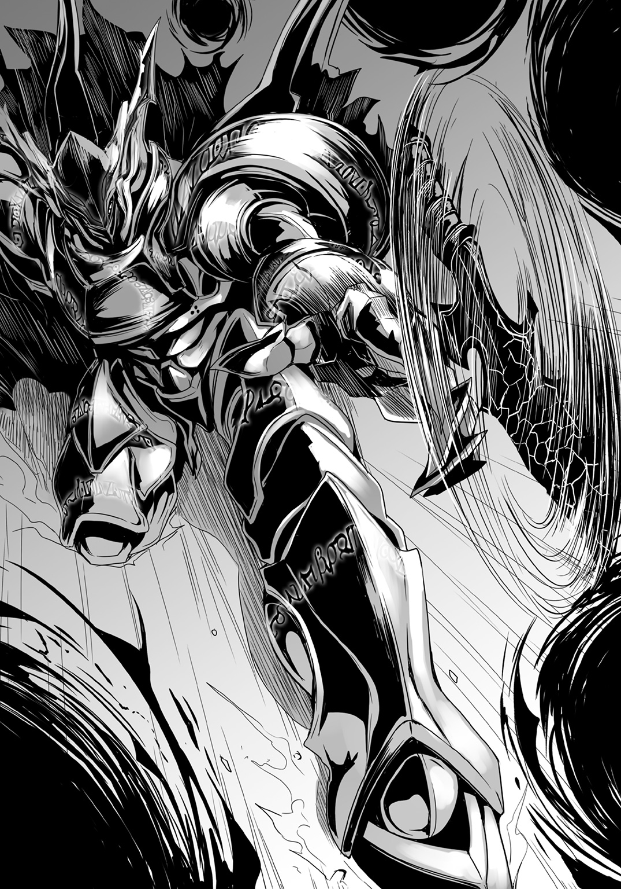

| 神鎧猟機ブリガンド 3 | |
| 榊一郎 | |
この本は縦書きでレイアウトされています。
また、ご覧になる機種により、表示の差が認められることがあります。

 ダッシュエックス文庫DIGITAL
ダッシュエックス文庫DIGITAL
神鎧猟機ブリガンド３
榊 一郎
序章
地獄絵図とは......まさにこの事なのだろう。
「撃て！ 撃て、撃て！」
「住民を避難させろ！ そっちが優先だ！」
「――だから応援を！ 早く！」
人は、苦痛というものに慣れる。
傷というものは、それを負った瞬間が最も痛い。
逆に......いかに辛い事であろうとも、毎日繰り返していれば感覚が鈍磨していく。その様に人間の心と体は出来ている。漠然たる不幸の感覚に虚ろな眼をする事はあっても、それをもって人は泣き叫んだりはしない。
幸福から悲劇へ墜落するその瞬間。
それが最も痛く、苦しい。
例えば......多くの家庭が平凡ながらも夕餉を楽しんでいたその時、降って湧いた怪物によって全てが叩き潰されてしまう様な時に、人は最も高く高く悲鳴を上げる。
「痛いいいいいぃぃ！」
「ママぁ!! ママぁ――どこ......!?」
「助けて！ 助けてぇ！」
鳴り響く警報音。燃え盛る炎の群れ。
だが消火の手は足りず、避難の誘導も体をなさない。防災無線が無感情に警告を繰り返し、時折、雷鳴の如き爆音が挿入され、逃げ惑う人々の悲鳴と足音がそれに覆い被さり――全体として意味不明の轟音へと堕していく。
勿論、人々に落ち着く様、必死に呼びかける者はいるが......入り乱れて溢れる、威嚇的な音の氾濫の中で、それは文字通りに焼け石に水だ。
集合住宅が幾つも倒壊し。
火炎はそこかしこで噴き上がり。
瓦礫と乗り捨てられた車が道を塞ぎ。
右往左往する人々の向こうに、傲然と立つ――異形。
「おい、どけよ！ 通れねぇだろ！」
「ひっ！ き、来た！ 来たああああっ!!」
「きゃああああああああ!!」
一層、激しく湧き上がる悲鳴と怒号。
恐慌状態そのものである。
我先にと逃げようとする人々は、目の前の隣人を押し退け、蹴り倒し、転んで泣き声を上げる幼児に手を差し伸べる大人もいない。そもそも多くの者は他人など『視えて』はいないだろう。彼等の眼に映っているのは、迫りくる脅威と、目の前の障害だけだ。
「なんだあれ、なんだあれ、なんだあれえ!?」
誰かがそう問うが無論、答える者はいない。
三階建ての建物にも劣らぬ背丈と、乗用車をたやすく踏み砕く体軀を備えた――怪物。
節くれ立った外皮の間から覗く血色の目が、無慈悲に、人々を蟻か何かのように見下ろしている。四肢を持ち、直立歩行する、大まかには人の形をしているが故にこそ、その異形はおぞましかった。
台風や洪水や地震といった自然災害は、悪意を持たない。
嘲笑い、憎悪し、積極的に人を襲いはしない。それをするのはただ人間のみであり、異形の歪な人型は、そうした理解しやすくもおぞましい、悪意の具現だ。
破壊神。
人に似ながら人にあらざる存在。
圧倒的な――暴力の具現。
無力な人々はただただ背を向けて逃げるか、さもなくば伏して通り過ぎるのを待つしかない。個人の力ではどうにもならない。一人一人の人間は本当に小さくて無力だった。それをあの異形は、ただ存在するだけで嫌という程にわからせる。
だから......誰もが必死で周囲に目を向ける余裕がない。
積み重なった瓦礫の下から、わずかに染み出している血にも、気づかない。気づいたとしても立ち止まらない。当たり前だ。それどころではない。本当にそれどころではない。
「............う......た......助け......て............」
瓦礫の下には少年がいた。
彼は自分で逃げる事が出来ない。もどかしげに身体をよじるが、その場からは全く移動できていない。全身に広がる苦痛は既に限界を超えていて、もう、麻痺の段階に入っている。痛くない。苦しくない。ただ――だるい。ひたすらだるい。このまま眠ってしまいたいとさえ思えてきたが、彼の中の生存本能が、最後の一線で異を唱えていた。
ここで意識を手放せば死ぬ。
既に夜であった事に加え、瓦礫の下という事もあり、少年の周りには闇が凝っている。
それはむしろ幸いだったろう。もし自分の身体がどうなっているのか、視る事が出来たなら、彼はその瞬間に恐怖と絶望で気を失っていたであろうから。
「......優羽............」
ふと少年の口から少女の名がこぼれ落ちる。
親が仕事で忙しいとかで――先程まで、少年の家で一緒に遊んでいた、幼馴染みの女の子。大丈夫だろうか。また泣いていないだろうか。本当に泣き虫で気が弱いのだ。こんな場所にいたらその場に座り込んでわんわん泣いてしまうだろう。
苦痛を殆ど感じなくなっているせいか、それどころではない筈なのに、少年は自分以外の者の事を案じていた。あるいはそれは単に、自分の上にのしかかる絶望から眼を逸らそうとする本能の働きだったのかもしれないが。
絶望。それが人を殺す。
だが――
「......ブレイバー......」
絶望を斃す希望。
困っている人のところに、泣いている人のところに、苦しんでいる人のところに、彼は必ずやってくる。やってきて助けてくれる。テレビでそう言っていた。何度も何度も。
天空騎士ブレイバー。
空を駆け、どんな窮地にも颯爽と現れる無敵のヒーロー。強くて格好よくて、絶対に負けない。ブレイバーならこんな瓦礫もどけてくれるし、優羽も泣きやませてくれるし、自分も助けてくれる筈だ。
きっと彼が来てくれる。
自分達を助けてくれる。
だから――今は、まだ、絶望すべきでは、ない。
そう信じて少年は待つ。
しかし......
「......ブレイ......バー......」
テレビ番組のヒーローは来ない。
待っても、待っても、待っても、待っても、来なかった。
願っても、頑張っても、呼んでも、祈っても、来なかった。
「............」
あれは、噓なのか。
何もかもが、噓なのか。
今にも途切れそうな少年の意識に疑念が湧く。
ブレイバーなんて、いない、のか。
「......ゆ......う............」
このまま一生、ここから出られないのだろうか。
このままもう二度と動く事は出来ないのだろうか。
家にも帰れない。学校にも行けない。友達にも会えない。来週のブレイバーの活躍も観る事が――......いや、それは、もう、どうでもよくて。
テレビ番組のヒーローの代わりに、背後に忍び寄ってくる黒い何か。
それを感じて少年は短く呻いた。
――――死。
まだ幼い子供には本来、意識する事すら希な概念だ。
昨日と同じ今日、今日と同じ明日、それが途切れる事なく続いていくのだと、根拠もなく思う――思う事が出来る、幼少時代。子供達にとって未来とは本来、自分の足下から永遠の彼方に伸びてゆく輝かしい軌条であり、それがどこかで突然、断絶するなど、考えてもみない。
しかし......
「............」
自分は死ぬのだろうか。死んだらどうなるのだろうか。
それは恐怖というより漠然とした疑問だった。
だがそれに対する答えは得られる事なく、影は着実に近づき、濃くなっていく。
「............」
その中に呑み込まれたら終わりなのだ、と少年は悟った。
手足はやはり動かない。ここから――迫りくる死から自力で逃げる事は不可能だ。
意識が千々に乱れていく。むしろ今まで意識があった事の方が奇跡だろう。
もう苦しくない。もう終わっていい。
そんな甘やかな死の誘惑が少年の上に覆い被さっていく。助けを待っていたのが馬鹿らしくなる様な、安らいだ気分に、少年は眼を閉じる。
そして――
第一章
窓から吹き込む風が――温い。
夏はすぐそばにまで来ていた。
「............」
ふと若槻紫織は眼を瞬かせる。
先日、半袖になった制服から伸びる彼女の腕を、微かな風が撫でて過ぎる。冷たくもなく熱くもなく、ただ産毛の上に感触だけを残していくのが心地よい。思わず眠気を誘われる心地よさだ。
半ば無意識のうちに緩んでいた口元から、漏れかけていたあくびを、紫織は嚙み殺した。
（......ねむ......）
放課後の生徒会室は、いつになく静かだった。
会話の声は絶無。微かに聞こえてくるのは、書類にペンを走らせる音、パソコンのキーを叩く音、程度のものである。生徒会長の相原綾をはじめ、生徒会の面々は皆それぞれに机に向かい、集中していた。
一見すると、誰もが生徒会の仕事を黙々とこなしている様にも見える。
だが――よくよく見れば、生徒会の書類と一緒に、教科書やノートを広げている者も少なからずいる。普段は生徒会活動とは関係のない事は禁止なのだが、この時期に限っては自習も容認されているのだ。
（......夏休みまで一カ月切ったしね......）
もうすぐ夏休みである。
当然ながら学生の身としては、一年の中でも有数のイベントが目白押しの時期だ。受験や就職活動が控えている三年生はともかくとして......一年生や二年生にとって、長い休みは日頃の通学という束縛から一気に解放される喜びに満ちている。友達と連日遊ぶも良し、家族と旅行に出かけるも良し、気になる異性との仲を一気に進展させるも良し。
何にせよ、学生達の期待は日増しに高まっていく。
ただ――その前には一つ大きな試練が待ち構えている。
期末テスト。
心置きなく夏休みを満喫するには、全教科で、一定以上の点数を獲得しなければならない。赤点でもとって補習という事になれば、夏休みだというのに、定期的に学校に通わねばならなくなり――長い解放の季節は無慈悲に分断され、可能性は幾つもの面から制限されてしまう。
「生徒会役員たるもの、多少なりとも生徒に模範を示さなければならない。まかり間違っても平均点を下回るようなことはないように」
綾からはそんなお達しも出ている。
生徒会にはそこまで成績の悪い者はいないそうだが......生徒会の活動で勉強時間を削られるのには、やはり不安を覚える者もいる。普段から勉強していれば――などというのは実体のない理想論だろう。
そういうわけで、綾は生徒会活動の時間内にも試験勉強を許可している。前述の『生徒に模範を示す』のも生徒会役員の仕事のうち――という考え方だ。勿論、通常の生徒会業務と平行してという事になるのだが。
試験勉強と生徒会活動。両立は大変――に見えるが。意外とこれが効率的と生徒会役員の間では好評である。どうしてもわからないところを、気楽に他人に尋ねられる勉強会として機能するし、勉強に疲れれば生徒会活動、生徒会活動がひと段落すれば勉強、とこまめに切り替える事で、むしろ短時間で集中出来る。
ちなみに――言い出しっぺの綾は成績も優秀で、生徒会室で教科書を開く事はまずない。少なくとも紫織は見た事がない。普段から予習復習は万全とのことだ。
一方......紫織は入院生活が長かった為に、学業では遅れが目立つ。静かな生徒会室で試験対策ができるのはむしろ助かったくらいだ。
（......っていうか、本当、今更だけど、私がここにいていいのかな？）
役員でもない自分が、生徒会室の一角に当然のように座っている。
元々は『転校してきた生徒が、手持ち無沙汰で学校に馴染めなくてはいけない』という事で綾が紫織を生徒会室に連れてきただけで――紫織は未だに正式に生徒会に入ったわけではない。ただなんだかんだで雑用を手伝う様になってきたので、生徒会役員達も、紫織の事を仲間と考えている様だったが。
部活に入るつもりもなく、さりとて家にこもるのも気が進まない紫織にとって、生徒会室という居場所があるのは有り難い事だった。
（......彼も最初はこんな感じだったのかしらね）
ふと紫織は――横目で隣席の男子生徒の様子を窺った。
この生徒も少し他の役員達とは違っていた。
綾と同じく、教科書やノートを一切開いていない。その横顔は、もう見慣れた筈なのに、それでも時折、はっとさせられる程に整って......雑誌の表紙を飾っていてもおかしくない美男子ぶりである。
斯波連志郎。生徒会の書記。
彼は同時に紫織の同級生である。
端正な顔立ちと物静かな佇まいは、何をしていても実に絵になる。
周りが試験勉強に四苦八苦する中、悠然と本を――彩り豊かな雑誌を読む姿も小憎らしい程絵になっていた。周囲におもねる事なく、堂々と我が道を行く余裕が、もはや風格のようにすら感じられる。
惜しむらくはその歩む道が......微妙にねじ曲がっている事だが。
「............」
切れ長の双眸が一心不乱に視線を注ぐ先、その雑誌の誌面には、艶やかで可愛らしい衣装を着た少女の絵が大きく描かれていた。
アニメの登場人物だ。それもどちらかというと女児向けに作られている作品の。
ちなみに......机の上には他の生徒会役員と同様に、生徒会の資料も置かれている。しかし、連志郎はそれを一読しただけでそっけなく脇に置いてしまった。そしておもむろに自分の鞄からアニメ雑誌を取り出すと、横で見ていても思わず引いちゃうくらいの集中力で読みふけりだしたのだ。
何度も前のページを読み返したり。あるページを穴が開きそうな程凝視したり。
途方もない熱意を持って読んでいるのがよくわかる。
既に一瞥もされない資料との対比が、なんとも生々しかった。
（その熱意の十分の一でも、他に回せばいいのに）
詮ないことと知りつつも、紫織は内心で溜め息をついた。
『残念イケメン』『パチモン生徒会長キャラ』『美形の無駄遣い』等々――連志郎は散々な綽名で呼ばれている。彼程の美男子であるならば、ちょっとやそっと趣味が変でも気にしない女生徒は多いだろうが......彼は呆れた事にアニメや漫画の登場人物、つまりは二次元にしか興味を示さない。お陰で黙って立っていれば引く手数多の美形の癖に、浮いた話が殆どない。あっても速攻で――そのオタク趣味の業の深さに女の子の側が耐えきれず――潰れてしまう。それが斯波連志郎という少年だった。
勿論、連志郎自身はそういう状況をまるで気にしていない。
自分につけられた綽名も知っている様だが、自分から改善しようという素振りは微塵もなく......そもそも周囲の視線を意識していない。
今こうして紫織が呆れ顔で見ていても何の反応もない。
「............」
ちょっとだけだが紫織はムっとした。
いろいろあって、紫織は他の生徒達よりも少しだけ連志郎と縁が深い。他の者が知らない様な連志郎の個人的な秘密を、紫織は知っている。
だからこそ、普段から何かと彼の事が気にかかってしまうわけだが......連志郎が紫織の事を気にかけている様子はない。少なくとも気がつけば彼が紫織の方を見ているとか、彼から紫織に何か、挨拶以外で話しかけてくるとか、そういう事はない。
なんだかそれが――不公平な気がして紫織はおもしろくないのだ。
ひどく一方的というか、一方通行というか。
もっとも、細かな事情を知らない周りからすれば、紫織と連志郎の関係はまた別の解釈が生じる様で――
「若槻先輩、また斯波先輩のこと見てる」
「毎日わざわざ生徒会室まで来るくらいだもんね」
「斯波先輩って実はツンデレ？」
「きっと二人っきりの時って凄いんだぜ、ああいうヤツに限って」
「俺も若槻の胸に顔埋めてみたい......！」
「斯波............爆発しろ！」
などと生徒会役員達がひそひそと言葉を交わすのが聞こえてくる。
「............」
とりあえず紫織は黙殺した。
露骨に反応すれば誤解が深まって、事実無根の余計な噂が流れる事になる。それはこの三カ月あまりで紫織も嫌というくらいに学習した。
......まあいろいろあって実際、紫織が連志郎を抱きしめてしまった事はあるのだが。
それは恋人同士の行為ではない――ないと紫織は思っている。
ともあれ......
「――ふむ」
ふと綾が顔を上げて言った。
「根を詰めすぎるのもよくないし、少し休憩しようか」
そんな言葉で、ふっと室内の空気が緩む。
何人かの顔に安堵の色が浮かぶのが見えた。
無言で集中するのはいい事かもしれないが、あまり長時間それが続くと半端なく疲れてくる。人間が集中して勉強出来る時間はそう長くない。先の紫織と連志郎に関する生徒会役員達の会話も、『そろそろ限界ですよ』という表れだったのだろう。紫織が連志郎の方を見ていなくとも、別の話題でひそひそ話が始まっていたに違いない。
綾の宣言は絶妙のタイミングといえた。
こういう見極めが彼女は本当に上手い。綾の場合、ただ可愛いからというだけで生徒会長になっているわけではないのだ。
「ん............」
紫織も凝った背中を大きく反らせて伸びを――一つ。
ちなみに連志郎はかまわずアニメ雑誌を読んでいる。
そんな中――
「会長会長会長！ 若槻先輩も！」
休憩になるのを待っていたかのように、一年生の女生徒が席を立った。そのまま転がるような勢いで綾と紫織の方へ駆けてくる。
生徒会の中でもひときわ明るい元気印、沢渡夏美だ。
「どうしたんだい、夏美ちゃん」
「おもしろいおやつを見つけたんです！ じゃーん！ 〈ブレイバー〉クッキー！」
「ええっ!?」
夏美が得意満面に差し出したお菓子を――紫織は目を丸くして受け取った。
透明な包装の中に、変わった形をしたクッキーが入っている。デフォルメされているが、ロボットを模したものなのだとわかった。勿論、産業用の工作機械の事ではなく、アニメやゲームに出てくる様な、人型の――それも横顔だ。
ブレイバー。
それはかつて国民的な人気を誇った特撮番組の題名だ。
同時に――
「この間、『ブルー・オーシャンズ・ガーデン』で〈ブレイバー〉が出動したじゃないですか。結構ハデにやられちゃいましたけど。でも、今あちこちで話題になってるんですよね！」
「よく知ってるわね、夏美ちゃん」
「そりゃあ、もう！ 動画サイトで生中継してる人もいたんですよ。ああん、アタシも生で見たかったですぅ！」
『ブルー・オーシャンズ・ガーデン』とは、この街で一番の総合レジャー施設だ。海岸に面して建設されており、海水浴場も兼ねている。ますます暑くなるこれからの季節、観光客のみならず地元の人間も押し寄せてごった返す人気施設だった。
紫織は先日、その『ブルー・オーシャンズ・ガーデン』を訪れていた。ひょんなことから優待チケットが手に入り、連志郎と綾、それに風間大悟と今村優羽というクラスメイト二人も含めて遊びに行ったのだ。
親しい友人達と過ごす初夏の休日。
少々特異な過去を持つ紫織にしてみれば、それはとても得難く特別なもので、誇張でも何でもなく、一生の思い出になる――筈だった。いや。実際それは一生忘れる事のないであろう一日になった。決して素敵な記憶ばかりでもないが。
事件が起きたのだ。
それも――
「あの遊覧潜水艇、危なかったよね」
「もう〈悪魔憑き〉がいないなんて、誰も信じないよな」
「あれだけはっきり見ちゃったらなあ。しかも何百人も」
「相変わらずテレビじゃ爆弾テロとか言ってるけどなあ」
ビーチの向こう、海の中から突如として出現した異形の怪物、〈悪魔憑き〉。
都市伝説レベルで存在を語られつつも、公には否定され続けてきたそれが、休日の『ブルー・オーシャンズ・ガーデン』を襲った。衆人環視の中、堂々と現れて、遊覧潜水艇に攻撃を仕掛けたのである。
これが話題にならない筈がない。
まして――
「もしかして今日も動画を見つけたのかな、夏美ちゃん」
やや呆れ気味の口調で綾が問う。
「勿論です！ あとでみんなで見ようと思って！」
夏美はといえば、むしろ誇らしげに胸を張って言った。
休日のレジャー施設は当然ながら大変混雑しており......携帯電話やカメラを所持している人も多かった。問題の事件の現場については、無数の画像や動画が撮影され、ネットに溢れかえって――〈悪魔憑き〉と呼ばれる『病気』や、それにまつわる幾つもの噂について、信憑性を与える事になった。
「あ、でもまずは食べてみません？ 〈ブレイバー〉クッキー」
「んん......商魂たくましいとは、このことだね」
袋から〈ブレイバー〉クッキーを取り出し、感心した様子で眺める綾。
〈ブレイバー〉は、事件の際に〈悪魔憑き〉と戦った人型のロボットだ。
〈悪魔憑き〉は――正確にはその病態の最終段階ともいうべき〈魔神態〉は、体長五メートルを超す巨体である。勿論、生身の人間がこれに武器もなく向かっていって勝てる筈もなく、それ故に〈魔神態〉を制圧するために、格闘可能な戦闘兵器として〈ブレイバー〉は開発されたらしかった。〈魔神態〉が出現する度に、戦車部隊だの何だのを繰り出して、街の一区画を犠牲にする様な戦い方をするわけにはいかないからだろう。
実は〈ブレイバー〉が衆目に曝されるのは、その時が二度目だった。
一度目は、紫織達が通う学校の近くの公園で、やはり〈魔神態〉と戦っている。
こうなると、〈ブレイバー〉の存在自体、いかに政府が情報操作をしようとしても、隠し通すのは難しいだろう。マスメディアが報じない事でむしろ発憤して、『聖戦』をしたがる自称・情報通もネットには沢山いる。
結果......関係者の名が明かされていない事もあり、『〈悪魔憑き〉を倒す正体不明のヒーロー』として〈ブレイバー〉はネットで持ち上げられ始めていた。
一部のメカマニア、ロボットマニアなどはネットの掲示板で盛んに意見を戦わせ、その性能諸元は勿論、運用方針から稼動の費用まで推論した上で、正体を見極めようとしているようだ。
そういう盛り上がりに、いち早く反応した商売人がいるらしい。
クッキーは比較的、簡単に作れる菓子ではあるだろうが――それにしても、この対応の早さは呆れるやら恐ろしいやら。同じく話題になっているにもかかわらず、〈悪魔憑き〉クッキーでなかったことには、最低限の良識を感じるが......一体、どこの誰がこんなものを売り出しているのか。
「これ、うちの近所のパン屋さんが作ったんですよ」
「今も売ってるの？」
「いいえ。アタシが買った次の日にはなくなってました。もう作らないんですって。なんででしょう？ そんなに売れなかったのかなあ？」
クッキーを手に夏美は首を傾げた。
（......圧力でもかけられた？）
ふと紫織はそんな風に思う。
ほぼ事実として衆目に曝け出されたとはいえ......〈悪魔憑き〉の〈魔神態〉や〈ブレイバー〉について政府や関係組織から公の発表があったわけではない。またネット上の動画や記事も次々と削除されている。情報統制だ。
政府内には〈悪魔憑き〉に関する問題を管轄する組織がある。
草薙機関。正式名称は紫織も知らないが――一時期、この機関の監督下にある施設に紫織は入っていた事があったし、今もこの機関から派遣されてきた監視員が、この学校にはいる。恐らくは草薙機関があちこちに手を回しているのだろう。
さすがに地元のパン屋にまで干渉してくるとは驚きだが。恐らくそのパン屋も、さぞかし驚いた事だろう。黒服の男達がやってきて、脅しをかけたりしたのだろうか。
「斯波先輩もどうぞ！」
夏美は笑顔で連志郎にもクッキーを差し出した。
（本当に物怖じしないわよね......この子）
紫織は内心で感心していた。
どうもこれは彼女だけの意見ではなく、他にも生徒会役員が何人か、苦笑している。美形だが無愛想な上、趣味嗜好の面でも変人そのものの連志郎に対して、夏美が、普通の知り合いに対するのと同じ様に話しかけているからだ。何度無視されようが、辛辣な物言いをされようが、夏美はめげないし、懲りない。
今回も、連志郎はいつもと同様に無視するか、皮肉なひと言を投げるだけだろう。
そう思い、連志郎を窘めようと腰を浮かした紫織だが――
「ありがとう」
「ちょっと、斯波くん――――へっ!?」
思わず間の抜けた声が漏れた。
連志郎がアニメ雑誌を閉じて、夏美の方を向き、クッキーを受け取ったからだ。
「......何か？」
クッキーを受け取った連志郎が、怪訝そうに眉を顰めて紫織に眼を向ける。
「ああ、えっと、その。なんでもないよ、なんでもない！」
慌てて両手をぶんぶん振る紫織。
一体どういう風の吹き回しか。驚いたのは紫織だけではないらしく、他の生徒会役員達も眼を丸くして連志郎の方を見ている。いつもと変わらないのは、当の連志郎と夏美、そして綾くらいのものである。
そして――
「なんか斯波先輩、雰囲気変わりましたよね。前はもっと取っつきにくかったんですけど、少し話しかけやすくなったみたいで」
「ちょっ......」
思わず言葉に詰まる紫織。
あろう事か......連志郎本人に直接そんな事を言うとは。
本当に夏美は物怖じしない少女である。
しかも彼女は笑顔のまま、ふと首を傾げて連志郎の横顔を覗き込む。
「なんでしょう？ 若槻先輩が生徒会室に来るようになってからですかぁ？」
「んん？」
綾の目がきらりと光った。紫織には光った様に見えた。嫌な予感と共に。
「――また余計なこと考えてるでしょ、綾」
「思索は個人の自由だよ。余計かどうかは主観の話だね」
「私と斯波くん、なんでもないからね」
先回りして牽制しておく紫織。
どういう思惑からなのか......綾は、事あるごとに紫織と連志郎が、彼氏彼女の関係にあるかの様に扱いたがる。いや。むしろこれは焚きつけているのか。目端が利く彼女がこんな安易な誤解をするとも思えないから、彼女には彼女なりの考えがあるのかもしれないのだが――
「そう邪険にすることはないよ、紫織ちゃん。君と斯波くんは友人だ。そうだろう？」
「それはまあ、そうだけど」
「互いの心情を変化させるのは恋愛だけではない。友情も十分、その範疇に入る。毎日接して、話をするだけでも人の心は安らぐものだ。挨拶一つでも気が晴れることがあるしね。声をかけるのは大切なことだよ。私にもそれくらいのことはできるから、折に触れて校門に立っているわけだし」
「はぁ......」
思いの外、真面目な反応が返ってきて戸惑う紫織。
元々朝礼や全校集会で話すことも多い綾は、話術にも長けている。言葉そのものは妙に硬いというか、女の子らしくないのだが、しっとりとした口調は耳に優しく、自然と胸に染み渡る様な説得力があった。
「紫織ちゃんが斯波くんに変化をもたらすというのもおもしろいね」
「そ、そう？」
「王子様の接吻がお姫様の眠りを覚ますのは定番だが、女性の強くなった現代だ。逆のパターンがあってもいいだろう。お姫様が王子様の心をこじ開けても構わない。斯波くんが周りと打ち解けていくのなら、それはいいことだ」
そう言う綾は――小柄で幼い姿なのに、やけに大人びて見える。
まるで可愛い弟が自立するのを喜ぶ姉の様な。
（そういえば......）
考えてみれば綾は、紫織が連志郎と出会う以前から、彼と知り合いであった様だが。
一体、二人はどの様にして出会ったのだろうか？
そもそもあの自分勝手――もとい個人主義の塊のような連志郎を、どうやって生徒会に引き入れたのだろうか。書記として最低限の仕事をすれば、空き時間はアニメ雑誌を読んでいていいという条件らしいが、それだけで唯々諾々と提案を受け入れる様な性格ではないだろう、この斯波連志郎という少年は。
そう考えるとやはり気になる。
二人はどういう関係なのか。
楽しげに紫織と連志郎の関係を冷やかしている綾だが、むしろ――
「というわけで」
ふと綾の眼差しが悪戯っぽいものに転じる。
「一つ、接吻でもしてみようか、お姫様？」
などと、生徒会長はとんでもない事を言い出した。
「は？ してみようかって――そんな」
ものは試し、と言わんばかりの軽いノリでやる事でもなかろう。
「いいじゃないか、減るものでもなし。むしろ経験としては増えるのだから」
「だから、なんでそう一足飛びの話になるの!? 私と斯波くんはそういう関係じゃないんだから――」
「ん。だからこれから一歩一歩関係を築いていけばいい」
「つまり、斯波先輩と若槻先輩が、リア充の――いえ、大人の階段を上りつつあるのをアタシ達、目撃してるんですね!?」
と眼を輝かせて夏美が言う。
「ほら、夏美ちゃんが真に受けてるじゃないの！ ちゃんと否定してよね、綾！」
「仕方ないな」
綾は肩を竦めてから夏美の方に向き直ると、大きく頷いてみせた。
「夏美ちゃん。大人の二人は人前でいちゃいちゃしたりはしない。分別をわきまえているのだよ。公私をきっちり分けるのはたしなみの一つ。二人を見習って、君も素敵な大人になるのだよ？」
「はい！ 若槻先輩を見習って頑張ります！」
「何の話よ!?」
躍起になって否定すればする程、泥沼に引きずり込まれているかの如く、むしろ深みにはまる印象があった。周囲は勝手に『素敵な二人』を見守る様な、慈しむ様な、そういう眼になっている。
しかももう一人の被害者――もとい当事者である筈の連志郎は、まるで気にした様子もなく、再び開いたアニメ雑誌のページをめくっている。このふてぶてしさの半分でも分けてもらいたい、と心底、紫織は思った。
「......っていうか斯波くん、斯波くんも何か言って！」
「............」
「斯波先輩。またおもしろそうなものがあったら持ってきますね。期待しててください」
「ああ」
「そうだ！ 『ブルー・オーシャンズ・ガーデン』の動画も一緒に観ませんか？」
「いや。それは結構」
「そうですかぁ？」
多少残念そうではあったが、夏美は素直に引き下がった。
連志郎は再びアニメ雑誌の誌面に視線を落とす。
その様子を見ながら――何やら紫織は不愉快な気分になった。
（私は無視したくせに、夏美ちゃんには返事するわけ？）
勿論、連志郎は『何か言え』と言われても単に言うべき言葉を思いつかなかっただけかもしれないのだが。扱いが不公平な様に紫織には思えたのだ。
（......っていうか、夏美ちゃんって、実は斯波くんの事が好きとか？）
だったら、彼に物怖じせずに声をかける事も、連志郎が夏美の言動に普通に応対している事にも、筋が通る。自分に向けられた夏美からの好意を感じ取っているので、あまりに素っ気ない態度は気が引けると思ったとか。
（......ってないかな。そんな事）
連志郎がそんな気遣いをする性格にも見えない。
「それじゃ、クッキーも食べましたし、動画鑑賞タイムに入りますか！」
「夏美ちゃん」
苦笑を浮かべながら綾が言う。
「観る前に確認しておきたいのだが、頼んでおいた仕事は？」
「ふっふーん。同じ失敗は繰り返しませんよ、会長」
芝居っ気たっぷりに、一本立てた人差し指を左右に振りながら夏美は言った。
「きっちり終わらせてます。あと生徒会のパソコンを使っちゃダメってことだったので、今日は自分のスマホです！」
時代劇でどこかのご老公一行が悪人に突きつける印籠の如くに――夏美はスマートフォンを突き出した。その液晶画面には動画投稿サイトが映し出されている。
生徒会の面々が次々に席を立って画面の前に集まっていく。やはり誰もが興味のある話題なのだろう。
しかし――
「............」
紫織は連志郎の様子を窺う。
彼は先の答え通り......見るつもりはないらしい。席に座ったまま、立ち上がる事もなく、黙々とアニメ雑誌を読みふけっている。
（自分が映ってるかも――って気にならないのかな）
どこから撮影した動画かはわからないが、『ブルー・オーシャンズ・ガーデン』の事件の動画なら、その中に連志郎は確実に映っているだろう。
それも......学校とは全く異なる姿で。
（世話が焼ける......）
連志郎自身が気にしていなくとも、紫織としては気にせざるを得ない。
何しろ紫織と連志郎は幾つかの点で運命共同体である。連志郎の『正体』が世間に知られてしまえば、紫織にもいろいろと不都合が生じてくる筈だ。
憮然とする紫織をよそに、夏美の指がスマートフォンに伸びる。
「それじゃ、再生しますよぉ！」
画面が白い指先に二度ばかり叩かれ――明るい海岸線を映した画像が動き始めた。
●
部屋に満ちる静寂を、排気扇の回る音が緩やかにかき回している。
繁華街の片隅――いや、かつて繁華街であった区画の端に、まるで置き忘れられたかの様に残されたダーツ・バー。
既に商業的には閉店し、客の姿も従業員の姿もない、半地下の廃屋である。
照明は消えて久しく、天井付近の小さな窓から差し込む光の中で、音もなく塵が舞っているのが見える。債権関係でもめ事でもあったか......通信機能付きの電子ダーツ盤をはじめ、各種設備だけは、そのまま残って埃を被っているが。
当然ながら入り口も施錠されている――筈だったが。
「............」
今、店内には何人もの人影があった。
老若男女――共通点はない。髪型や服装もバラバラだ。若い女性が水着同然の格好で胸元やへそ周りを大胆に出しているかと思えば、壁際の男性はトレンチコートを羽織っていたり、カウンターで袋菓子をむさぼる男性は肥満体にはち切れそうなシャツを着ていたり......と、季節感すら、彼等の姿からは読み取るのが難しい。
退屈そうにタバコをふかす者、一心不乱に携帯ゲーム機を操作する者、床の上にひっくり返って大いびきをかく者......それぞれ好き勝手にたむろしていて、何の集まりなのかさえ一見すると定かではない。お互いには何の関係もない他人の様で、たまたま廃墟に入り込む物好きが沢山いた――だけの様にすら見える。
唯一の共通点は......店内に満ちる退廃的な空気だった。
埃まじりのすえた空気がどこか破滅的な印象を強める。
ただ――
「――慣れたものね」
コンビニで購入したカフェオレのカップを手に、蒲生亜麻音は感心する口調で言った。
前述の様に、元々統一感のない面々ではあるが......その中でも彼女は一際、異彩を放っていた。セーラー服......明らかに学校の制服だ。特に着崩している様子もなく、長い黒髪も地味な三つ編みでまとめ、眼鏡もかけたその姿――絵に描いた様な『地味めの優等生』そのものである。とてもダーツ・バーに......それも閉店後の廃屋に入り浸る様には見えない。だからこそここでは非常に目立つ。
この場においては『普通』や『平凡』こそが異物といえた。
亜麻音の視線の先には――パソコン一式があった。
その前に座って一人の男が熱心にキーボードを叩いている。
これだけが例外的――時間潰しとは異なる、生産的な光景といえた。連結された複数ディスプレイを見ていれば、無為にネットの海をたゆたっているだけではない事がわかる。刻々と変化するその内容は、むしろ証券取引所の株価や、ある種の計測器が送ってくる測定値の様に見える。
「――恐縮です」
パソコンの前に座ったスーツ姿の男は、無表情にそう言った。
口調もどこか上の空なのは、目の前の作業に集中しているからだろう。職業的にパソコンを使いこなしている者特有の素早さで、彼はキーボードの上に両手を走らせ続けている。横にはマウスもあるが、そちらには殆ど触れる事はなかった。たたたたた、とリズミカルに響くキータッチの音が、ある種のＢＧＭの様にさえ聞こえる。
「こういう仕事をしていたものですから」
明らかに男は亜麻音よりも年上だが、応じる口調は上司に対するものであるかの様に丁寧だった。職業として組織に所属していた事の名残なのだろう。目上の者に対しては意識する事なく口調が切り替わる。
当然といえば当然か。男は亜麻音が『拾った』からだ。
キーボードで矢継ぎ早に命令が入力される様子を、亜麻音は見るとはなしに眺めている。元々パソコンは一台だけ店にあった。暇潰し用に置かれていただけなのだが、今は五台が接続されて常時に稼働し続けている。
（電気代はどうしているのかしら）
ふと益体もない疑問が頭をよぎる。
それから亜麻音は自らの思考に苦笑を浮かべた。
人を殺しても街を破壊しても、気に病むどころか、それが当然――良心の呵責などどこかに置き忘れてきた〈悪魔憑き〉達。病状が進んで強大な力を手にしたのと同時に、彼等は常識や社会通念から解放された。
そんな怪物達が、たかだか数千円の出費を気にするとは、滑稽な話である。
これとて以前の、普通の人間だった頃の習慣を引きずっているだけなのかもしれないが。
今――この店内にいる者達は全員が〈悪魔憑き〉だ。
正確に言えばその極致、〈魔神態〉を出せる様になり、己の中に宿っている『悪魔』の力を意識的に操作出来る者達である。人間の姿をしてはいるものの、必要とあれば異形の巨体に変じ、卵の殻を割るかの様に容易く、街を壊し人を殺す。
そしてここはそんな〈悪魔憑き〉による互助組織〈フォスファー〉の潜伏地である。いや。集会所というべきか。所属する〈悪魔憑き〉達は好き勝手にここにやってきて顔を合わせているだけだ。
（案外、能力で発電しているのかも？）
そんな事をふと亜麻音は思う。
〈悪魔憑き〉の能力は千差万別、個性が強い。このスーツの男の能力が発電であってもおかしくはないだろう。もっとも単純にどこかから送電線に『枝』をつけて盗電していると考えた方が簡単だろうが。
（それにしても）
途切れる事のないキーボードのタイプ音に、亜麻音は眼を細めた。
男はディスプレイに目をやったまま、手元には一瞬たりとも視線を落とす事はなく、正確にキーを叩き続けている。指の動きは滑らかで淀みなく、一流のピアニストさながらだ。
猛烈な勢いで画面の上に紡ぎ出されていく文字列も、既に亜麻音には理解出来ない領域に達している。他の者もこの男の作業を理解しようとする努力を放棄して久しい。
内容は理解出来なくとも、この『仕事』ぶりだけでわかる。
この男はかつて――〈悪魔憑き〉を発症するまでは優秀な技術者だったのだろう。
（何を考えているのかしら）
基本的に〈悪魔憑き〉は他の〈悪魔憑き〉と関わりを持たない。
彼等は利己的で自己中心的で、尊大だ。他人というものへの感覚が鈍く、繫がることへの価値も見いださない。要するに自分が一番大切で、自分が満足できればそれでいい。
〈フォスファー〉も根底には〈悪魔憑き〉のそうした感覚がある。
互助組織として集まっているが、参加も脱退も自由。行動を制限することもない。構成員は亜麻音が拾ってきたり、どこからか噂を聞きつけて自らやってきたりとバラバラの来歴で......既に組織を抜けて去っていった者もいる。
主宰者の亜麻音は勿論、それを咎めたりはしない。
彼女は情報を求めていた。
生き残るための情報。亜麻音が生き残るための情報を集める――それが〈フォスファー〉を立ち上げた根本的な理由だ。変わり者の〈悪魔憑き〉を自称しているものの、彼女とて、利己的で自己中心的という〈悪魔憑き〉の基本から逸脱しているわけではなかった。
（人間は社会性の生物で――群れて暮らすが故に、言語を発達させ、高度な意思疎通の手段を手にしてきた。その一方で人間の進化形である〈悪魔憑き〉は、個体の生存性が高く、その発現能力にも差が大きいため、社会性に乏しい）
亜麻音は自分の頭の中でそんな言葉を弄ぶ。
折に触れて繰り返す――それは彼女の信条の様なものだった。
（性欲の減退も同様。社会性の低い生物程、発情期が明確に存在する。普段、群れる必要がなく、縄張りを持つ生き物にとって、むしろ同種の個体は競合他者として邪魔。自己複製としての生殖の際に、異性の存在が必要となるだけで、だから発情期というシステムで時限的に行動基準を切り替えているだけ）
以前、〈フォスファー〉の構成員同士がセックスに興じていた事があった様だが、彼等も大して快感を得られたわけではないのか、絡み合っていたのはそれっきりで、再び生殖行動に至る様子はない。
（そう。基本的に私達は人間の形を残してはいるものの、人間とは行動基準からして別種の生き物。今は『本能』的に行動してそれでどうにかなっているけれど――）
自分達が何なのか。
それを知らずに、好き勝手に生きていくのは――危うい、と亜麻音は思う。
このスーツ姿の男は比較的、亜麻音の考えに近いものを持っている様だった。だからこそ彼は、慣れ親しんだ方法で積極的に情報を集めようとしている。彼がこの場におらずとも、眠っていても、あるいは......彼が死んだあとも、彼の手によって作られたプログラムは半自律的に〈悪魔憑き〉とそれに関連する情報を集め続け、分析し続けるだろう。
「......正直、コンピュータの世界は最新技術が五年で陳腐化しますのでね」
男はふと思い出した様に言った。
「私はもうシステム・エンジニアとしてはロートルもいいところですよ。最新技術についていけていなかったから......同業他社がしのぎを削る業界に、居場所はなかった。〈悪魔憑き〉になっていなければ、『収容所』にぶち込まれる事もなかったが、代わりに職を失って首をつっていたかもしれませんな」
「むしろ〈悪魔憑き〉になったからこそ、身につけた技術が生きている？」
「そうとも言えるかもしれませんな」
やはり無表情にキーを叩きながら男は言った。
「皮肉な話――なのかしらね」
亜麻音は苦笑を浮かべた。
〈悪魔憑き〉にならなければ、職を失っていたかもしれないとはいえ、人間として生き、人間としての死を迎えていた事だろう。たとえその結末が自殺であったとしても、収容所で危険な動物の様に扱われ、機械的に『処分』されるという最期よりは、いわゆる『人間の尊厳』に満ちた終わり方であったかもしれない。
果たして――
「......どちらが『幸せ』であったのかしら」
亜麻音は呟く。
勿論、既に別の生き物に『進化』している以上、幸福の概念すら異なっている可能性がある――比較するのは無意味だろう。
「............」
亜麻音はカフェオレを口に含んだ。
苦みと甘みが口の中で絡み合い、舌の上を滑って喉の奥に流れていく。
どちらも一度に味わえるのがいかにも贅沢な感じで、これは以前からの――『転生』前からの亜麻音のお気に入りだ。そしてその嗜好は今も変わっていない。
人間と〈悪魔憑き〉。
両方の生き方を同時に楽しむ事は、できないのだから。
●
「おおお......」
感嘆の声が生徒会室に満ちる。
いつの間にか――夏美の小さなスマートフォンの画面に、十人分を超える視線が集まっていた。男子も女子も興味津々といった様子で動画に見入っていた。
「ぬふふ。今回の動画は一つじゃないんですよ。他にも見つけましたから」
夏美が小さく鼻を鳴らし、スマートフォンを操作。
示された関連動画の一覧には、同じく『ブルー・オーシャンズ・ガーデン』を映したサムネイルがずらりと並んでいた。『悪魔憑き』『ブレイバー』といったタグまでついているようだ。コメントも膨大な量に上る。
以前も夏美が〈悪魔憑き〉の事件の動画を見つけてきた事があった。
その時には、あちこちのサイトを回って、ようやく一つ見つかったくらい――だと夏美が言っていたが。対して、今回の『ブルー・オーシャンズ・ガーデン』の動画はネット上のあちこちに転がっているらしい。情報は次々に拡散され、片っ端から閲覧されてコメントがつく。更に同意や反論が重なり、あちこちの掲示板やコメント欄で炎上も起こっている。
一種の『祭り』と呼ばれるような状態だ。
「まるで当局の検閲が追いついていないようだね」
綾がポツリと呟く。
紫織はぎくりとして、思わず表情を強張らせた。
恐らく草薙機関は不毛ともいうべき情報統制作業に追われているのだろう。あるいは保健室に養護教諭として赴任してきている紫織の監視員――東城美沙紀も、ノートパソコンか何かで延々と作業しているのかもしれなかった。
何にしても、今回はあまりに目撃者が多かった。
遮蔽物の少ない広い砂浜や海上に〈悪魔憑き〉の〈魔神態〉が現れ、大量の動画や写真が撮影された事も、原因の一つだろう。
「それにしても、〈悪魔狩り〉と〈ブレイバー〉が協力するなんてなあ」
「敵じゃなかったんだな。前は殴り合いしてたのに」
「ケンカして友情が芽生えたとか」
「ヤンキー漫画かよ」
画面の中では近代的な形状の白いロボットが〈悪魔憑き〉の〈魔神態〉を相手に戦っている。夏美にもらったクッキーと同じ顔――〈ブレイバー〉だ。それこそ漫画かアニメの中から出てきたような巨大ロボットで、特に男子はその挙動に目を奪われている。
そして――もう一つ。
〈ブレイバー〉と〈悪魔憑き〉の他にも、大きく特徴的な影が動画に映っていた。
黒一色で統一された異形の巨体。
まるで〈ブレイバー〉とは対になっているかの様に、何もかもが正反対だ。曲線が多用された装甲――中世の騎士の甲冑を思わせる外装が施され、頭部には角の様な、耳の様な、尖った部品が備わっている。このため、どこかその姿は『悪魔的』だ。
だがこれは〈悪魔憑き〉の〈魔神態〉ではない。
むしろその敵――〈悪魔狩り〉である。
他にも『黒騎士』などという通称で呼ばれるこれは、〈ブレイバー〉が登場するよりも前から〈悪魔憑き〉と戦い、これを倒してきたと言われている。ただ、正体はおろか存在すら噂の域を出ていなかった。動画や画像が出回りだしたのはつい最近の事で......それでようやく実在が確認されたのだ。
もっとも......
歩く災害とも言うべき〈悪魔憑き〉の〈魔神態〉を狩って回っているその行動について、世間の評価は少々複雑だ。
例えば〈ブレイバー〉の方は〈悪魔憑き〉から人々を守るヒーローの様に認識されている。実際に〈悪魔憑き〉の攻撃から避難する人々を庇い、身を挺して〈悪魔憑き〉を阻んだ事もあるからだ。それはまさしくわかりやすい『正義の味方』の姿だった。
だが――〈悪魔狩り〉は違う。
〈悪魔憑き〉を撃退するものの、周囲への被害は度外視だ。殊更に人々を庇うような事もなく、街中でも平気で暴れる。正義だの何だのには興味などなく、ただ〈悪魔憑き〉を倒せればいい――そう考えているのが、行動から明らかだった。
しかも〈悪魔狩り〉と〈ブレイバー〉は正面から戦った事がある。
先に〈悪魔憑き〉の〈魔神態〉を倒したあとの、いわば『その場の流れ』であった様なのだが......その対立の構図はまるで、〈ブレイバー〉が〈悪魔狩り〉を倒し、街を守ろうとしているかの様にも見えた。
その際、結局は〈悪魔狩り〉が逃走し、決着はつかなかったのだが......現場にいた目撃者達に対して、両者の印象を決定づける出来事だったのは疑いない。
当然、ネット上に拡散される情報にも、そうした目撃者達の認識が、影響を与える。
編集された情報には必ず編集者の意図が滲むものだ。
以後、〈ブレイバー〉は『正義の味方』として認知され、一方〈悪魔狩り〉は〈悪魔憑き〉を倒すが、同類のようなもので悪、あるいは黒に近い灰色――概ねそういう認識が広がっている様だった。
だからこそ......『ブルー・オーシャンズ・ガーデン』で両者が共闘し、一体の〈悪魔憑き〉に対処した事は、多くの人々の眼に意外と映ったのだろう。
「あ、土下座」
室内に小さな笑いが起こる。
砂浜で〈ブレイバー〉が〈悪魔狩り〉に向かって頭を下げていた。しかも、両手両膝をついての、本当に土下座そのものの姿勢でだ。巨大人型ロボットの土下座とはなんともシュールな光景で――確かに笑いを誘う要素はあった。
実際にはかなり緊迫した場面で、〈ブレイバー〉も真剣な対応として土下座になったのだが、あとから動画で見ると、これがなかなか伝わりにくい。
「堂に入った見事な土下座だね。ロボットとは思えないな」
「関節の構造、どうなってるんでしょうね？」
「そりゃ人間ができる動きなら、全部できるんじゃないの？」
「それにしてもきれいな土下座だよ。パイロットが土下座慣れしているのかな」
みんながそんな会話をしながら〈ブレイバー〉に注目する中――
「............」
紫織は、画面の隅に立つ――立ち尽くしている様にすら見える〈悪魔狩り〉の方に注目していた。
このあと、〈悪魔狩り〉は〈ブレイバー〉の頼みを聞いて動き出す。〈悪魔憑き〉によって沈められた遊覧潜水艇の救助に向かうのだ。
〈悪魔狩り〉の行動としては珍しい。〈ブレイバー〉が海に入って助け出すならわかるが、事実はその逆だ。それも〈ブレイバー〉の土下座、いや誠意が引き出した事かもしれないが......
（何を考えてたのかな）
紫織は――一人輪に加わらず、自席で黙々とアニメ雑誌を読みふける連志郎を見た。
あの漆黒の巨人を操っていたのは、他ならぬ彼だ。
斯波連志郎こそ〈悪魔狩り〉の中身――正体である。彼は人知れず〈悪魔憑き〉を狩り続けてきた。そして単なる結果としてかもしれないが、街と人々を守っている。
その事を紫織は知っている。
この場にいる者の中では――紫織だけが。
これこそが紫織と連志郎が共有する秘密なのだった。
「会長もこの日、『ブルー・オーシャンズ・ガーデン』に行ってたんですよね？」
「そうだよ」
夏美に問われ、綾が頷いた。
「紫織ちゃんと斯波くんも含めてのグループデート」
「違うから！ 大悟くんと優羽もいたでしょ!?」
また余計な事を言い出す綾に紫織は突っ込みを入れる。
だが綾は笑顔で首を傾げて反論してきた。
「んん？ 二人を含めてもグループデートの構図は変わらないんじゃないかな？」
「女子が一人余るじゃない」
「私は、そうだね、仲人という立ち位置で。あとは若い者同士に任せて――的な」
「親戚のおばさんかッ！」
連志郎も含めて『ブルー・オーシャンズ・ガーデン』に行ったのは事実だが、デートでもなんでもない。友達同士で遊びに行っただけだ。少なくとも紫織はそう考えている。
しかし......
「ちなみに大悟くんと優羽ちゃんというのは私達の同級生だ。優待券の枠がこれで埋まってしまったから他には誘えなかったのだよ。すまないね、夏美ちゃん」
「残念ですけど、そういうことなら仕方ないですね」
思いの外あっさりと夏美は納得した様だった。
「でも、それなら先輩達も見たんですか？ 〈ブレイバー〉と〈悪魔狩り〉」
「一応ね。避難していたし、周りは混乱していたから目の端に留まったくらいだよ。紫織ちゃん達ともはぐれちゃったし」
「私もドタバタしてたから、よくわからなかったかな」
「斯波先輩は？」
「さあ......」
適当にごまかす紫織。
まさか動画に映っている〈悪魔狩り〉本人だとは言えない。
「斯波せんぱーい？」
「......怖かったので、早々にトイレに隠れていた。だから僕はどちらも見ていない」
夏美に声をかけられ、他人事の様な口調で連志郎は言った。
「うわ、格好悪っ!?」
「美形のくせに？」
「いや、美形関係ないだろそれ」
などと生徒会役員達が笑うが、連志郎はやはり気にした風もない。
「何か現場にいた人ならではの話とかないんですか？ 〈ブレイバー〉が必殺技を撃ったとか、〈悪魔狩り〉が喋ったとか」
「そんな目立つことがあったら動画に入っていると思うよ」
と苦笑する綾。
「そうなんですけど。〈ブレイバー〉、やられちゃいましたもん」
夏美が小さく口を尖らせる。
『ブルー・オーシャンズ・ガーデン』で〈ブレイバー〉は奮闘したものの、〈悪魔憑き〉の前に大破してしまった。これは〈ブレイバー〉が弱いというより、条件が悪かったからだろう。背後に多くの人々を庇っていたし、砂浜で歩きにくそうにしていたから――踏ん張りが利かなかったのかもしれない。何より主武器である『警棒』を使っていなかった。電撃系の武器らしいので、海上に取り残されていた遊覧潜水艇や、逃げ損なった客が感電するのを懸念したのかもしれない。
「悲観することではないよ、夏美ちゃん」
諭す様に綾はゆっくりと言った。
「確かに〈ブレイバー〉は破壊されたが、そのお陰で私や紫織ちゃん達は無事に避難できたのだし。派手に活躍するだけがヒーローではないのだよ。生徒会だって私だけでは成り立たない。みんながそれぞれの仕事をこなしてくれるから全校生徒の利益に繫がっているのだ。んん？ 違うかい？」
「......確かに、そうですね」
夏美がくすぐったそうに頰を緩めた。
更に彼女はもじもじしながら、えへへと恥ずかしそうに笑う。物怖じしない性格である一方で、こういう純真さというか、照れ屋なところは本当に可愛らしい。紫織も思わず唇をほころばせた。
こういう素直な愛らしさは、いろいろと屈折している紫織から見れば、とても羨ましい。
そんな風に思って夏美を眺めていると――何故か、紫織の方を振り返ってきた夏美と眼が合った。
「ところで若槻先輩。前から思ってたんですけど」
「え？ 何？」
「若槻先輩と斯波先輩って本当に付き合ってないんですか？ いつも否定してますよね」
「な、何、いきなり......？」
うろたえる紫織。
今まで全く関係のない話をしていた筈なのに、どうしてこう突然こんな事を聞いてくるのだろうか、この後輩は。
「いえ。なんとなく」
「い、いつも否定してることは伝わってるのよね？ だったらわかってほしいんだけど」
動揺をしかめ面で押し隠して紫織はそう言った。
「私と斯波くんは友達です。それ以上でもそれ以下でもありません。ちょうどいいからはっきり言っとくわよ」
「んん......世間体というものもあるからね。人前では分別をわきまえ、あまり個人の事情をおおっぴらにしないのも美徳だ。つまり事実は隠した方が」
「あ・や。何が言いたいの？」
「おっと？」
綾に若干引き攣り気味の笑顔を向けると、彼女は明後日の方を向いて素知らぬ顔をする。
本当に......どうしてこの生徒会長は生徒会長で、自分と連志郎をくっつけたがるのか。
「そうなんだー。若槻先輩と斯波先輩、お似合いだと思うんですけど」
「夏美ちゃん。そういう冗談、おもしろくないわよ。綾だけで十分」
「待ちたまえ、紫織ちゃん。私がおもしろくないような言い方は心外だ」
「私はおもしろくないわよ、綾」
語気を強めて紫織は綾に釘を刺す。
「ところでそろそろ休憩時間は終わりなんじゃないの？」
「ん。確かに紫織ちゃんの言う通りだ。そういうわけで、みんな、席に戻りなさい」
ぱんぱんと手を叩いて綾が命じる。
生徒会役員達はそれぞれ素直に席へと戻った。彼等もそろそろ試験勉強に戻る頃合だと考えていたのだろう。
そんな中――
「そうなんだ。違うんだ。ふーん」
ふと、夏美のひとりごとが紫織の耳に入った。
スマートフォンを口元に当てながら、彼女は連志郎の方を窺っている。勿論、連志郎は気づいた様子もなく、アニメ雑誌を読み続けていた。
「夏美ちゃん？」
「あ、はい。お仕事します！」
綾に敬礼し、夏美も席に戻る。
「............」
紫織はなんとなくその背中を目で追った。
連志郎を見つめる夏美の視線が、どこか熱のこもった――意味ありげなものに見えたのは、気のせいだろうか。
（まさか、そんな......ね）
胸のざわめきを感じつつも、自分に言い聞かせる様にそう考えて――紫織もまた、自分の席に戻った。
●
真新しい高層マンションの――地下駐車場。
その一画を巨大な牽引型運搬車両が占有していた。
引っ越し等に用いられる様な車とは明らかに違う。会社名はどこにも記されておらず、荷台には分厚い防水シートがかけられていて、何を運んでいるのかさえ傍目にはわからない。何より荷物を積み降ろしする様子が全くなかった。
今――荷台にもたれかかりながら白い作業服を着た男性二人が、缶コーヒーを片手に談笑している。
「しかし、いい所に住ませてもらってるよなあ、俺達」
頭上を――自分達の真上にある高層マンションを見上げながら一人が言う。
「オートロックはともかく、オール電化で、風呂もでかいし」
「研究所と工場に缶詰だった頃に比べりゃ天国だな」
「お前の運用にも整備にもちょうどいい。なあ？」
男性の片方がシート越しに荷台へとそう話しかける。
勿論――返事はない。そこには誰もいないからだ。だがもう一人も相棒の言動を奇異に思う様子はなかった。荷台に積まれた大型機械は、彼等にとって特別なものだった。長い試行錯誤の末にようやく量産試作品として完成を見た代物だ。関係者達の思い入れはとても強い。しかもそれが人の形に似ているとなれば――まるでそれに魂が宿っているかの様に錯覚を起こすのも無理なからぬ事だろう。
草薙機関第三研究局――特別対応班。
彼等は元々、対〈具現体〉用制圧兵器〈アドバンスド・メイル〉を開発していた者達である。機体が一応の完成を見たあとは、そのまま開発者の大半が特別対応班という部署に移籍して、実地試験を行う部隊として活動している。
荷台に載せられているのは〈アドバンスド・メイル〉の一号機だ。
人間に近似の四肢と胴体、頭部を持ち、実際に人間の操縦士が搭乗してこれを操る人型のロボット。書類上は一号機となっているが、二号機以降のための実験データを集めるための機体であり、二号機以降の形状や性能は大きく変化する可能性があった。
ちなみに――操縦士の希望でこの一号機の機体には〈ブレイバー〉という固有機体名が付けられている。このため、二号機以降の〈アドバンスド・メイル〉と区別するためにも現場では〈ブレイバー〉と呼ぶ事が多い。
白い作業服の男達は、特別対応班の人間であり、〈ブレイバー〉の整備を担当する機械技術者であった。事実上、一品物に近い状態のこの機体を整備する以上、機体に設計段階から関わった者達の手がどうしても必要になるからである。
「けど、今回はさすがに調整に時間かかったな」
「派手にぶっ壊したからなあ」
男達は揃って溜め息をつく。
よく見れば帽子の下の彼等の顔――目の下に隈ができている。まともに眠っていない日々がここしばらく続いていた証だった。
「大悟のヤツも無茶するよ」
「あれじゃ優羽ちゃんも気が気じゃないだろうなあ」
彼等の言う『無茶』とは――先日の『ブルー・オーシャンズ・ガーデン』での戦いを指している。その際に〈ブレイバー〉はかなりの損傷を受け、即刻整備工場送りになったのだ。
実をいえば損傷した機体は現在も整備工場で修理中である。
男達の背後に横たわっているのは、予備の部品で組み立てられた〈ブレイバー〉だ。戦闘経験を積んで『賢く』なっている中枢の制御装置やら、幾つかの重要部品はそのまま移植されているが、部品としてみると九割が別物である。
〈悪魔憑き〉への即時対応を求められる〈ブレイバー〉は、修理中で使えない――などという事があってはならない。また〈悪魔憑き〉の〈具現体〉と格闘戦を行う事を......つまりは部分的な損壊を前提に設計されているこの機体は、部品交換も迅速に行える様になっている。最悪、全壊に近い状態になっていたとしても、中枢部品と操縦士だけ移せば『全回復』出来る様に、丸ごと一機分の予備が常に確保されているのだ。
もっとも出動二回目で事実上の全損状態になるなど、誰も予想していなかったが。
結果......中枢部品の移植と調整にこの数日、特別対応班の技術者達は忙殺されていたのである。この間に〈悪魔憑き〉の〈具現体〉が現れなかったのは、幸運だった。
いずれにせよ調整作業は終わった。
これから実際に動かして問題がないかどうかの確認をするわけだが――今はまだ肝心の操縦士が来ておらず、彼等は待機している状態だった。
「まあ大悟の無茶なところは親譲りだって話だが」
「ああ――警察官だったっけ？」
「大悟達を助けて殉職したんだそうだ」
男達の口調にどこかしみじみとしたものが交じる。
そこへ――
「――殉職じゃねえよ」
野太く低い、まるで恫喝するかの様な声が割り込んだ。
「あ、おやっさん――」
作業服の男達は慌てて荷台から背を離すと、直立不動で上司を迎えた。
作業服こそ彼等と同じだが、厳つく四角い顔に、サングラスをかけた壮年の男性が大股に歩いてくる。明らかに先の二人とは風格が違う。
「奴が大悟と優羽を瓦礫の下から助け出したのは非番の時だったし、奴が死んだのはそれから一週間後だ。〈具現体〉騒ぎの時の怪我が原因だってのはその通りだがな」
「............」
男達は顔を見合わせる。
「それよりお前等。コーヒーブレイクたぁ、洒落た御身分じゃねえか。作業は全部終わってんだろうな？」
と彼等の上司――即ち本崎徹雄は言った。
彼は〈ブレイバー〉の整備員達をまとめる責任者であり、事実上、特別対応班の指揮官にあたる。戦闘の専門家でない彼が指揮官役を担っているのは、〈ブレイバー〉が情報収集用実験機たる側面を持っているからだ。
ともあれ――
「そりゃ、もちろん」
「Ｃ２型コイルダンパーの予備と、ラバープレート、それに組み付けの専用工具は積んであるんだろうな？ 現場に着いてみたら路面が濡れてて戦えません、じゃお話にもなんねえぞ!?」
「......あ」
「あ？」
「す、すぐ持ってきます！」
怒声が飛び出す前に、二人は泡を食って走り出した。
徹雄の頑固さと厳格さは筋金入りだ。時代を半世紀は間違えて生まれてきたのではないかとも言われていて――ちょっとした失敗でも拳骨が飛んでくる。それでも部下に慕われているのは、確かな技術と知識を持ち、何事にも筋を通す性格だからだ。
前世紀に絶滅したとも言われる、愛すべき頑固親父そのものである。
「おやっさん、何だか機嫌悪いな」
「そりゃ――あの話してたからだろ」
マンション裏に確保されている倉庫へと小走りで向かいながら、二人は顔を寄せ合い、小声で言葉を交わす。
「おやっさん、大悟の親父さんと親友だったらしいしな」
「そうだったんだ？ 初耳だけど」
「葬式じゃ号泣してたらしいぜ」
「あのおやっさんが？ 涙腺あったんだ？」
「――聞こえてんぞ!! 与太話してる暇があったら走れ！」
二人の背中に怒声が投げつけられる。
「す、すんません!!」
二人の姿が地下の駐車場から消える。
それを確認して――徹雄は忌々しげに言った。
「ったく、今時の若ぇ奴等は、サボり方ばかりすぐ覚えやがる」
ふと――徹雄は遠い目をした。
脳裏に浮かぶのは懐かしい顔と名だ。
風間真太郎。
徹雄にとっては無二の親友だった男である。歳は離れていたし、仕事も違ったが、心根がよく似ていたというか――とにかく気が合った。一緒に呑む酒があんなに美味い男は、あとにも先にも彼だけだった。
だから真太郎の訃報を聞かされた時は己の耳を疑った。
次に腹を立てた。何故死んだ。何故。死んではいけない男だった。生きてさえいれば、何人もの、何十人もの、人間を救う事が出来た男だ。警官だからではなく――当たり前の様に、そういう生き方の出来る男だったのだ。
だからこそ......死因を聞いたあとは何も言えなかった。瓦礫の下敷きになって重傷を負った自分の息子と、近所の少女を助けるために、無茶をし、その際に負った傷が原因で彼は還らぬ人となった。
あいつらしい――と徹雄は思った。
その後、彼の忘れ形見を預けられる事となった。恐らくは真太郎にとって唯一の心残りであろう大悟。彼の後見人として、すぐ傍らで見守る事が出来たのは......為す術もなく親友を見送らねばならなかった徹雄にとって、せめてもの救いだったかもしれない。
「......つか、大悟の野郎も何してやがんだ」
頭上に視線を向けて徹雄は呟いた。
このマンションの一室には、大悟も暮らしている。
彼は草薙機関の特別対応班に所属し、〈アドバンスド・メイル〉計画の中で重要な役割を担っているのだ。そして真太郎が大悟共々救い出した隣家の一人娘――今村優羽もまた草薙機関に所属している。
同じ〈悪魔憑き〉の事件に遭遇し、同じく親を失った子供達は、成長し、徹雄の下で共に〈悪魔憑き〉に立ち向かい始めた――まだ高校生だというのに。
徹雄としては、本来ならば彼等を巻き込みたくはなかった。
だが〈悪魔憑き〉の事件で、両親に加えて己の四肢すら失った大悟は――草薙機関の実験体となり、『人型戦闘機械の開発』に協力するという名目で、最先端技術による人工義肢の移植手術を受ける事が出来た。彼が〈ブレイバー〉の操縦士になるのは当然すぎるくらいに当然だったのだ。
そして――優羽はそんな彼をすぐ隣で支え続けた。大悟を支え続ける事で、彼女もまた救われようとしていたのかもしれない。
彼女は徹雄の下で機械工学を学び、いつの間にか大悟の専属医の様な立場になっていた。恐らくは元々こちらの方面の才能があったのだろう――人型機械の整備という主題に限れば、徹雄ですら彼女に及ばない部分が幾つもある。
いずれにせよ......二人は自分の意志で今の居場所を摑んだ。
そして、そこに居続けるための覚悟を共に持っている。
ならば......見守り導いてやるのが、周りの大人の義務だろう。
風間大悟と今村優羽。
徹雄を含む特別対応班の大人達にとって、二人は見守ってやるべき息子であり娘であると同時に――互いに助け合う仲間でもあった。
●
上半身裸の状態で、風間大悟は自室のベッドに横たわっていた。
カーテンを閉め切り、薄い闇が凝る部屋には、二人きり――幼馴染みで同級生の今村優羽がいるだけだ。
時刻は午後二時――本来ならば学校に行っている筈の時間に、二人で部屋にこもっているというのは、どうにも奇妙な印象があった。
「............ッ」
眼を閉じて、ただされるがままになりながら、大悟は時折、短い呻きを漏らす。意思とは無関係に身体が反応するのだ。
優羽の白い手が伸びて――大悟の胸に指先でそっと触れる。
「はい、次。右手を握って」
「......あいよ」
大悟は言われた通りに右手を握る。
腕の中で、複雑に組み合わされた幾つもの超小型アクチュエータが、筋肉の代わりに伸び縮みし、その微かな振動が炭素繊維強化プラスチックの骨格を伝ってくるのを大悟は感じた。
「んー......」
優羽はタブレット端末に表示された各種計測値を確認。
脈拍、血圧といった基本的な数値に異常はなく、大悟の義肢に取り付けられた計測器からの情報にも目立った問題は見つけられない。機能検査用の信号を送り込んでみたが――大悟が何度か呻いたのはこれのせいだ――やはり異常はない。
「大丈夫そうね」
「だから問題ないって言ったじゃねぇか。お前まで学校休むことなかったのに」
「そういうわけにはいかないでしょ。調子悪いって言ったのは大悟じゃない」
ベッドの横に腰かけながら優羽は言った。
「ちと調子悪ぃけど、問題ないって言ったんだよ」
「同じ事でしょ。はい――終わり」
「おう」
検査の終了を告げられて大悟は身体を起こした。
粘着パッドで数カ所に取り付けられていた計測器を引っぺがし、裸の上半身にＴシャツを着る。その間――優羽はといえば、眉一つ動かす事なく、タブレットを操作して計測値を再度確認していた。
物心ついた頃から一緒にいた二人である。関係としては幼馴染みなのだが実質的にはもう家族――兄妹に近い。いや姉弟か。幼い頃は大悟が気弱な優羽を庇う兄の様な役回りが多かったが、今ではいろいろと逆転して、暴走しがちな大悟を優羽が諫める、という場合が多い。
いずれにせよ大悟の裸を見た程度で優羽が殊更に何か反応を示す事はない。そもそも大悟が人工義肢を取り付けられたばかりで、まだ殆ど身動き出来なかった頃――ただ風呂に入るのにも大事だった彼の身体を、優羽が洗い、拭いた事が何度もある。
「んー......？」
大悟は立ち上がると、手足をぐるぐると体操でもするかの様に動かしてみる。
寝そべって静かにしている時には、アクチュエータの動きも感じ取れるが、いざ、全身を動かし始めるともう一つ一つの振動は大悟にも捉える事が出来ない。本来の手足を失って十年近くになるため、もう昔の感覚は覚えていないが......一度扱いを覚えてしまえば、生身の四肢と感覚的には大差ないと大悟は思っていた。
「にしても、わざわざ調べる必要あったのか？」
「自己申告をそのまま受け入れるわけにはいかないじゃない。大悟みたいなタイプが『自分の身体のことは自分が一番わかる』とか言い出すんだから」
「その通りだぜ。俺の身体なんだし」
「そんなわけないでしょ。何のために専門家がいると思ってるの。人間の身体の事を一番よくわかってるのは、お医者さん。で――」
タブレットから大悟の方に眼を向けて優羽は言った。
「大悟の身体の事を一番よくわかってるのは私」
「お前、医者じゃないじゃん」
「プロの技術者です......って、ごめん」
ふと何かに気づいた様子で優羽は表情を曇らせ、頭を下げた。
「うん？ 何が？」
「ああ、だから――その」
優羽は束の間、困った様に口籠もっていたが。
「人間の身体を一番よくわかってるのはお医者さん、大悟の身体の事を一番よくわかってるのが私――って言い方がね。ちょっとデリカシーがなかったなって」
それではまるで、大悟が人間ではないと言っている様にも聞こえる。
「気にすんなよ。今更だろ、今更」
大悟は朗らかに笑ってそう言った。
実際――大悟の身体、正確にはその何割かが、普通の医者の範疇ではなくなった事は動かしようのない事実だ。
また、優羽が大悟を嘲ったり貶めたりするためにそういう物言いをしたわけでもないのを、大悟はよく理解している。そういう気持ちが彼女の中にもしあったなら、そもそも今、この場に彼女はいないだろう。もっと楽な生き方は他にいくらでもあった筈だ。少なくとも、寝る間も惜しんで猛勉強し、大悟の義肢の調整を、草薙機関から一任される様になるよりは。
「で、もういいんだろ？」
「うーん......ちょっと待って」
優羽の指がタブレットの上で踊る。
幾つかのデータが重ね合わされ、優羽の表情が少し曇った。
「やっぱり膝とか幾つかの関節に負荷がかかってる。すぐに機能に異常が生じる様なものじゃないけれど、幾つかの部品について、消耗が激しいから――交換頻度が上がりそう」
外見上見分けがつかず、皮膚感覚もある程度まで再現可能、十分に訓練すれば生身の手足と全く遜色ない動きも出来る――恐ろしく高性能な義肢であるが、さすがに、生身の身体と違って、消耗した部品については、交換で対処するしかない。
「俺、何か気をつけた方がいいか？」
大悟は素直にそう尋ねた。
表示されたデータは、大悟には読み方すらわからない。自分の身体の事は自分が一番よくわかっている――その主張を撤回するつもりはないが、それはあくまで感覚的な部分に限っての事で『全て』ではない。
大悟が感覚で把握出来ない部分については、やはり優羽が一番詳しいのだ。
何か注意すべき点があるならば、彼女に指示を求めるのが一番、手っ取り早い。
「あー......ううん」
優羽は顔を上げると、小さく手を横に振った。
「あ、ううん。これは大悟のせいじゃないから。どっちかって言うと、私達が悪いの」
「優羽達が悪い？」
「うん。部品の一部が大悟の動きに合わせられないみたい。前より少し負荷が増えてるの。でも、それは大悟が変な動き方をしてるわけじゃなくてね、部品の方が日常的な動作に耐えられなくなってるのね」
大悟の義肢は〈ブレイバー〉同様に試作品だ。
当然ながら試行錯誤の連続で改良し続けられていく。想定外の摩耗や劣化をする部品が出てくるのも当然――そういう部品の洗い出しをするための、試作品なのだから。
だが設計が優秀なら、そうした改良点は当然多くはない筈なのだ。
「............よくわかんねぇけど、俺はいつも通りにしてるぜ？」
「それでいいの。その『いつも通り』に対応できてないってこと。大悟だって、身体のことなんて気にせずに目いっぱい動きたいでしょ。成長期は過ぎたけど、筋肉がついたりすれば体型もバランスも変わるし。そういうところまでカバーできる義肢を私達が用意しなきゃいけないのよ」
優羽はそう言ってその細い肩を落とす。
どうやら完全な義肢を用意できていない事に責任を感じているらしい。確かに今、大悟に取り付けられている義肢は、一年前に新規設計で造られた最新型で、その設計には優羽も嚙んでいたそうだが――
「............」
大悟は所在なく頰をかいた。
真面目な優羽は、考え込むと長い。大悟からすると些細な事でも、一旦引っかかると、とことん気に病んでしまう。もう昔の様な泣き虫ではないが、大悟の前でだけは、時折、弱音を吐いたり、落ち込んだ表情を見せる事がある。
大悟は小さく息をつき――ぽん、と優羽の頭に手を載せた。
「そんな顔すんなよ。こうやって手と足が動くだけでも俺は感謝してるんだぜ」
「大悟......」
「跳んだり走ったり、野球もサッカー、バスケも普通にできるじゃねぇか。十分だって。パーツ交換したり、調整したりするのはいつものことだろ。そのうち、もっといいものに変えてくれよ。別に今だって不満はねぇけど」
本当にこの義肢は優秀だと大悟は思う。
こうして優羽の髪を撫でることも、力加減を間違えずに自然に行える。感覚はまだ完全には伝わってこないが、そこまで望むのは贅沢というものだろう。
「......ん」
最初は戸惑った様な表情を見せた優羽だったが――大悟の手を払い除けるでもなく、文句を言うでもなく、おとなしく頭を撫でられている。眼を伏せて彼女は自分の膝の辺りを眺めながら――ぽつりと小さな声で言った。
「............ありがと、大悟」
「おう」
野放図な笑みを見せる大悟。
つられて優羽も顔を上げ、口元を緩める。
「ところでさ。腕が新しくなるなら、ビームとか出ねぇの？」
「出ません」
空気を変えようと発したひと言は、にべもなく否定された。半眼で自分を睨んでくる優羽に、大悟は名案、とばかりに人差し指を立ててみせながら言う。
「撃つのは無理でもシールドとか。〈ブレイバー〉の〈アイギス〉みたいなのが」
「無理です」
「やっぱヒーローには、それにふさわしい必殺技とか、見るからにこう、『強い！』って感じの装備が欲しいんだよなあ......」
「前にも言ったでしょ。駄目。そんな余計なもの仕込んでる余裕はないの」
「ロケットパンチは？」
「手首から先飛ばして、避けられたらどうするのよ。ロケットって後ろに戻れないし。あとがないわよ。武器も握れなくなるし。敵に『ちょっと待ってて』って頼んで、取りに行くの？」
「うーん......」
唸る大悟。
その様子を見て、優羽は長々と溜め息をついた。
「ホントにヒーロー馬鹿なんだから......」
「おう。ヒーロー馬鹿上等だ」
大悟は胸を張って堂々と言った。
「俺は、〈ブレイバー〉みたいな――そして親父みたいなヒーローになる」
それは......優羽にしてみればもう何十回、いや何百回聞かせられたかわからない決意表明であろう。
あの運命の日ともいうべき〈悪魔憑き〉事件の際――大悟の父は、大悟と優羽を瓦礫の下から救い出した。警察官であった風間真太郎は、非番であったために自宅付近におり......いち早く二人の救助に駆けつける事が出来た。
実のところ、彼自身も建物の崩落の際に傷を負っていたらしい。
だが彼はそんな事にはお構いなしに、大悟と優羽を抱えて近くまで来ていた救急車のもとへと走り、二人を救急隊員に預けたあと、『まだ現場に怪我人が残ってる』と再び〈悪魔憑き〉の具現体が暴れる現場に戻っていったという。
結果――誰もが我先にと逃げ惑う中、自身の傷をも構わずに救助活動を続ける彼の姿を見て、一人、また一人と公務員、民間人を問わず、現場に戻って彼を手伝う者が出てきたという。
この辺りの経緯は、大悟自身があとから聞かされた話である。
だが――瓦礫に手足を潰され、意識が朦朧とする中だったが、大悟は自分を抱き上げた父の腕のたくましさを覚えている。力強く「もう大丈夫だ」と言ってくれた声が、鼓膜に焼きついている。
ああ。〈ブレイバー〉は来てくれなかったけれど。
ヒーローはいたのだ。こんなにも近くに。
結局......真太郎は事件の際に負った傷が原因で、一週間後に死亡した。
大悟は父とは二度と会えなくなってしまったが――その悲しみを、誇らしさで乗り越える事が出来た。
変身なんかしなくても。超能力なんかなくても。
人は、誰かのヒーローになれる。
それは大悟にとって信念となり、様々な苦境を乗り越えるための原動力となった。
「真太郎おじさんみたいになりたいなら、もう少し落ち着いたら？」
呆れ気味の口調で優羽がそう言ってくる。
「親父だって熱血バカだったって、おやっさんが言ってたぞ」
「大悟にだけは言われたくないと思うわよ」
優羽は溜め息交じりにそう言うと、タブレットや計測器を手早く片付け始めた。
「そろそろ行かなくちゃ。班長、いつまでも待たせるわけにはいかないし」
「そうだな、行くか」
ぐるぐると両肩を回しながら大悟は嬉しげに頷いた。
「よーし、待ってろよ〈ブレイバー〉。今お前に、新しい命を吹き込んでやるからな！」
「操縦バランスの調整に、いちいち大げさなことをつけ加えないでよ？」
大悟と優羽は、共に草薙機関の特別対応班に与えられた濃紺のジャンパーを肩に引っかける。非公開組織である草薙機関は、当然、支給する制服にもその名を示す事はない。ただ現場の要請で、背中に、ある一文が縫いつけられていた。
『A hero is no braver than an ordinary man, but he is braver five minutes longer. 』
復讐ではなく。悔恨でもなく。ましてや功名心や名誉欲でもなく。
ただ純粋に亡き父への憧憬と矜持を胸に風間大悟は〈ブレイバー〉に乗る。
いつか父に追いつき、父の遺志を継ぎ、父の行けなかったその先に、行く――そのために。
●
下校時刻の鐘が全校に鳴り響く。
同時に録音された音声が、まだ校内に残っている生徒達に対して下校を促していた。
校門を出たところで、紫織はそれを聞いた。周囲には綾や夏美、生徒会の面々もいる。忙しい時には綾を中心に、教師に申請して『残業』をする事もあるが、期末試験直前という事もあって、今日は全員が定刻通りに下校する事になった。
「では、また明日」
「斯波先輩、若槻先輩、さよぉならぁ！」
分かれ道で夏美が大きく手を振る。
更にそれからも......それぞれが家路を辿り、交差点やバス停で、一人また一人と人数が減っていく。最後まで一緒だった綾に手を振って別れを告げると――最終的に、紫織と連志郎だけが残った。
遠ざかっていく綾の背中を束の間見送ってから、紫織と連志郎は一緒に歩き始めた。連志郎は綾に対しても小さく頷いてみせただけで、手を振るでも、『さようなら』と告げるでもない。いつも通りの無愛想さである。今更それを咎めても仕方ないという事は、紫織にもわかっていたが。
「お腹空いたな」
夕飯をどうしようか――とぼんやり考えていたら、ついそんな言葉が口をついて出てしまった。食い気が先に立ってしまったのは、乙女としては失態だろう。たとえそばにいるのが朴念仁の権化みたいな連志郎でも、である。
慌てて口を押さえ、隣の様子を窺う紫織。
連志郎は――無表情のまま、カバンに手を突っ込んでいた。
「これでも食べたらどうだ」
そう言って差し出されたのは、夏美が配っていた〈ブレイバー〉クッキーだった。
「貰った物は自分で食べなさいよ」
顔をしかめて紫織は言った。
まあ、連志郎はこれを貰っても喜ばないだろうな、とは紫織も思っていたが......
「こんなヒーロー気取りを象った物、口に入れたくない」
「そんなに意固地になる事もないでしょう？ ただのお菓子なんだし」
「販促グッズに作品とコラボレーションした菓子を作ることは定番だし、それを否定するつもりはない。しかし、この選択は失敗だ」
「それでも斯波くんが夏美ちゃんから貰ったんだから、斯波くんがなんとかしなさい。そんな風に邪魔っけに扱われたら、夏美ちゃんがかわいそうでしょ？」
そう言って――ふと紫織は思う。
（そうよね。貰ったのよね。............女の子から）
そう。連志郎は夏美からクッキーを受け取ったのだ。思い返しても、あのお礼のひと言には驚いた。以前の連志郎なら、『いらない』と、にべもなく断っていた筈だ。
何か心境の変化でもあったのだろうか。
それとも――
（夏美ちゃん、だから、とか？）
連志郎の側に変化があったわけではなく、夏美という特別な存在からクッキーを貰ったので、連志郎も特別な反応を返した――と考える事も出来る。
（......うーん）
誰に向けてであれ、連志郎が人並みな対応をとる事そのものは歓迎してしかるべきだろう。綾などはきっと「おや。斯波くんも大人になったね」などと言って、素直に喜ぶに違いない。
だが紫織は何か釈然としない。
（......私が何度言っても聞かなかったくせに）
自分でもよくわからないのだが、何だか、自然と口が尖ってしまう。
だがそんな紫織の様子を、連志郎はまるで気にした風もなく――
「あ、ちょっと待って」
ふと気づいて紫織は連志郎を呼び止めた。
「ここで――ちょっと『お花摘み』に」
小さなテナントビルの前に差しかかったところである。
連志郎は小さく頷くと、そのまま一階にある書店に入っていった。紫織は書店脇の通路からビルの中の女子トイレに向かう。歩きながら連志郎とお揃いの『腕時計』の時刻を確認すると、設定しておいた時間の範囲内だ。問題ない。
トイレに入る前に左右を見て、人がいないことを確認。更にトイレ内も無人であることを忘れずにチェックして、紫織は一番奥、閉じている個室のドアを叩いた。
二回、一回、一拍の間をおいてすばやく三回。モールス信号の様なリズム。あらかじめ決めておいた調子で叩くと、個室の扉がわずかに開く。紫織はそこに体を滑り込ませた。
そこにいたのは――もう一人の『紫織』だった。
「お待たせ」
紫織が声をかけると、先に入っていた『紫織』が頷き――おもむろに服を脱ぎ始めた。
当初はその躊躇ない動きに驚いたものだが、三日も繰り返せば慣れた。
考えてみれば、そもそもこちらの『紫織』は羞恥心など持ち合わせてはいない。服を脱ぐのも、決められていた動作を実行しているだけで、産業ロボットが部品を組み立てているのと大差ないのだ。
紫織も制服のボタンに手をかける。
ここに来たのは紫織と『紫織』がお互いの服を交換するためだ。
「......でも本当......」
まるで鏡でも覗いているのかと思うくらいに紫織と『紫織』はそっくりだった。
瓜二つどころか、服装以外では全く区別がつかないだろう。恐らく体つきも寸分違わず同じ筈だ。
「............」
とはいえこのトイレの狭い個室で二人して服を脱いでいると、妙に背徳的というか、いけない事をしている様な気分になってくる。紫織に同性愛だの自己性愛の趣味はないので、興奮こそしないが......もしこの場を他人に見られたら、どんな風に思われるかと考えると、どうにも落ち着かない。
特に――連志郎は紫織が何をしているのか、知っているのだろうし。
互いに下着を残して服を脱ぎ、これを交換する。
手早く私服を身にまとってから、『紫織』の方を見ると、制服姿の『女子高校生・若槻紫織』がそこにいた。毎度の事ではあるのだが、何だか自分の存在があやふやになりそうな気がして、紫織は思わず相手の顔に手を伸ばした。
『紫織』の頰に触れてみる。柔らかでほのかなぬくもりすら感じられる。自分の顔に触れた時と大差ない。意識を集中すれば呼吸や鼓動による振動すら感じ取れそうだった。
だがこれが生身の肌ではない事を――いや生き物の身体でない事を紫織は知っている。
こちらの『紫織』は作り物、人形だ。常識では考えられない程の精密さで作られた自動人形。ただ姿形が似ているというだけでなく、歩き方や仕草、喜怒哀楽の表情の浮かべ方まで、余人には見分けがつかない程の完璧さで紫織を擬態してのける――機械。
勿論、こんな常識外れの代物がその辺の店舗で売っていたり、通販で買えたりする筈もない。これを造ったのは、現代に隠れ住む『魔法使い』の一人――〈人形遣い〉とも通称される連志郎の叔父だ。
紫織は〈悪魔憑き〉を発症した患者の中で、唯一、その症状に改善が見られた希少な存在である。試験的に一般社会への復帰を許されたが、常に草薙機関の監視がついている身の上だ。
だが......紫織には連志郎と共有する秘密があり、それを草薙機関に知られてしまうと、非常にまずい。場合によっては紫織はあの刑務所の如き『収容所』へと逆戻り、連志郎は実験施設で生体解剖でもされかねない。
だからこそ草薙機関の監視の目をごまかすための仕掛けが必要になる。
この自動人形はその一つなのだった。
「じゃ、よろしくね」
手早く紫織は髪をまとめ、人形が差し出してきた帽子を受け取る。
人形は細めに個室の扉を開いて外を確認――恐らくは本物の紫織よりも何十倍と鋭い感覚を駆使して外に人がいない事を確認すると、するりと滑らかな動作で出て行った。
それから後――紫織も時計で三分が経過するのを確認し、深めに帽子を被ってトイレを出る。出来ればサングラスでもかけて完全に顔を隠してしまいたいところだが、そこまでやると逆に目立ってしまうので、我慢しているのだ。
一階の書店に入ると――制服姿の『紫織』が連志郎に近づき、言葉を交わして立ち去っていくのが見えた。そのまま人形は、紫織の自宅の方へと歩いていく。手近な所にあった雑誌を手にとって読む振りをしながら、紫織は人形の帰宅を見送った。
人形はこれから紫織の家に帰り、外出しないことになっている。傍から見れば、紫織は学校帰りにテナントビルに立ち寄り、トイレに行ったあと、連志郎に別れを告げて帰宅した、と認識される筈だ。草薙機関はいろいろと人手不足らしく、監視といっても二十四時間、監視員が紫織に張りついているわけではない。通学路や自宅周辺に監視カメラが仕掛けられていて、紫織の行動を記録している程度だから――たまたま制服姿の紫織が通り過ぎたあと、背格好のよく似た少女が映像記録に残っても、気にする人間はまずいないだろう。
「......お待たせ」
まるでスパイ映画か何かの様に、連志郎の隣で立ち読みする風を装い、紫織は囁いた。
連志郎は小さく頷くと読んでいた漫画雑誌を手に、レジへ向かう。紫織はそのまま雑誌を平台に戻すと、書店を出た。
連志郎が追いついてきたのは、店を出て一分かそこらが経過してからだ。
二人は特に言葉を交わす事もなく、互いに見ず知らずの他人を装って、連志郎の住む屋敷へ――草薙機関が血眼になって探しているであろう〈悪魔狩り〉の本拠地へと向かう。
紫織の通学路から――草薙機関の監視対象区域から大きく外れた辺りで、ようやく紫織は連志郎の隣に並んだ。
だが連志郎の方に特に反応はない。
これもまた、いつもの事なのだが――
「あの、斯波くん？」
「何だ？」
無表情に連志郎が紫織の方に目を向けてくる。
「その............どうかな？」
「......何が、どうなんだ？」
「だから、その............」
そこまで言ってから、急に何だか馬鹿らしくなった。
「いい。なんでもない」
「そうか」
頷く連志郎の横顔に――しかし紫織は恨みがましい眼を向ける。
考えてみれば、連志郎が紫織の私服姿を見るのはこれが初めてでもないし、そもそも一度は全裸も見られているのだ。今更、連志郎が何か目新しい反応を示す筈もない。
ましてや『可愛いね』とか『似合ってる』などという気の利いた言葉が、連志郎の口から出てくるとも思えない。
そんな事は百も承知していた筈なのだが......
「はあ............」
ふと夏美から貰った〈ブレイバー〉クッキーの味を思い出す。
バニラ風味の、オーソドックスなクッキーだったが......思い返すと何故か、ほろ苦かった様な気がした。
●
街外れの丘の上――そこに周囲との調和を拒むかの様に異彩を放つ、一棟の建物がある。
隣町とを繫ぐ国道の脇に、唐突に一軒だけ姿を現す屋敷だ。
敷地は広く、高い塀と、更に丈の高い樹木に囲まれているため、周囲からは館の様子を詳細に見る事は出来ないが......門は鉄扉、塀や外壁は煉瓦造り、とまるで絵に描いた様な洋館であった。夕暮れ時にカラスが集まってきて屋根にとまっている様子など、雰囲気満点――映画の一場面であるかの様にすら思える。
まともに近所付き合いをしている様子もなく、周囲には人の気配も希薄、館の周りはいつも静寂に包まれている。無人のままうち捨てられた廃屋かと勘違いする者もいるかもしれないが、敷地が雑草に埋め尽くされる様子もない事から、少なくとも手入れをしている者がいるのはわかる。
斯波邸。
ここが連志郎の住む屋敷であり――〈悪魔狩り〉の秘密基地なのだ。
「――おう、若人ども。お勤めご苦労さん」
屋敷に足を踏み入れると――出迎えてくれたのは、熊のぬいぐるみだった。
比喩でも何でもない。フェルトの布に綿を詰めて作られた身体、ボタンをただ縫いつけただけの眼、辞書的な意味そのままのぬいぐるみである。だがそれが古びた洋館の玄関で、ぽつんと置かれた椅子の上に座り、片手を挙げて挨拶してくるとなると――ちょっとしたホラーである。
さすがに紫織はもう慣れたが。
古びた洋館といっても――屋敷の中はきれいに片付いていて、塵一つ落ちていない。照明器具もよく見ればＬＥＤ電球が使われているし、あちらこちらに空気清浄機だの、サーキュレーターだのといった家電が置かれているのも見かける。中に入ってみると、近隣が噂する様な『お化け屋敷』とは全く異なる印象だ。
「お帰りなさいませ、連志郎様。いらっしゃいませ、紫織様」
更にどこからか現れたメイド服の少女が、紫織と連志郎に一礼し、ひょいと熊のぬいぐるみを抱え上げる。
一見すると紫織とそう大差ない年齢の少女に思えるが......屋敷同様の古式ゆかしいメイド服を寸分の隙もなく着こなし、機械の様に正確な角度でお辞儀をするその姿は、風格の様なものすら漂わせている。家電などよりも遙かにこの屋敷の佇まいに馴染んでいるというか、屋敷の一部であるかの様な雰囲気すらあった。
金髪碧眼に加えて白い肌――北欧辺りを連想させる少女であるから尚更だ。
ペルヴィカというのが彼女の名である。
姓は、ない。斯波家に仕えるメイドという立ち位置だが――彼女に言わせると自分は斯波家の所有物なので、姓は必要ないとの事だった。
「おじゃまします、オジサマ。ペルヴィカも」
と挨拶をする紫織。連志郎は小さく頷いただけだった。
で――
「帰ってきて早速で悪いんだがよ、ちとこっちに来てくれねえか」
そう言って熊のぬいぐるみ――否、連志郎の叔父・和晃は短い手を動かして紫織と連志郎を招く。ペルヴィカは和晃を胸元に抱いたまま、静々と歩いて屋敷の奥へと向かった。
「............ここは？」
眼を瞬かせて紫織が尋ねる。
長い廊下の奥――行き止まり。
壁際に、いかにも、といった感じの全身甲冑が一体、飾られているが、他には何も変わったものはない。わざわざ紫織達を連れてくる意味がある場所とも思えなかったが......
「ちょい待ち」
そう言って和晃がひょいと全身甲冑に飛びつくと、面頰の目元を覆う部品を両手両足で押し上げる。かちん、と軽い金属音が響いたあと、床の一部がゆっくりとせり上がり、その下に隠されていた構造――階下へと続く階段を露にした。
「やっぱこういうのは様式美だな。電子式のカードキーとか、便利だが、風情がない」
「はぁ......」
短い腕を組んで頷いている和晃に、紫織はただ頷くしかない。
それから和晃とペルヴィカは、紫織と連志郎を地下へと案内した。
予想以上に長い――普通の家屋であれば一階層どころか三階層分はあろうかという階段を下りて、その先に設けられていた分厚い鉄扉の入り口をくぐり抜けると、そこには広大な空間が広がっていた。
学校の講堂くらいの広さはあるだろうか。テニスコートなら二面はとれるだろう。天井の高さも同様――恐らく十メートル近く、壁際にはキャットウォークが設けられている。壁面や床面はコンクリート剝き出しで、鉄鎖があちこちに垂れ下がり、小型のクレーンや、工作機械も設置されていて、ひどく物々しい雰囲気がある。
そして――そこで動き回る十数人のメイド達。
彼女等は全員がペルヴィカだった。ペルヴィカと同じ顔をし、同じ服を着た少女達が、黙々と働いているのである。メイド服というのは元々作業服であるわけだから、こうした場にいても不自然ではないかもしれないが、同じ顔の少女達が何人もいるその光景は、和晃とは別の意味でホラーに近い。
ペルヴィカは人間ではない。そしてここで働いているメイド達も。
彼女等は全員――『紫織』と同様に自動人形なのだ。
「ここは......」
「和晃様の工房です」
と答えるのはペルヴィカである。
続けて和晃がボタンの眼で紫織の顔を覗き込みながら問うてきた。
「どうした、嬢ちゃん？」
「あ......いえ。こんな所まで案内されたの初めてだから、ちょっとびっくりしました」
「ああ、嬢ちゃんは工房の方には連れてきたことなかったっけか。悪ぃ、悪ぃ。『新作』が出来たんでな、早いとこ、使用者の意見を聞きたくてなあ」
そう言う和晃をペルヴィカが壁際にまで連れていき、そこに置かれていたコンピュータの前に座らせる。その一画は実に混沌だった。電子機器が幾つも置かれているかと思えば、すぐそばに錬金術を思わせるビーカーやフラスコ、複雑に螺旋を描くガラス管などといった実験器具が並んでいるし、壁に貼りつけられているメモらしき紙には、日本語だけでなく、英語、更には紫織には読む事も出来ない様な奇妙な文字が乱雑に書き連ねられている。
こうしてみると、確かにここは魔法使いの工房なのだろう。
電子機器の類は実に今風だが――和晃に言わせれば『便利なもんがあればそりゃ使うだろ。魔法ってのも元々はその当時の最新技術だったりしたんだぜ？』との事である。
「私、部外者っていえば部外者なんですし。〈ブリガンド〉関係の秘密を見ちゃうのはどうなのかなって――」
「見たところで、どうせ君には理解できない。問題ない」
「............」
連志郎の怜悧な――というか無遠慮な物言いに紫織は頰を引き攣らせた。
それに目敏く気づいたか、和晃が器用にその短い手で後頭部を搔きながら言った。
「......ったく、うちの甥っ子は相変わらず口の利き方ってモンを知らねぇな。気ぃ悪くしないでくれよ、嬢ちゃん。もう慣れたと思うけどよ」
「はい、お陰さまで」
熊のぬいぐるみに向けて皮肉交じりの笑顔を返す紫織。
和晃には悪いが、もう少し連志郎の性格を素直な方向に転がせなかったのかと、恨み言の一つも言いたくなる。
「まあ、しかし――仮に、嬢ちゃんがここで見た事、聞いた事を理解した上で、どこぞで誰かにそれを漏らしたとして。今度はそいつが理解なんざできねぇよ。〈ブリガンド〉も〈悪魔憑き〉用の封印具も、泥縄っつーか、大慌ての試行錯誤で造った一品物だ。ぶっちゃけ、俺にも理解しきれてない部分だってある。俺と同じ様な『魔法使い』でも、本人がこの場に来るのでもない限りは、たいした事はわからねえさ」
これまた器用に肩を竦めてみせる和晃。
「――そうは言っても、ま、こいつの用途くらいはわかるか」
と和晃はある方向を振り向く。
そこには――天井から頑丈な鎖で、吊り下げられた物体があった。
細部は複雑だが、全体としての輪郭はむしろ簡素――長い直線を主体として構成されたそれは、ひと振りの巨大な『剣』だった。
長さにすれば三メートルはあるだろうか。剣身の幅も五十センチはあるだろう。
勿論、人間が使える様な大きさではないし、重さでもなかろう。もしあれが落ちてきたら――倒れてきたら、刃がついているいないにかかわらず、紫織などはひとたまりもなく潰されて死ぬに違いない。
「〈ブリガンド〉に武器を持たせようと思ってな。そいつの試作品だ」
和晃の声が、少しだけ自慢げな響きを帯びる。
『剣』の向こう側、壁際に同じく鎖で吊るされている巨大な人型。
騎士甲冑の如き外観を備えているが、漆黒のその装甲はひどく禍々しく、どこか怪物じみた雰囲気を漂わせている。今は力なく四肢を垂れ下がらせているが、ひとたびそれが動き始めれば、いかに強大な力を発揮するか、紫織は知っている。
神鎧〈ブリガンド〉。
世間では〈悪魔狩り〉と呼称される存在であり、〈悪魔憑き〉の――〈魔神態〉の天敵である。和晃が連志郎のために造った、これこそが『復讐の刃』だった。
連志郎はかつて〈魔神態〉が暴れた事件で両親と妹を喪っている。
特に妹は、彼の目の前で死んでいったのだという。
だから連志郎は〈悪魔憑き〉を――というよりその最終形態である〈魔神態〉を憎む。
だが皮肉な事に、連志郎自身が〈悪魔憑き〉を発症しており、〈魔神態〉と戦おうとすると、彼自身が〈魔神態〉を発生させられる程に病状を悪化させる必要が出てくる。
故に......和晃は〈ブリガンド〉を造った。
連志郎の中の『悪魔』を受け止め収めて制御するための『器』として。
六メートルという〈ブリガンド〉の身長は、多くの〈魔神態〉とほぼ同じだが、これは偶然の一致ではなく、和晃によると、人間の意識が直接制御出来る限界の大きさなのだろう、との事だった。
「〈ブリガンド〉は素手......って言っていいのかわからないですけど、いつもそれで戦ってますよね」
「ああ。元々、鎧ってのが一種の武器っつーか凶器だからな」
鎧を『防具』と――まるで『武器』とは対になるかの様な言い方をする事も珍しくないが、実際には鎧は武器を兼ねる事も多い。籠手の尖った部分は、十分に打撃用の武器になるし、薄くとも鋼鉄に覆われているだけで、握り拳は十分に凶器たり得る。勿論、足も同様である。
だからこそ〈ブリガンド〉はそれ自体が武器なのだ。
しかし――
「〈コベット・ファング〉は相手に手が届かねぇと使えねぇからな。〈ブリガンド〉はそれに合わせて格闘戦重視で作ってある。けど、〈悪魔憑き〉どもにはいろんなタイプがいて、必ずしも殴り合いに付き合ってくれるとは限らねぇ。最近、何かいろいろ出てきやがったしな」
相手がいわゆる『飛び道具』を持っている場合、徒手空拳状態である〈ブリガンド〉は何かと不利になる。必殺技ともいうべき〈コベット・ファング〉は、どうしてもその発動に際して、動きに一定の『溜め』を必要とするので、相手の動きが鈍るまで弱らせておく必要があるのだ。
「ま、そういうわけでな。こっちもパワーアップってわけだ。お約束だろ？」
と和晃は楽しげに言った。
「でも......斯波くん、剣なんて使ったことあるの？」
「現代日本において刀剣類を手にし、実戦に用いる機会などまずない」
連志郎は淡々と答えてきた。
「何かと見栄えがいいので、戦いを扱ったテレビドラマや映画にはよく登場するが。若槻。君は少しフィクションの見すぎではないか？」
「他の誰に言われても、斯波くんにだけは言われたくないわよね」
げっそりとした表情でそう返す紫織。
「――そうじゃなくて、剣道とか。そういう経験がないと難しいものじゃないの？ ただ振り回すだけじゃ、家とか車とかに当たるだけの気がするし」
かく言う紫織も武道の経験はない。
なので、剣の使い方など想像の範疇外だ。しかもそれが身長六メートルの巨人が扱う、刃渡り三メートルの剣となると、普通の剣術や剣法とはまた異なる問題が出てくる様な気もする。建物が入り組んだ場所で戦わざるを得ない場合もあるだろう。
「おう、鋭いな、嬢ちゃん。そうなんだよ」
ぺし、と自分の頭を叩いてみせながら和晃が言った。
「実は今、長剣タイプと短剣タイプと、どっちがいいか考え中でな。長けりゃ間合いが有利だが、短い方が取り回しはいい。帯に短し襷に長し――ってやつだな。なかなか、これって理想型が見つからねえ」
「役に立つならどちらでもいい」
と連志郎。
「じゃあ、あれは......？」
紫織が指さすのは鎖で吊り下げられている巨大な剣だ。長剣と短剣、どちらがいいかと悩んでいるとすると、あれは一体、何なのか。
「とりあえずの試作だよ。どうせ武器ってのは消耗品だからな。幾つも造る事になるんだろうし。〈ブリガンド〉に搭載する時のバランス見たりとかするのに、試作してみたわけだが――連志郎、〈ブリガンド〉でちとあの剣を持ってみてくれ」
「わかった」
左手首の封印具に右手を添えながら連志郎が前に出る。
その姿を見ながら......ふと紫織は不安めいた感情を覚えた。
一般市民は今や怪物化した〈悪魔憑き〉を倒す『正義の味方』は〈ブレイバー〉だと認識している。そして〈ブレイバー〉と戦った事のある〈ブリガンド〉は、その形状や色彩のせいもあってか、半ば『悪』であるかの様に認識され始めている。
そんな〈ブリガンド〉がもし――あの見るからに武器、いや、凶器然とした得物を片手に現れれば、人々はどう思うだろうか。そしてその武器が、戦いの最中、近くにある建物を巻き込んで倒壊させでもすれば......
「............斯波くん」
胸の奥に揺れる不安を抑え込もうと――胸元に手を添えながら、紫織はそっと、連志郎の名を呼んだ。
第二章
清潔たる事を求められる保健室には、独特の臭気が漂うものだ。
通常......生きるという事は、常に何かを汚染しているという事にほかならない。
生命活動の上で宿命的に発生する老廃物は、病原菌の温床になる。それらを可能な限り排除しようとするならば、化学処理やその他の方法で殺菌を徹底せざるを得ない。
オゾンにせよ、エタノールにせよ、紫外線にせよ、それらは等しく微細生物の生命活動を抑制――あるいは強制停止させるためのものだ。生命現象を排除した『無』臭の領域に、純粋な薬物の臭いが広がり、生命保護を目的としていながら、生命そのものを拒んでいるかの様な、倒錯的ともいうべき空間が出来上がる。
本能的に多くの人間は、その事に違和感を覚えるのではないだろうか。
自分がここにいていいのだろうか――と。
「朝早くからごめんなさいね」
「いえ。気にしないでください」
紫織は、養護教諭の東城美沙紀が淹れてくれた珈琲を受け取った。
淹れ立ての強い香りが薬品の臭いを打ち消してくれる。美沙紀は向かいの椅子に腰かけてミルクを入れていた。紫織も勧められて、一つ受け取る。
「ありがとうございます。いい香り」
「専門店のには負けるけどね」
苦笑する美沙紀。
その白衣の胸にネームプレートが揺れる。記されている名前は『東条美咲』――読みは同じだが、本名とは異なる表記だった。学校ではこちらで通しているらしい。
東城美沙紀は草薙機関の監視員だ。
養護教諭という肩書きも、『東条美咲』という名も、非公然活動をするための偽装にすぎない。
紫織はその事を、当の美沙紀本人から聞かされていた。
本来ならば監視対象に監視者が身分を明かすなど、あってはならない事だろう。だが草薙機関は常に人手不足で、紫織に対しても万全の態勢で監視するのは難しい。実際に紫織は何度か美沙紀達の監視網をすり抜けて行方不明になっていた事がある。これに苦慮した美沙紀が、紫織本人に協力を要請してきたのだ。
美沙紀は草薙機関の中でも珍しい考え方の持ち主で......〈悪魔憑き〉の社会復帰を大真面目に考えているらしい。かつては草薙機関全体がそのために動いていた筈なのだが、病としての〈悪魔憑き〉を治療する方法は一向に確立されず、今では草薙機関の大半は〈悪魔憑き〉そのものの根本的殲滅を目指している。
そんな中――初めて完治した元患者として紫織は貴重な存在と考えられていた。
社会復帰の第一号、あとに続くかもしれない完治者のための、先例になり得ると。
だからこそ、監視対象とはいえ、美沙紀は紫織の行動を制限せず、できるだけ自然に、普通に過ごせるように努めてくれている。無意味に心理的圧迫を加えて紫織の〈悪魔憑き〉が再発する様な事になれば、かろうじて見えた希望を自分達で潰してしまう事になるからだ。
美沙紀の様な考えの者が監視役である事は、非常に有り難い。
なので紫織は美沙紀の協力要請を受け入れ、自分から日々の出来事を報告する様にしている。勿論――〈ブリガンド〉絡みの部分だけは、黙っているが。
「昨日は特に何もなかったのね。下校時に書店によって、あとは夜、一度コンビニに行っただけ、と」
「はい」
昨日、紫織は連志郎の家から帰宅する前に、コンビニのトイレでまた人形と入れ替わった。部屋着に着替えた本物の紫織は、そこから家に帰り、外出用の私服姿になった人形は街へと消えている。傍目には紫織はコンビニに買い物に行っただけという風に見える事だろう。
人形は今も街のどこかに身を潜めている筈だ。さすがに紫織と同じ顔をした人形が歩き回っていて、紫織と同時に目撃されると、まずい。
ちなみに――街には他にも和晃の放った人形が何体もいて、それぞれの生活をしながら屋敷に情報を送っているのだとか。どうやら和晃の口ぶりだと、紫織は自分の替え玉以外にも何度か人形と顔を合わせているらしいのだが――未だに誰がそうなのかわからない。人形とわかって相対しているペルヴィカですら、人間にしか見えないのだから、区別がつかないのも無理はないのだが。
「特に問題はなしね。ありがとう」
美沙紀は笑顔でそう言った。
「わかってると思うけれど、何かあったらすぐに報告してね。不安なこととか、相談してくれたら聞くから」
「はい。といっても特に変わった事は......」
「それならそれに越した事はないの。あなたが普通の学生生活を送れるのなら、それが一番よ」
そう言う美沙紀は、とても非公開組織の監視員の様には見えなかった。
むしろ本当に保健室の先生なのだと言われた方が違和感がない。
「では――」
美沙紀に送り出され、紫織は頭を下げて保健室をあとにした。
恐らく美沙紀は本心から――ただの職務ではなく、一個人として、紫織を気にかけてくれている。善い人なのだろう。それは有り難い反面......彼女に対してやはり隠し事をしているのは少し気が引けた。
心の中で謝りながら教室に入る紫織。
まだ始業までは三分ばかり時間があるが、既に同級生達は皆、登校している様だった。
「やあ、おはよう。紫織ちゃん。今日も可愛いよ」
「おはよ、綾。綾も可愛いわよ」
綾と朝のお約束である挨拶を交わす。彼女の向こうには連志郎の姿も見えた。こちらは紫織を一瞥もせずに、アニメ雑誌を開いている。いつもの光景だ。
「おはよう、若槻さん」
「うん、おはよう」
他のクラスメイトも次々に声をかけてくれる。
学級委員を綾が務めている影響もあってか、この学級は挨拶が盛ん――というか誰もが本当に気軽に声をかけ合う。転校生の紫織にも気安く声をかけてくれるので、紫織も順調に周囲と溶け込む事が出来た。
ただ......そんな中でも連志郎はどこか浮いている。
彼が自分から挨拶をする事は殆どない。たまに彼に声をかける同級生がいるが、連志郎の方は生返事をするのがせいぜいだ。綾によれば、それでも当初よりずっと進歩したそうなのだが。
そんな連志郎の表情が――ふと大きく動いた。
何かの気配を察したかの様に、眉を顰めて顔を上げる。
次の瞬間......
「オーッス！ おはよう、みんな！」
扉が開くと同時に、快活な声が教室中に響き渡る。
半袖のシャツを更に捲り上げ、筋肉質の腕を剝き出しにした大柄な男子生徒が、ずかずかと大股で教室へ入ってくる。
「お、大悟だ」
「おはよう、大悟くん」
「おう！」
あちこちからかけられる声に、男子生徒は――風間大悟は、子供の様に無邪気な笑顔で応える。事実としては、彼がただ入ってきただけなのだが、途端、空気が変わったというか、教室全体が明るくなった様にも感じられた。
そんな中で、連志郎だけはどこか迷惑そうに顔をしかめていたが。
「腹はもういいのか？ 大悟が学校休むなんて、相当ヤバかったんだな」
「そうだよな。皆勤賞とか余裕で取りそうだし」
「はっはっは、まあな。俺もできれば取りたかったんだけどよ」
健康優良児の見本のような大悟だが......二日ばかり欠席していたのだ。
そして――
「おはよう、優羽ちゃん。今日も可愛いね」
「いつもと一緒よ。おはよう、綾。紫織」
「あ、おはよう」
大悟に続く形で優羽も教室に入ってくる。
いかに腹痛が激しいものだったか、これに打ち勝つためにどれだけの気力を必要としたかを同級生達に力説する大悟を、呆れた様な眼で一瞥し、彼女は溜め息をついた。
「あっちもいつもと一緒ね。うるさくてごめんね」
「いや、快復したようでなによりだよ。やはり大悟くんはああでないと。優羽ちゃんが看病したのかい？」
「保護者代わりの義務だしね。病み上がりなんだから、おとなしくしときなさいとも言ったんだけど......」
やんちゃな弟に手を焼く姉の様な口調である。
彼女もまた二日ばかり欠席していたわけだが――どうやら大悟に付き添っていたらしい。
普段から一緒に登校してくる事といい、つきっきりで看病する事といい、十代の少年少女ならばいろいろと冷やかされてもおかしくはないわけだが......不思議と大悟と優羽に関してはそういう声が同級生達の間から出ない。
優羽によると、元々家族ぐるみの付き合いだったそうで、兄妹、いや姉弟の様な二人の距離感が、周囲にも何となくわかるのだろう。
「元気になってよかったじゃない」
大悟の方を見て苦笑しつつ紫織は言った。
「朝からうるさくてたまらなかったわよ。学校に行けるからって」
優羽は溜め息をついて首を振る。
「そうなの？」
「うん。大悟、学校、好きなの。友達に会えるし。一時期、ちゃんと行けなかったしね」
「え......？」
「あ、ごめん。今のなし。聞かなかった事にして」
失言だったのか――優羽が慌てた様子で手を振った。
紫織としては、少し気になったが、『聞かなかった事にして』と言われればそれ以上追及するわけにもいかない。あまり他人に知られたくない過去を持っている、という意味では紫織も同じだ。
しかし......
「病は気からっていうだろ？ 要は気合いだよ気合い！」
「大悟の場合、本当に気合いで癌とかでも治しそうだしなぁ」
大悟は周りの友達と笑い合い、軽く背中を叩いたりもしている。どこから見ても健康優良児そのものだ。
そんな彼が学校に『ちゃんと行けなかった』とは一体どういう意味なのか。
身体を壊していたのか。それとも何か問題でも起こしたのか。大悟が退学や停学を食らう様な問題児だったとも考えにくいが――売り言葉に買い言葉で喧嘩をする、というのはありそうだった。実際、転校初日には連志郎ともめていたわけだし。
「我が校を気に入ってもらえるとは生徒会長として光栄だね」
優羽が若干、気まずそうにしているのを察したらしく、綾が会話に割り込む様にしてそう言ってきた。
「特に、転校生の大悟くんに言ってもらえるのが嬉しい。学校はどちらかというと嫌われる場所だし、休めるものなら休みたいと思っている人の方が多いだろう。登校を喜んでくれるなら、こちらもより良い学校にしていこうという意欲が湧く。お互いにすばらしいことだよ」
半歩間違えば政治家の答弁の如き、教科書的な台詞なのだが......綾が言うと何故か、白々しくは聞こえない。
「願わくは、優羽ちゃんも大悟くんと同じように感じてくれているといいのだけど」
さすがというか何というか、見事な話題の逸らしっぷりだった。
「......そうね」
失言のせいなのか、どこか憂いを含んでいた優羽の表情が、ふと......緩む。
「私も好きよ、この学校。普通に入学できたらよかったなって思う。紫織はどう？」
「そうね」
紫織も素直に首肯する。
「私も、好きかな。こんな高校生活が送れるなんて思わなかったから」
『あなたが普通の学生生活を送れるのなら、それが一番よ』
脳裏に先程聞いた美沙紀の言葉が蘇る。
もし紫織が〈悪魔憑き〉になっていなかったならば、その意味を実感する事はなかったかもしれない。普通である幸せは、一度失ってみなければ、わからないものだ。
かつて紫織は『収容所』の中で死を覚悟した。
このまま身も心も『悪魔』に取って代わられてしまうにせよ、そうなる前に『処分』されてしまうにせよ、若槻紫織という少女の未来は、ここで潰えるのだと思っていた。
それが――ある事件を境に変わった。
決して戻る事はないだろう諦めていた一般社会に復帰し、こうして学校に通っている。綾や連志郎、大悟、優羽といった友達と言葉を交わし、授業を受け、家に帰って宿題をこなす。翌朝にはまた、当たり前の様に学校に行くのだ。
（......言われてみれば、確かに、学校って嫌いだったかも）
幼少期は学校に通うのが嫌だった。確かにそんな記憶がある。
紫織の場合は、出来の良い姉と何かと比較される事が多くて、それがとにかく苦痛だったのだ。学校という場所は良くも悪くも成績というものを基準に回る小社会だ。どれだけ否定したところで、成績という格差が生じる。
そしてその格差は――そのまま家庭にも持ち込まれる。
成績なんか関係なく姉は紫織に優しかったが、両親は事あるごとに紫織と姉を比較したし、『結果を出している』姉を露骨な程に贔屓した。なまじ姉妹で容姿が双子の様にそっくりだっただけに......姉には出来て何故、妹の紫織には出来ないのかと、苛立っていたのかもしれない。
いずれにせよ――
（そうね。学校に通うのが楽しい、嬉しい、そんな風に思う様になるなんて、思ってもみなかったかも）
運命のいたずらで手に入った高校生活。
ごく普通に、当たり前に、友達と笑い合える日々。
それを大切にするべきだと――今、痛切に紫織は思う。
「そうか。嬉しいね。では、みんなの大好きな授業の始まりだ」
綾が言ったところに予鈴が鳴る。
好き勝手に喋っていた同級生達が、自分の席へと慌ただしく戻っていった。
「大好きな授業――ね」
と紫織は苦笑する。
一時間目は数学、紫織が最も苦手にしている教科だ。
二次方程式だの何だの......実生活では何の役にも立ちそうにない。数学なんて四則演算が出来ればそれでいいと紫織は思うのだが、世の大人達はそう思っていない様だ。
「はぁ......」
前言を撤回したくなるが、そうもいかない。
いつかこの苦手意識も、懐かしく楽しい記憶として思い返す事になるのだろうか――そんな事を思いながら、紫織は教科書を開いた。
●
「――ね、ね、先輩？」
放課後の生徒会室。
そこで紫織は夏美から思わぬ質問をぶつけられる事になった。
「斯波先輩って映画に興味あるんですか？」
そう尋ねてくる夏美の両眼は好奇心に輝いている。
ちなみに――綾は教師と話があるとかで、席を外している。当の連志郎はというと例によって例の如くアニメ雑誌を熟読中だ。何でもネット放送局限定で魔法少女ものの新番組をやり始めたとかで、その内容が気になるらしい。
他の役員達は作業が残っている様で、手元に視線を注ぎ、黙々と手を動かしている。
珍しく先に仕事を片付けてしまった夏美は、退屈している様だった。
「......どうしたの急に？」
手を止めて紫織は問うた。
紫織は単に宿題をしていただけだし、ちょっと息抜きもしたかったので、夏美の話に付き合ってやる事にする。
「アタシのクラスの子が、前に斯波先輩を映画に誘ったって聞いたんですよ」
「ああ、あの時の」
紫織は思わず顔をしかめた。
連志郎の鈍感さとぶしつけさが遺憾なく発揮された一件だ。後輩の女子生徒が勇気をもって――蛮勇と言ってもいいかもしれない――連志郎に映画のチケットを差し出したのである。きっちり二枚。どこの誰でもデートのお誘いだとわかる。
しかし......いかんせん相手が悪すぎた。
「結局ダメだったみたいで、その子ももう冷めちゃったみたいですけど。そもそもどうやって斯波先輩の興味を引いたんでしょう？」
「アニメ映画」
「あ、なるほど！」
夏美が得心した様子で手を打つ。
紫織もあの時は下級生の手法にいたく感心した。他人の話など聞かない連志郎だが、アニメは別である。それを餌に誘う――正しい。実に正しい。しかも確かあの時のアニメ映画のチケットは、連志郎が大好きな『魔法少女ミルキィ・マリン』映画版のものだった筈である。
「それなら斯波先輩の好みにも合いそうですね。でも、何で断っちゃったんです？」
「斯波くん、断ってないわよ」
「え、そうなんですか？」
「検証のために十回は見ないとダメだけど、君は何回目？ って言っただけ」
「おおう......ハードル高いですね」
夏美が乾いた笑いを浮かべる。
連志郎の美学では、作品の真意や隠された演出を理解するために一度の視聴では足りないそうだ。実際、誘われた映画も既に数回見ていて、近所の映画館からは配布される限定グッズ目当てと思われて来場を断られたらしい。
たいした情熱だ。その一部分でも後輩の女子生徒に向けていれば、乙女の夢を無残に砕くこともなかっただろうに。
結局――オタクの心構えを正面から説かれた女子生徒は、チケットのみを残し、悄然と立ち去った。気持ちが冷めたというなら、気の毒には思うが、あれは彼女の人生においていい教訓になった事だろう。
しかし――
「十回かあ。お小遣い、もつかなあ」
夏美の言葉に不穏なものを感じ取り、紫織は身を乗り出した。
「夏美ちゃん。ひょっとして斯波くんと映画行くつもり？」
「えっ!? いやいや、まさか！」
「悪いこと言わないからやめときなさい」
紫織は大真面目に言った。
「きっと、終わってからわけのわからない講釈が始まるだけよ」
「見終わってから感想言い合うのは普通だと思いますけど」
「甘い。夏美ちゃんの普通と斯波くんの普通は違う」
「そうなんですか？」
「あの、斯波くんが――斯波連志郎が、『楽しかった』なんてありきたりのこと言うと思う？ 映像がどうとか音楽がどうとか、わかる話が出てくるならまだマシよ。制作会社の裏話とか他の作品との兼ね合いとか、出演声優の生い立ちとか関係ないことをさも当然のように語るの。当然、こっちが知らないことなんてお構いなしにね。何が悲しくて映画のために予習までしなくちゃいけないのよ」
「............若槻先輩？」
「なに？」
「ひょっとして、若槻先輩は、斯波先輩と一緒に映画行ったんですか？」
「......あ」
紫織は自分の失言を悟った。
こんなにも事細かく、具体的に連志郎のオタクっぷりを語るのだから、それは紫織の実体験によるものかと思われるのも当然だ。実際には一緒に映画など行っていないのだが、しばらく連志郎と、そしてあるオタク少年の会話に延々付き合わされた事があるので、映画を見たあとの連志郎がどういう会話をするのか、概ね想像がついただけである。
「............」
「あ、あの、若槻先輩？ なんか、まずい事聞いちゃいました？」
ふと表情を曇らせる紫織に、夏美が困惑気味に尋ねてくる。
「ああ、なんでもない、なんでもないよ」
今も病院の一室で、医療機械に繫がれたまま、虚ろな眼を天井に注いでいるだけの少年の事を思って滅入りかけた気分を――紫織は強引に脇へと追いやった。
「とにかく――」
紫織は夏美の肩を摑み、顔をぐいっと近づけた。
「夏美ちゃんのために言ってるんだからね。いい？ 血迷ったこと考えないで、もっとちゃんとした人と見に行きなさい。もしくは友達。わかった？」
「あはは......」
紫織の剣幕に表情を引き攣らせる夏美。
彼女は逃げ道を探すかの様に、視線を右往左往させていたが――
「あ、綾先輩だ！ 先輩、書類終わりましたー！」
戻ってきた綾を目ざとく見つけ、夏美は紫織の手から転がり出た。
そのまま主を見つけた飼い犬の様に、一直線に綾へと駆け寄る。紫織はどこかごまかされた気がしたが――まあ、これ以上、連志郎の話をしていると、また綾にからかわれかねない。紫織は宿題に戻る事にした。
「まったく......」
だがそう簡単に意識を切り替える事は出来ないらしく、ノートに視線を向けていても、つい、溜め息が漏れる。
いつかの女子生徒といい、夏美といい、酔狂な事だ。
連志郎の見た目は間違いなく美形だし、先輩の男子に憧れを抱く気持ちもわからなくもない。しかし、それでも思慕の対象に連志郎を選ぶのはあまりに軽率だろう。
連志郎と乙女心程、嚙み合わないものはない。水と油の方が、まだ同じ液体だということで近しく思える程だ。ちょっとやそっと容姿に優れているからといって、それだけを理由に付き合おうものなら、間違いなく失敗する。
命を救われたとか、何か自分達だけにしかわかり合えない様なものを、共有しているのであれば、まだしも――
（......って。何考えてるの、私も）
おかしな方向に向かいかけた考えを、首を振って振り払う。
改めて夏美の方を見てみれば――綾に容赦なく誤字を指摘され、あたふたしている姿が眼に入った。『また残業』などという、いささか気の毒な言葉も漏れ聞こえてきた。
「............」
そこから更に視線を転じて連志郎の方を見る。
彼は変わらずアニメ雑誌を読んでいて、夏美の方に注目している様子はない。だが夏美の方からは、何かこう――矢印が出ているというか、『見て、見て、こっち見て！』と訴えかける何かが、連志郎に向けて放たれている様な気がする。
連志郎がそれに気づけば、どう反応するだろうか。
いつもの様に無視をする？
それとも先日の様に『ありがとう』と言う？
そして――
「............」
憮然としながら紫織は数学の教科書に目を戻した。
『ｘ』だの『ｙ』だの、文字で書かれた式が幾つも並んでいる。数字の学問の筈なのに、どうしてアルファベットを使わなければならないのか。わけもなく腹が立つ。
「うー......」
宿題は、まるではかどらなかった。
●
忙しなくキーボードを叩いていた音が、ふと止まった。
「......よし」
ダーツ・バーの中には今日も退廃した空気が漂っている。
そこかしこに人影はあるが、会話が交わされる事は滅多になく、誰かが出入りしても挨拶する者はいない。ここに住んでいるも同然の者さえいる様だった。
飲食に関しても、他の者の目に余る程にゴミを散らかさなければ自由という事で、各人が好き勝手にコンビニや何やで買ったものを持ち込んでいる。〈悪魔憑き〉といえども腹は減るのだ。ちなみに今日は一段とピザの匂いが濃い。
「............」
亜麻音は文庫本からゆっくりと視線を上げた。
壁際のパソコンの前では、元システム・エンジニアの男が背中を伸ばし、肩を叩いている。〈悪魔憑き〉の身体は疲労や病気にやたらと強い。〈悪魔憑き〉そのものが病気だというのならば皮肉な話だが――あるいは身に宿った『悪魔』が宿主を死なせない様にと無意識下で何らかの調整をしているのかもしれない。
いずれにせよ〈悪魔憑き〉の身体は肩凝りの類とも無縁だ。少なくとも亜麻音は〈悪魔憑き〉になって以降、多少の無茶をしても筋肉痛や関節炎になった事はない。恐らく男が肩を叩いているのも、一種の癖――長年、作業がひと段落したあとに、繰り返してきた行為なのだろう。
「何か出来たの？」
亜麻音が声をかけると、男は、アームに取り付けられていたディスプレイを店の奥へと向けた。
「これを見てください。〈悪魔狩り〉の行動半径は、この範囲に絞って間違いない」
「............」
それまで男を気にもしていなかった他の〈悪魔憑き〉達が反応する。身を震わせたのが五名余り、ディスプレイに視線を向けたのは全体の半数程。だが、男の言葉に注意を払っているのは、この場にいるほぼ全員だと、亜麻音にはわかった。
「先日の『ブルー・オーシャンズ・ガーデン』での一件で、大方のデータが揃いました。最終的な範囲を絞り込んだものがこれです」
ディスプレイには、市街地の地図が映され、様々な色の円が重ねられている。赤い二重丸が点滅するのは実際に〈悪魔狩り〉が現れた地点だ。
〈悪魔狩り〉。その名の通り、悪魔を狩る者。
〈悪魔憑き〉を次々に屠り、駆逐していく正体不明の敵である。
自覚的に〈魔神態〉を出す事が可能になっている亜麻音達にとっては、事実上、唯一にして最大の危険要素であることは間違いない。〈フォスファー〉のメンバーにも〈悪魔狩り〉に狩られた者がいる。故に亜麻音は以前から〈悪魔狩り〉に注目し、その足跡を追っていた。
この元システム・エンジニアは、そんな亜麻音の考えに共感したのか〈フォスファー〉に来て以来、ずっと〈悪魔狩り〉の行動を解析し続けていた。日々キーボードを叩き、複雑なプログラムを組んでいたのもそのためだ。亜麻音も彼の行動に興味を持ち、彼女の独自経路で入手した情報を、彼に提供してきた。
そして、ようやく今――納得のいく成果を得る事が出来たらしい。
とはいえ、複雑に入り組んだその解析結果は、素人が眺めただけでは到底、理解出来そうになかった。
「で？ 結局どうすんだよ」
「なーんかすごそうなのはわかんだけど、意味あんの、それ？ なかったらご苦労様って感じじゃーん。ぎゃははは！」
「どうでもいいや、やっぱ」
数名がディスプレイを覗き込み――半数がすぐに苛立ったり興味をなくしたりして、その場を離れた。だが半数は、そのまま興味深そうに解析結果を眺めている。それだけ〈悪魔狩り〉の存在は〈悪魔憑き〉達に重要視されているのだろう。
「今までのような単体行動では〈悪魔狩り〉を追いこめません」
元システム・エンジニアは人差し指を一本立てた。
「そこで、複数で同時多発的に行動を起こし、撹乱してはどうでしょう。奴は複数の〈魔神態〉を相手にしたことがありませんし、それに対応する能力も今まで見せていません。〈魔神態〉を一撃で倒す〈悪魔狩り〉の能力は非常に危険ですが、あくまで一対一の戦闘でしか役に立ちません」
〈悪魔憑き〉の〈魔神態〉は、個人の能力という意味では桁違いで強大無比だ。
だがそれは絶対不滅の存在ではない。実際――自衛隊の戦車部隊によって〈魔神態〉が殲滅された記録が残っている。〈魔神態〉は再生能力もあるが、それとて無限ではなく、継続的な破壊力に曝されれば――例えば複数の戦車砲の波状攻撃等――再生が追いつかなくなって核となっている〈悪魔憑き〉の肉体が破壊され、死亡する。
逆に言えば、そうした物量による力押しに曝されなければ、〈魔神態〉は無敵と言っても過言ではない。
そして戦車部隊や、それに相当する破壊力を投入するには、相当な時間がかかる。
その現場が市街地であれば尚更だ。組織としての弱点と言える。
対して〈悪魔憑き〉達は個人だ。
交通機関を使えば身軽に、かつ高速に移動できるし、〈魔神態〉を消してしまえば街の雑踏に紛れ込む事だって出来る。自衛隊の戦車部隊や攻撃ヘリが押し寄せてくる前に、逃げてしまえるのだ。
ただし......敵もまた個人であった場合。
〈悪魔憑き〉達の優位性は失われてしまう。
〈悪魔狩り〉の脅威とは即ち、その機動性、身軽さにあった。
だが――
「ついては〈フォスファー〉の皆さんに協力をお願いしたいんですがね」
「何......？」
数名が怪訝そうな表情を浮かべる。
彼等にとっては意外な提案だったのだろう。〈悪魔憑き〉達は基本的に集団行動が苦手だ。何となく、亜麻音に誘われてこの場に集まってきてはいるものの......彼等が一緒になって何かを成し遂げた事など、過去に一度もない。なかった。
「同時多発で〈魔神態〉を出現させるには、どうしても複数の人手が必要ですので」
元システム・エンジニアは口元に薄い笑いを浮かべながらそう言った。
「同時多発......」
「つまり時間だけ決めて、それぞれが好き勝手に暴れ出すって事か？」
「そうなります」
〈悪魔憑き〉達の問いに元システム・エンジニアは頷いた。
束の間ながら、静寂と共に戸惑う様な空気がダーツ・バーに満ちた。
そして――
「おもしれぇじゃねぇか。乗ってやるぜ、おっさん」
最初にそう返事をしたのは、ソファを定位置にしている青年だった。
逆立てた髪に派手な色のスカジャン。荒々しい外見は、およそ集団行動とはかけ離れて見える。そんな彼が手を挙げたのは――実をいえば亜麻音にとっても意外だった。
「珍しいわね。群れるのは嫌いなんでしょ？」
「うるせぇな。〈悪魔狩り〉とか調子こいてるヤツの方がムカつくんだよ。てめぇらに任せてもいつまで経ってもヤレそうにねぇし、しょうがねぇから俺がヤってやる」
「わーお、頼もしいわぁ。ぎゃははは！」
対面のソファで半裸の少女が大笑いする。
青年はこめかみを引き攣らせて彼女を睨んだ。大の男でも卒倒しそうな迫力の形相だが、少女は気にも留めない。薄ら笑いを浮かべて指を舐め、逆に挑発的な視線を返す。
そうだ。殆どがこういう連中なのだ――〈悪魔憑き〉は。
およそ協調性など望むべくもない。
「亜麻音さん。よろしいですか？」
火花を散らす二人をよそに、元システム・エンジニアは亜麻音を振り返った。
「私に許可を取る必要なんてないわよ」
亜麻音は小さく肩を竦めた。
〈フォスファー〉は個人の行動に干渉しない。騒ぎを起こしたければ起こせばいいし、複数人で動きたければそうすればいい。入会も脱退も自由だ。〈悪魔狩り〉にやられるのもまた、自己責任、で片付いてしまう。
〈フォスファー〉の目的はあくまで情報交換だ。
〈悪魔憑き〉同士で情報を共有し、生き残る確率を高めるために作っただけだ。更に突き詰めれば、「亜麻音が生き残る」事が最大の目的である。個々の〈悪魔憑き〉同士が協力しようが対立しようが、敬愛しようが侮蔑しようが、亜麻音の関知するところではない。
「では――」
元システム・エンジニアは亜麻音に一礼し、計画に参加する意志のある者を募った。
さして時間を要さずに、先の一人を含めて五人が手を挙げる。元システム・エンジニアは満足げに頷くと、ディスプレイ上の画像を切り替え、地図を表示した。
「貴方はこの地区で暴れてください。連携はこちらで取りますから、お好きなように」
「わかってんじゃねぇか。俺ぁ、指図されるのは嫌いだしな」
「貴方はこちらで。重要なのは開始時間のみです」
「はいはぁい......了解ですよ」
元システム・エンジニアの指示は作戦といえる程のものではなかった。
だが、亜麻音は口を挟む事なく、彼の采配を眺める事にした。
これまでも〈フォスファー〉のメンバーが〈悪魔狩り〉と戦ったことはある。しかし、それは全て単独行動だ。複数が協力するのはこれが初めてで......もしかしたら、〈悪魔憑き〉全体を見ても「共闘」という形は前例がないかもしれない。
人間は一人では弱い。素手では中型の野犬一頭にすら敗北する。
にもかかわらず、人間がこれ程に繁栄してきたのは、群れを成し、これを効率的に運用する知恵を持っていたからだ。数が集まれば武器たる知恵もより強力になる。より多くの知識を集め、組み合わせ、更に強大になる。
これは――果たして〈悪魔憑き〉にも通用する理屈だろうか。
気質として〈悪魔憑き〉は群れない。個体でも十分に生存し得るだけの能力を持っている。また生殖に興味を持たない者も多い。だから群れる必要がそもそもない。
だが......〈悪魔狩り〉という脅威を前にして一部は力を寄せ合おうとしている。
これまでとは違う変化を見せようとしている。
もしこれが〈悪魔憑き〉という生物種にとって『進化』なのだとしたら、〈悪魔狩り〉とはむしろ〈悪魔憑き〉達をより高みへと押し上げるために存在する、という可能性も考えられる。
あるいは――
「......それすらも『悪魔』の思うつぼなのかしらね」
亜麻音はそう呟いた。
「〈悪魔狩り〉をこちらの手のひらの上で踊らせてやりましょう」
元システム・エンジニアの声が聞こえる。
亜麻音にはそれが――痛烈な皮肉にも思えた。
踊らされているのは、踊らせているのは、果たして誰なのだろうか。
●
校門を出ると――思った以上に日はまだ高かった。
下校を促す鐘の音を聞かずに学校を出るのは久しぶりである。
いつもこの時間には生徒会室にいるのだが、今日は生徒会の活動そのものが休止になっている。生徒会長である綾の決定によるものだ。
「期末試験前だし、たまにはじっくり勉強する時間を作ってあげないとかわいそうだからね。ただし、寄り道しないで帰るように。あくまで勉強時間の確保が目的だ」
――との事である。
試験前に帰宅日を設けるのは、生徒会の伝統にもなっているらしい。
ただし、当の綾はというと、学校に残って雑務を片付けている。彼女は日頃から予習復習を欠かしていないため、試験期間が近づいてきたからといって、殊更に慌てる必要もないらしい。当然ながら成績も常に全科目学年で五位以内を維持している。
綾の気遣いは紫織としても有り難い。
だが――実を言えば、唐突に出来た時間の余裕を持て余してもいた。
家に戻っても特にやる事がないのだ。勿論、ここは真っ当に試験勉強をするべきなのだろうが......ここしばらく生徒会室でみんなと勉強していたせいか、一人でやっても、むしろ集中出来ない様な気がした。
「斯波くん。今日もおじゃましていい？」
「何か用があるのか？」
「用って程の事じゃないけど......一緒に試験勉強、とか。駄目？」
「............」
即座に拒否されるかとも思ったが、意外にも連志郎は束の間、紫織の提案を胸中で検討している様だった。
「構わない」
連志郎は素っ気ない口ぶりではあるが、了承してくれた。
本来、〈悪魔憑き〉や〈ブリガンド〉絡みでもないのに、斯波邸に入り浸るのはよくないのだろう。紫織は連志郎の事を友人だとは思っているが、殊更に仲良くしていると、それこそ草薙機関に関係を疑われた挙げ句、いらぬ詮索を呼び込みかねない。その結果として〈ブリガンド〉の存在が露呈すれば、紫織は連志郎や和晃に対して、恩を仇で返す様な形になってしまう。
だが......正直、一人暮らしのアパートにいるよりも、斯波邸の方が落ち着くのだ。
連志郎がいて、和晃がいて、ペルヴィカが――ペルヴィカ達がいる。人によっては幽霊屋敷などと呼ぶ事もある館だが、紫織にとっては、居心地のいい空間だった。
厚かましいとは思うが、今回は、甘えさせてもらう事にした。
今からでも人形を呼んで入れ替わる手筈を整えよう。
紫織がそう考えた時――
「......ん」
連志郎の携帯電話が鳴った。
珍しいこともあるものだと、紫織は思う。連志郎の番号を知っている人など本当に限られるだろう。紫織と綾と、あとは誰だろうか。
（......ひょっとして、夏美ちゃん？）
生徒会の役員同士なら、非常時の連絡先として互いの携帯番号を知っていてもおかしくはないだろう。
連志郎が通話ボタンを押すと、前置きもなく、若い女性の声が彼の名を呼んだ。
『連志郎様』
「ペルヴィカか」
連志郎が眼を細める。
斯波家のメイドを務める自動人形がわざわざ連志郎に連絡をしてくる場合は、極めて限られている。大抵は何か急を要する場合だ。
「――〈魔神態〉か？」
『はい』
肯定するペルヴィカの声には喜怒哀楽の響きがない。
ひたすら事務的で淡々としたやりとりだが――事態は深刻だった。
「どこだ？」
『それが――』
珍しく――本当に珍しい事にペルヴィカが言い淀む。
わずかな沈黙のあと、抑揚を欠いた声で彼女はこう続けてきた。
『――市内、全くの同時に、五カ所です』
●
〈ブレイバー〉の操縦席で......大悟は己の歯を折れんばかりの強さで軋らせていた。
「くっそ！ どうすりゃいい!?」
何かをぶん殴って八つ当たりでもしたい気分だったが、彼の腕は〈ブレイバー〉の制御機構に繫がっている。大悟の苛立ちを受けて〈ブレイバー〉が腕を震わせたが、まだ出撃前の待機モードであったため、即座に安全装置が働いて無意味な動きを抑制した。
大悟の両手両足は今〈ブレイバー〉に繫がっている。義肢を制御するための神経電流をそのまま〈ブレイバー〉の機体制御にも使うという方式だ。これによって〈ブレイバー〉は大悟の第二の身体として機敏かつ精妙な動きを可能とする。
だが大悟と〈ブレイバー〉を接続するその瞬間や、緊急整備で接続を維持したまま一部の部品を交換する場合の安全を確保する為......〈ブレイバー〉にはその動きを大幅に制限する待機モードが設定されている。焦燥感を募らせる大悟をよそに、〈ブレイバー〉は落ち着いた様子で直立していた。
大悟達が住むマンションの――裏手。
物流倉庫の名目で借りている倉庫の敷地に〈ブレイバー〉は立っていた。〈具現体〉出現の報を耳にして、大悟達は即座に〈ブレイバー〉を出撃可能な状態に持っていったのだ。
だが――
『今、草薙機関の上層部が優先度を決めてるわ。ちょっと待って』
「悠長なこと言ってる場合かよ！」
大悟は通信機に向けて大声を張り上げた。
優羽に文句を言っても仕方ないのはわかっていたが、それでも黙っていられない。
〈具現体〉の力は強大だ。腕のひと振りで建物を倒壊させ、脚で蹴飛ばせば自動車が軽々と宙に舞う。生身の人間がその破壊力に曝されれば、大抵は即死だろう。
だからこそ〈具現体〉対策において最も重要なのは時間なのだ。
一瞬でも早く現場に到着して、その動きを抑え込み、死傷者が出るのを防ぐ。そのための〈ブレイバー〉であり特別対応班であった筈だ。現場に急行するための装備だって開発されている。しかし現状、〈ブレイバー〉は、まるででくの坊の様に、突っ立っているだけである。
同時多発的に発生した〈具現体〉――その数、五体。
しかもそれらは同じ市内ではあるが、別々の場所にいる。まずどの〈具現体〉から制圧にかかるのか、その順番を草薙機関上層部が決めあぐねているのである。
当初は現場判断という事で徹雄が『最も近い場所から』と大悟達に命じていた。だが、いざ出撃、というその瞬間に草薙機関の方から『待った』がかかってしまった。草薙機関に繫がりを持つ者達――主に政治や経済の分野で強い影響力を持つ者達が、自分の家族や財産に被害を及ぼす可能性の高い〈具現体〉から、優先して倒せと注文をつけてきたからである。
「くっそ......！」
勿論、誰であろうと人は人、命は命、大悟にしてみれば、それを守れという命令に否はない。だが〈ブレイバー〉は一体で、同時に、別々の場所に現れた〈具現体〉全てに対応するのは不可能だ。ならばそこに順番をつけねばならないのは必至。
それはつまり......人間の命に、人間が順番をつけるという事である。
「なんで――」
既に自衛隊の方にも緊急出動要請が行っているらしい。
だが彼等には〈ブレイバー〉程の即応性はない。大量の人員と機材を動かすのはそれだけで時間がかかる上に......迅速に動くための法改正も遅々として進んでいない。自衛隊の存在そのものを快く思わない人々が、『自衛隊の権限拡大は侵略国家への第一歩』と声高に主張しているからだ。結果......自衛隊は今なお、対〈具現体〉戦闘のためであったとしても、出動するために幾つもの煩雑な手続きを必要とする。
勿論――警察の対応は早い。
だがこちらは装備が貧弱、というより純然たる防御力や破壊力が足りない。装甲を持たないパトカーや、あくまで対人戦闘を想定して造られている機動隊の盾では、〈具現体〉の侵攻を食い止める事は出来ないし――何より、拳銃や小銃では、〈具現体〉を制圧するのは不可能だ。
「まだか......まだか！」
大悟は吼えた。
今こうしている間にも、誰かが怪我をしているかもしれない。
誰かがかつての自分の様に、瓦礫の下で死にかけているかもしれない。
一瞬でも早く〈具現体〉を制圧して、救助隊が現場に入れる様にせねばならないのだ。
なのに――
『――大悟ッ！』
通信機越しに優羽の悲鳴じみた声が聞こえた。
同時に――
「――あれは」
〈ブレイバー〉のすぐ近くにそびえるビルの脇から、巨大な異形が姿を現した。
人の形に似て非なる歪な姿。過剰な程に強調された筋肉の盛り上がりに加えて、頭部に一対の角を持ち、肘や膝にも同様の突起物を備えている。見るからに威嚇的な、全身これ凶器といった形状である。
言うまでもなく〈具現体〉だ。
〈悪魔憑き〉のなれの果ては、我が物顔でビルの間を歩いていた。しかもこちらに気づいたか、その切れ込みの様な細い眼を〈ブレイバー〉に向けると――その口の端をにんまりと持ち上げた。
「野郎ッ......！」
嗤っている。
〈ブレイバー〉が手出しを出来ないと知っているのか、あるいは、単にまだ出撃できる状態ではないと考えているのか。いずれにせよあれは大悟を――いや〈ブレイバー〉をでくの坊と舐めてかかっている。
さすがに大悟の我慢も限界だった。
「とりあえずアレをぶっ倒すぞ！ 優羽、モード変更！」
『で、でも』
『ここで〈ブレイバー〉が壊されたら元も子もねえ、正当防衛だ、責任は俺がとるからやっちまえ、大悟ッ！』
躊躇する優羽の声に覆い被さる様にして徹雄が叫ぶ。
「おやっさん、感謝！」
〈ブレイバー〉の待機モードが解除され、出撃モードに切り替わる。
『大悟、足下は気をつけろ！ いつもと違うんだ、わかってるな！』
「了解！ ローラースケートは得意だぜ！」
そう叫びながら大悟は〈ブレイバー〉に前傾姿勢をとらせた。
まるで――スタートの合図を待つ短距離走者の様に。
「いくぜ――正義の高速軌道装置ッ!!」
〈ブレイバー〉の脚部で高速走行用のユニットが唸りを上げた。
開発されたばかりの高機動戦用装備である。本来は迅速に現場に到着する、あるいは移動速度が速い〈具現体〉を追撃するためのものだ。
〈ブレイバー〉の脚部に装着されているそれは、車輪こそ左右にそれぞれ六輪ずつ、総計十二も備えているが――ローラースケートというよりも、外見的にはスキーに近い。脚部の前後に展開した板状の部品が、転倒を防ぐと同時に、四方八方へと圧搾空気を噴出して細かな障害物を退ける様になっている。
鋼鉄の巨人は、猛烈な勢いで飛び出した。
「おおっ――」
速度は瞬く間に時速六十キロに達し、〈具現体〉に肉薄する。
さすがに〈ブレイバー〉がこんな突撃を仕掛けてくるとは思ってもみなかったのか、中途半端に人間としての目鼻立ちを残しているその顔が、驚きに歪んでいるのが見えた。
「いつまでも好き勝手にさせねぇぞ！」
左手で構えた盾――複合装甲〈アイギス〉に右手を添えて、〈ブレイバー〉は立ち竦む〈具現体〉に激突した。
●
「――はい。こちらからも確認できます」
携帯電話で上司と通話しながら美沙紀は眉を顰めた。

「現在、居残っていた生徒達も、職員も、校内に留まっています。〈具現体〉が見えるので、避難しようにも動けません」
保健室の窓からでも、建物の間を闊歩する〈具現体〉の姿が見える。
幸いというべきか――あの怪物がこの学校の方へ近づいてくる様子はない。だが相手は〈悪魔憑き〉だ。安心は出来ない。いつ気紛れに進路を変えるかもわからないし、破壊活動の結果、瓦礫が飛んでくる可能性もある。記録では〈具現体〉が放り投げた軽トラックが、三百メートル離れた民家に突っ込んで、住人を圧死させた事があった筈だ。
授業が終わってからまだ間もないため、校内にはまだ多くの生徒が残っている。
とりあえず数名の教師達が彼等を体育館に集合させている様だが、そこからどうするかは、誰もが決めかねているのだろう。校長や教頭を含め、教師の半数は下校した生徒の安否確認と保護者への連絡、そして何より警察への通報で忙殺されている。目の前の出来事に反射的に対応するのが精一杯で――それ以上の事を考える余裕がないのだ。
美沙紀としては、一刻も早く彼等を安全な場所に移動させたい。
しかし、現状ではどこにそんな場所があるのかわからなかった。断片的な情報だが、市内には複数の〈具現体〉が出現しているらしい。単に逃げるといっても、どちらに逃げればいいのかすら、判然としないのだ。
恐らく市内はどこも大混乱だろう。
「――え？ 情報の隠匿ですか？」
上司の言葉に美沙紀は思わず呻き声が漏れそうになった。
現場にいない人間が無茶を言うのは、組織の常だが――草薙機関や政府は、この状況でもまだ情報統制を考えているらしい。〈悪魔憑き〉については......そのなれの果てが〈具現体〉を生み出すのだという事については、まだ公式な発表はなされていない。未だ、公式文書の上では〈悪魔憑き〉も〈具現体〉も「存在しない」ことになっているのだ。
治安維持や国際関係について考慮すれば、その考えもわからないではない。
だが――この状況で隠し通す事はもう不可能だろう。
学校に限っていっても......体育館の窓にはカーテンがかけられ、外が見えないようになっている様だが、それが精一杯だ。好奇心で扉を開ける生徒もいるだろうし、携帯電話で写真を撮って、そのままネットにあげてしまう者もいるだろう。ネットの物理遮断は可能だろうが、衛星回線でも経由されれば、お手上げだ。いずれにせよ、そこまで美沙紀一人で止めることはできない。
「とにかく生徒を避難させたいんです。〈アドバンスド・メイル〉が来られないのはわかっています。だからせめて自衛隊を。災害派遣なら、〈具現体〉に対処できなくても避難誘導は可能な筈です」
思わず上司に向かって怒鳴りそうになるのを、美沙紀は必死に堪えていた。
代わりに机を指が忙しなく叩く。焦燥感で頭の中が焼き切れそうだった。上層部の見通しの甘さからくる対応の遅れが、じれったくてたまらない。
（どうして今まで考えてこなかったの？）
想定が甘かったと言わざるを得ない。
自分も含めて、草薙機関全体への苛立ちが募る。勿論、理由はいろいろとあるのだろう。予算の限界、人員の不足、非公開組織であるが故の制限、〈悪魔憑き〉の発生や〈具現体〉の出現という『現象』に関する情報の不足......等々。
特に〈具現体〉に関しては、テロというよりも、災害という認識が政府にも草薙機関上層部にも強い。今までの記録を見る限り、〈具現体〉の出現と行動は散発的かつ突発的で、そこに何らかの戦術や主張を読み取る事は出来なかったからだ。通り魔の様なもので、そこに組織的な連携は見られなかった。
だが、いざ現実を目の当たりにすれば、やはり思慮が足りなかったと言わざるを得ない。
「どうすればいいの......」
複数の〈具現体〉に対処する手段は、草薙機関には、ない。
●
街は――街全体が複数の〈魔神態〉の出現で恐慌状態に陥っていた。
今までは騒ぎが起こってもあくまで市街の一部、せいぜいが一区画で人々が騒いだにすぎない。比較的情報統制が効いていた事もあって、〈魔神態〉が暴れていても、一本か二本、通りが違えば、人々はのんびりと道を歩いていたくらいである。
だが今回は、違う。
〈魔神態〉が同時に五カ所で出現したという事は――それぞれの場所から、四方八方に向けて人々が逃げ惑うという事だ。〈魔神態〉から遠ざかったつもりでも、気がつけば別の〈魔神態〉の前に飛び出していた、などという事もあり得る。
当然――人々の逃げ得る先は限られ、そこに向かおうにも、別の場所から逃げてきた人の波とぶつかってしまう。徒歩は勿論、車での避難も同様だ。道路は瞬く間に渋滞し、運転手が乗り捨てたために動かなくなった車両が、更に人々の行く手を阻む。
「......早くどこかに行ってくれ」
連志郎は召喚した〈ブリガンド〉の中で呻く様に呟いた。
これではまともに動けない。迂闊に動けば、それだけで逃げ惑う人々を蹴散らし、踏み潰してしまう。〈魔神態〉の足音が聞こえ、その正確な位置もペルヴィカから送信されたデータでわかっているというのに、そこに、辿り着けない。
建物の上を、八艘飛びの様に飛んで――とも考えたが、〈ブリガンド〉が着地する際の重量と衝撃に、全ての建物が耐えられるとは限らない。崩れる建物に脚をとられれば、路上の人々を転倒する〈ブリガンド〉の巨体が押し潰す事になる。
「............」
いっそ、それでも――とも考えた。
自分は復讐者だ。
敵を斃せればそれでいいのだ。無関係の他人が死のうが、知った事ではない。逃げ惑う人々を踏み潰そうが、蹴り殺そうが、いちいち気に病む必要など、ないのだ。
そう――思おうとした。
しかし......
「ただ、ここにあなたに助けられた命があるの。あなたがどう思っていようと――私の命はあなたに拾ってもらった。これは事実」
「ぼく、ありがとういえるよ。あの黒くて大っきいの、ありがとう！」
他愛のない、ただの、言葉。
なのにそれが連志郎の耳から離れない。
妹を助けられなかったから、復讐者になった。
連志郎にとっての復讐とは贖罪であり、自分は決して消えない烙印を押された罪人なのだと思っている。だから人々に忌み嫌われようが、それが当然なのだと――妹を救えなかった無力で無様な兄への、罰の一つだと思っていた。そう自分に言い聞かせてきた。
しかし......
「......ん？」
ふと〈ブリガンド〉の感覚器に引っかかるものがあった。
全方位を見渡す紅水晶の『眼』――その視界を見知った形の影がかすめたのだ。
「あれは......」
夏美だった。
生徒会役員の後輩は、幼稚園児くらいの小さな子供達を庇いながら、〈魔神態〉から逃げようとしている。お節介な彼女らしく、子供達の足の速さに合わせて走り、時には立ち止まっていた。転んだ子供がいれば、駆け寄って起こした。常に最後尾にいて、後ろを何度も振り返っている。
「早く行け......逃げろ......逃げろよ......！ 何やってるんだ......！」
連志郎の声に焦りが滲む。
中途半端に離れた位置にいるのがまた苛立たしかった。〈ブリガンド〉で駆け寄って彼女を摑みあげる事も出来ない。迂闊に走ればそれこそ、他の人々を蹴り殺してしまう。
我知らず、指が苛立たしげに玉座の肘掛けを叩いていた。
早く、早く。一刻も早くいなくなってくれ、安全な所まで逃げてくれ、と――連志郎は胸のうちで訴え続ける。
そして――
――轟音が辺り一帯の空気を震わせた。
『待ちやがれ、この悪党ッ！』
同時にそこに被さる怒号。
その声に連志郎は聞き覚えがあった。
〈ブレイバー〉だ。あの『ブルー・オーシャンズ・ガーデン』で連志郎に土下座してまで、遊覧潜水艇を救助してくれと頼み込んできた、『正義の味方』――
『もう、好き勝手はさせねえッ！』
何かに突き飛ばされたのか、〈魔神態〉が大きくよろめき、後ずさりながら姿を現す。
その異形の巨体が路上に倒れ込もうとしたその瞬間、機械仕掛けの腕が伸びて、その首を摑んで転倒を防いでいた。
〈ブレイバー〉が建物の向こうから姿を現す。
暴徒鎮圧の機動隊員の様に、盾と、そして電撃警棒で〈魔神態〉を押さえ込もうとしている。だが意外に防御力が高い〈魔神態〉なのか、〈ブレイバー〉を突き放すと、数歩後ずさってから身構える。
どうやら〈魔神態〉は〈ブリガンド〉の存在に気づいていない様だ。こちらに半ば背中を向ける様な状態で――見た限り、無防備そのものである。
同時に、見た目にわかりやすい『脅威』が現れた事で、逃げ惑う人々の動きに、方向性が生まれていた。波が引くかの様に、一斉に、人々は〈魔神態〉から離れていく。
今なら路上に〈ブリガンド〉が駆け抜けられる余地もあるだろう。
好機、と判断して連志郎は〈コベット・ファング〉の発動準備を行った。わざわざ〈ブレイバー〉が注意を引きつけてくれているのだ。利用しない手はない。
ただ――
「――!?」
〈魔神態〉が何かを摑んだ。
武器の代わりにするつもりだろうか。その正体を見極めて――連志郎は目を剝く。
タンクローリー。
恐らくは乗り捨てられていたものだろう。車体側部には石油会社の名と社章、後部には『危』の一文字も見える。間違いなく中身はガソリンだ。
〈魔神態〉はそれを振り上げた。
〈ブレイバー〉に投げつけるつもりか――と連志郎は思ったのだが。
次の瞬間、異形の怪物はその奇怪な顔に、誰の目にも明らかな『笑い』の形を浮かべると、〈ブレイバー〉に背中を向けた。〈ブリガンド〉の方に向くでもなく、黄色く濁ったその双眸は、路上を避難する人々を睨み据えていた。
その中には――幼い子供達と、夏美の姿もあった。
「よせ――」
『やめろおおおおおおおおおっ!!』
〈ブリガンド〉と〈ブレイバー〉が手を伸ばす。
だが――届かない。
絶望と焦燥によって間延びする時間感覚の中、まるで見せつける様にゆっくりと、タンクローリーが宙を飛んで――路上に叩きつけられる。燃料槽がぐしゃりと潰れて裂け、噴き出したガソリンが瞬く間に気化、壊れた電装系から跳んだ火花に、引火した。
――爆音。
一瞬、膨れ上がる光と音が他の全てを駆逐する。
猛烈な衝撃が〈ブリガンド〉を襲い、周囲の街路樹や交通標識をなぎ倒す。
やがて間延びしていた時間感覚は元に戻り――立ち上る黒煙が〈ブリガンド〉と〈ブレイバー〉の頭上を覆っていた。
「............」
連志郎は呆然と燃え盛る炎を見つめる。
文字通りの火の海だ。逃げ遅れた人々はまとめてその中に消えた。
子供達も。夏美も。
............
「斯波先輩もどうぞ！」
「斯波先輩。またおもしろそうなものがあったら持ってきますね。期待しててください」
............
「......僕は............」
『――――てっめええええええぇぇぇぇぇぇぇっっ!!』
血を噴くかの様な絶叫と共に〈ブレイバー〉が〈魔神態〉に飛びかかった。
まず電撃警棒が側面から〈魔神態〉の頭部を殴り飛ばす。〈魔神態〉の側で防御する暇もない程の、速く――そして愚直な一撃だった。技が介在する隙もない程に、ただただ煮えたぎる怒りをそのまま表したかの様な、殴打。
〈魔神態〉が後退しつつ、大きくその姿勢を崩す。
頭部が大きく凹み、一瞬、その輪郭そのものが崩れた様に見えたのは......電撃警棒の力が『核』になっている〈悪魔憑き〉本人にも届いたからか。だが完全に殺傷、あるいは昏倒させるには至らなかったのか、〈魔神態〉は即座に元の姿を取り戻していた。
格闘戦に備えて両手を掲げる〈魔神態〉。
そこに――あろう事か、跳躍した〈ブレイバー〉が跳び蹴りを叩き込んでいた。
顔面に容赦ない蹴りを喰らい、轟音と共になぎ倒される〈魔神態〉。しかし〈ブレイバー〉はそれを放置する事なく、腕を伸ばして首を摑み、引き上げて立たせる。
そこから先は......ただ、滅多打ちだった。
その〈魔神態〉がいかなる能力を持っていたのか、わからない。だがもうそれを発揮する暇もなく、異形の怪物は、鋼鉄の人型機械によって、一方的に殴られ続けていた。怒濤の連撃に、〈悪魔憑き〉の意識が追いついていけないのだろう。
そして――
「............」
〈ブリガンド〉は――連志郎は立ち尽くしていた。
目の前で燃え盛る炎の海が、まるで何かの冗談の様にすら思えた。
巻き込まれた人々は、どう考えても助からない。祈る様な気持ちで連志郎はしばらくその炎を睨み続けたが――誰一人として、炎の中から出てくる者はいなかった。
死んだ。死んでしまった。
もう――二度と、会えない。
「......僕は............」
連志郎は震える唇で呟く。
人の死を見たのは初めてではない。
間近で人が亡くなるのを見た事もある。
もっと親しい者の死を看取った事もある。
〈悪魔憑き〉は死と破壊をばらまくのが本能だ。奴等を追い続けていれば、血と炎の匂いは馴染みのものにならざるを得ない。
だが――
「僕は......ッ！」
虚ろな瞳に暗い炎が揺れる。
「僕は、復讐者だッ......！」
連志郎はまるでその言葉を祈りの様に唱えた。
「誰が、死のうが、関係ない......！ 僕は、復讐の、妹の仇を討つために、戦っているんだ......！ 僕自身の、ために、贖罪と、自己満足の、ために......ッ！」
だから気にする必要はない。
だから――
「関係ない............関係ないっ!!」
己の座る御者席の肘掛けに拳を叩きつける。
そうだ。関係ないのだ。
連志郎は〈悪魔憑き〉を狩る。それ以外の事がどうなろうと、復讐者たる連志郎の知った事ではない。気に病む必要などない。そもそも自分は自己満足のために戦うただの下衆なのだ。妹も救えなかった最低の野郎だ。だから他人の死もまた、平然と受け入れられる。
ただ、それだけの単純明快な――
『斯波先輩』
なのに、いつまでもいつまでも、脳裏に彼女の声がする。
揺らめく炎から、目が離せない。
「............」
嚙み締めた奥歯の間から、くぐもった唸り声がこぼれ出た。
●
大気を抉り抜くかの様な勢いで電撃警棒が突き込まれる。
槍でも杭でもない、尖ってさえいないその先端が、深々と相手の体内に潜り込んだ。
高圧電流が火花を散らし、首元に警棒を突き込まれた〈具現体〉が、びくん、と大きく痙攣する。とどめ、とばかりに〈ブレイバー〉の全身で電撃警棒を更に押し込むと、今度こそ異形の怪物は完全に動きを止めた。
「はあっ......はあっ......はあっ......はーっ......」
〈ブレイバー〉の操縦席で大悟は荒れた呼吸を落ち着かせようと大きく息を吸い込んだ。
ようやく一体を倒した。
実を言えばこれが〈ブレイバー〉にとって対〈具現体〉戦における初白星だった。他の時にはとどめを刺したのはいずれも〈黒騎士〉である。〈アドバンスド・メイル〉システムでも〈具現体〉に対抗する力になるとようやく証明されたのだから、喜んでしかるべきかもしれない。
だが――そんな気分にはなれなかった。
振り返れば、いつの間にか到着した消防隊が、必死の消火活動を行っている。火災への対応は彼等が専門家だ。任せるしかない。炎に呑まれた人達については、もうどう足搔いても手遅れであろうが。
「............」
唇を嚙む大悟。
助けられなかった。慚愧の念で頭がおかしくなりそうだった。巻き込まれた中には小さな子供も沢山いた筈だ。当たり前の様に彼等に訪れる筈だった未来は、もう、ない。炎の前に膝をついて彼等に許しを請いたかった。
だがそんな自己満足に浸っている場合ではない。
大悟には大悟の為すべき事が、まだ、残っている。
もし父なら――天空騎士ブレイバーなら、こんなところで立ち尽くしてなど、いない筈だ。
「おい――黒いの！」
大悟は近くに立ち尽くしていた黒い鋼鉄の巨人に呼びかける。
草薙機関ではＵＡＥ０１３、もしくは〈黒騎士〉と呼ばれている、謎の存在。その正体も目的もわからないままだが、〈具現体〉と敵対している事は間違いがない。それ故に人々はこの黒い巨人を〈悪魔狩り〉と呼ぶ。
「俺を、手伝え！」
『大悟!?』
インカムの向こうで優羽が裏返った声を上げる。
だが、大悟は本気だった。
〈ブレイバー〉だけでは、この騒ぎは収められないだろう。草薙機関の上層部は、未だに明確な作戦を指示出来ていない。
「こんな戦闘をあと四回も続けてたら、どんな被害が出るかわからねぇ。それに〈ブレイバー〉も無限に動けるわけじゃねぇんだろ？」
『それは......』
言葉に詰まる優羽。
〈ブレイバー〉は大容量の超伝導蓄電池を装備しているとはいえ、電撃警棒や電磁装甲は途方もない電力を消費する。また、格闘戦を行えば、各所の部品が摩耗、あるいは劣化するのは避けられない。
最善を求めるならば一度戦闘する度に、消耗部品と蓄電池の交換をすべきだろう。
だがそれには――帰還と再出撃の時間を含めれば、どんなに頑張っても半時間は必要になる。最終的には二時間もの遅延が生じる事になるのだ。
その間にどれだけの命が失われる事か。
それを看過する事は、大悟には絶対に出来ない。
ならば――どうするか。
どうすれば被害を最小限に食い止められるのか。
大悟はそれを既に一度経験済みだ。
即ち――
「黒いの！ 俺達なら〈悪魔憑き〉どもを倒せる！ 別個に戦ってちゃいつまでかかるかわからねぇ！ 協力して畳みかけるぞ！」
大悟は大声でそう提案する。
だが鋼鉄の巨人からの返答はなかった。無言のまま、そこに立ち尽くしている。
『大悟。話が通じる相手なの？』
「さあな。けど、『ブルー・オーシャンズ・ガーデン』でも協力してくれたんだ。中身がどんな奴だか知らねぇが――」
根拠のない話だと呆れられるかもしれない。
だが、大悟には確信があった。あの鋼鉄の巨人は――恐らくあの中にいるであろう誰かは、決して『悪』ではない。草薙機関ではＵＡＥ０１３を〈具現体〉の一種と認識し、制圧対象に認定されているが......そして実際、大悟も最初は敵だと思っていたが、二度ばかり相対して、考えが変わった。
大悟の土下座など些細な事だ。きっかけでしかない。
重要なのは〈黒騎士〉が人々を助けた事だ。少なくとも自分で敵を倒す事よりも、人を救う事を優先した。たとえそれがほんの少しでも、短い間でも、その間、あの〈黒騎士〉は間違いなく大悟の信じる『正義』を共有してくれた。
そうだ。
正義の味方などという超人など、そもそも、存在しない。
ただの人間が、普通の人が、ほんのひと時だけ、正義の味方に『変身』するのだ。三分でも。五分でも。それで十分だ。ならばあの〈黒騎士〉が正義の味方に『変身』してはいけないという道理など、どこにも、ない。
「一緒に来い、〈黒騎士〉ッ!!」
祈りにも近い気持ちで大悟はそう叫んだ。
●
『――斯波くん！』
〈ブリガンド〉の中に紫織の声が反響する。
一度、連志郎はそれを聞き流した。聞こえてはいたが、返事をする気にならなかったのだ。だが、そんな連志郎の事など知る由もなく、紫織は執拗に呼びかけてくる。
『斯波くん！ 聞こえる!?』
〈ブリガンド〉への通信は、一部に魔法的な技術を併用しているため、斯波邸の機器を通さなければ出来ない。〈ブリガンド〉を召喚した際に紫織とは別れたが、どうやら彼女は家に戻ったのではなく、斯波邸に向かったらしかった。
正しい判断だと思う。物理的にも魔法的にも斯波邸は――特に〈ブリガンド〉関連の機器が置かれた地下は、頑強で防御性が高い。
紫織が考え得る限り一番安全な場所にいる事に、連志郎は安堵を覚えた。
しかし――
「聞こえてる」
重い口を動かし、連志郎は静かに答える。
『よかった。じゃあ、〈ブレイバー〉の声は？』
「それも聞こえている」
〈ブリガンド〉の各種感覚器が捉えた映像や音声の情報は、そのまま斯波邸にも転送されている。紫織はそれを聞いたのだろう。
『〈ブレイバー〉と一緒に戦って。斯波くん』
「............何故？」
連志郎は御者席の肘掛けを握りしめながらそう尋ねた。
『な、何故って――』
「お断りだ。僕はあんな奴と手を組むつもりはない」
紫織に――というよりは自分に言い聞かせる様に連志郎は言った。
「ヒーローにも、ヒーロー気取りにも用はない。僕は復讐者だ。復讐のためだけに動く。この先もそうする」
『一人じゃ無理よ！ わかってるんでしょ!? 意地を張ってる場合なの!?』
「............」
『〈ブレイバー〉が気に入らないのはわかるけど、そんな理由で我を通すつもり？ そんなのただの我が儘よ！ 今のままじゃ、〈悪魔憑き〉は止められない！』
「............ッ！」
連志郎は拳を肘掛けに叩きつけた。
恐らく――紫織は〈ブリガンド〉の映像と音声を途中からしか視聴していない。彼女は夏美の死を知らないのだ。知っていれば紫織の性格上、こんな風に話したりはしない。むしろ、しばらくはろくに言葉も出てこないだろう。
いっそ夏美が死んだ事を教えてやろうか。
そんな理不尽な苛立ちすら覚える。
だがそんな事をして何になるのか。自己満足ですらない。紫織の言う事が正しいのはわかっている。そう――そんなものは何の正当性もない、ただの八つ当たりだ。
頭が混乱している。冷静になれない。
嚙み締めた奥歯がぎしりと軋んだ。
『連志郎、少しは考えな。ものごとには効率ってモンがある』
聞こえてくる声が変わった。
和晃だ。叔父は紫織よりも遙かに冷静な口調でこう続けた。
『気に食わねぇなら気に食わねぇなりに、そいつとの折り合いのつけ方を覚えろ。お前の目的は何だ。そこに突っ立ってることじゃねぇだろ？』
「............」
連志郎の頭が......ほんの少しだが、冷えた。
そうだ。目的は〈悪魔憑き〉を一匹残らず狩る事だ。
そのためには利用できるものは何でも利用する。それが復讐者としても正しいあり方だろう。そして今なお、四体の〈魔神態〉が活動中なのだ。これらを全て逃がす事なく斃すのであれば――〈ブリガンド〉一体では何かと無理がある。
『復讐者だってんならそれでいい。復讐しろ。そのために何が一番適切か考えろ』
「............」
連志郎は短く呻いて〈ブリガンド〉の紅水晶が捉えた映像に眼を向ける。
そこでは――〈ブレイバー〉が右腕を差し出して、待っていた。
●
時計の秒針が一回りする。
たかが一分とはいえ、一秒を争う様な事態では、長すぎる程の時間だ。
もう相手の反応を待つのも限界――そう大悟が考えたその時。
『今回だけだ。手を貸してやる』
差し出された手を握り返す様な事はなかったが――〈黒騎士〉は、ほんの少しだけ頭部を〈ブレイバー〉に向けてそう告げてきた。
「よっしゃ！ その言葉を待ってたぜ！」
大悟が――いや〈ブレイバー〉が両手の拳を打ち合わせる。
戦いは単純な足し算ではない。協力出来れば取り得る戦い方は大幅に増えるし、最終的な戦力は二倍どころか三倍にも四倍にもなる。
「連中はあちこちに散らばってる。移動しなきゃならねぇが、お前、飛べるよな？」
確か鳥の様な姿に変形して、飛べた筈である。
しかし――
『飛行形態は速度が出すぎる』
〈黒騎士〉はそう言ってきた。
『直線移動なら利点があるが、複雑な動きや、短距離の移動には不向きだ。市街地で遊撃戦を展開するには向かない。航空機と同じだ』
「――そうか。仕方ねえ」
大悟は改めて手元のディスプレイに〈ブレイバー〉と高速軌道ユニットの性能諸元を呼び出す。どちらも試作品である以上、数字をそのまま全て信用するわけにはいかないだろうが――
「なら、こっちが運ぶか」
〈黒騎士〉がもし〈ブレイバー〉と同程度の重量であるならば、これを運んでも十分に速度は出せる。つまり――
「乗っかれ」
〈ブレイバー〉は高速軌道ユニットを展開。
十二の車輪が地面を嚙み、圧搾空気噴出機が作動する。
『乗る......？』
「俺がお前を運ぶ。お前は――あの必殺技みてえなのを準備しとけ」
大悟が見た限り、〈黒騎士〉の腕が繰り出す必殺技は、使うのにある種の『溜め』が必要だ。だからこそ普段は〈具現体〉とある程度殴り合って、その動きを鈍らせてから、とどめの一撃として使うのである。
だが――もし移動は他の者が担当し、一撃離脱戦法をとれるのならば、どうなるか？
大悟の考えている事は、〈黒騎士〉もすぐに理解した様だった。
『......不本意だが、仕方がない』
そんな言葉を発したあと、〈黒騎士〉は〈ブレイバー〉の背後に回り込む。大悟は〈ブレイバー〉を前傾姿勢に――単独で走行するよりも更に低く、しゃがみ込む様な姿勢にして安定させる。
促すまでもなく〈黒騎士〉は〈ブレイバー〉の背中に乗ってきた。
「しっかり摑まっとけよ！ 正義の高速軌道装置！」
大悟の叫びと共に、十二の車輪に直結したモーターが唸りを上げ――二体の巨人は疾風の速度で走り始めた。
●
立ち並ぶビルの間を〈ブレイバー〉が疾走する。
時速にすれば六十キロ程度か――一般的な車両と比較しても驚く様な高速というわけではない。だが〈ブレイバー〉の背中に乗った〈ブリガンド〉の視点は高く、地上六メートルという位置から見る時速六十キロでの走行風景は、連志郎の想像以上に迫力があった。
やがて――
『――いたッ！』
〈ブレイバー〉が叫ぶ。
路面に車輪の跡を黒々と描き込みながら、右旋回。
慣性で振り落とされそうになるのを、〈ブレイバー〉の肩を摑みつつ堪える。急速に横方向へと回転する視界の端に、禍々しい異形が立っているのが見えた。
〈魔神態〉だ。
奇妙な縦縞模様――というより、何枚もの『板』を重ねた様な凹凸を示す胴体に、螺旋模様を描く四肢が付属している。頭部はなく、代わりに、胴体部の真ん中に、人間のものをそのまま巨大化させた様な顔が埋まっていた。
「待ってたぜェ――〈悪魔狩り〉!!」
〈魔神態〉がその『顔』に歓喜の色を浮かべて吼える。
続く動作で〈魔神態〉は螺旋模様の刻まれた右腕を掲げた。
その掌が燃え上がったのは――否、掌のすぐ前の空間に火球が生まれたのは、次の瞬間である。更に次の瞬間、火球は〈ブリガンド〉に向けて撃ち出されていた。
〈ブレイバー〉がわずかに姿勢を崩し、風景が横に流れた。
敢えて横滑りを誘い、進路をずらしたのである。火球は〈ブリガンド〉をかすめて飛び去り――街路樹の一本に着弾し、これを炎上させた。
『飛び道具かよ。卑怯な』
〈ブレイバー〉が忌々しげに言う。
「殺し合いに卑怯もへったくれもないだろう」
少なくとも相手はこちらを殺すつもりできているのだ。飛び道具としての能力を持っているのなら、使わない方がおかしい。
『つっても、お前の必殺技、接近しないと使えねえわけだろ？』
「必殺技とか言うな」
確かに〈コベット・ファング〉は一撃必殺の大技なのだが。
どうもこの〈ブレイバー〉の操縦士に言われると正義の味方の決め技みたいに聞こえて、連志郎としては落ち着かない。この操縦士、きっと風間大悟とは気が合うだろう。
『今までは上手くいったってのに......！』
悔しげに言いながら〈ブレイバー〉は更に旋回。
敵の放つ火球を避けながら走行するが――切れ目なく攻撃されているせいで、どうにも近づく事が出来ない。
他の三体は能力としての『飛び道具』を持っていなかったか、さもなくば持っていても連射が効かなかった。このため〈ブレイバー〉の高速走行で肉薄し、〈ブリガンド〉があらかじめ準備していた〈コベット・ファング〉を叩き込む事で、迅速に制圧出来た。
だが......どうやら先の三体を斃したこの戦法を、この〈魔神態〉は知っているらしい。
あるいは何らかの相互連絡手段を持っていたのか。
いずれにせよ、このままでは埒があかない。
それどころか――
『このままじゃ、街が......！』
火球をかわせばかわすだけ、流れ弾が周囲に被害を及ぼす。
とりあえずこの辺りは既に避難が済んでいるのか、人の姿を見かけないのが救いだが、このままだと大規模火災に発展しかねない。いや。そうやって炎で辺りを埋め尽くすのが、相手の目論見なのかもしれない。
「――そうだな」
連志郎はある事を思いついて言った。
「近づければいいんだ。走るよりも速く、相手の予想していない方法で」
『それはそうだが――』
「おい。ヒーロー気取り」
連志郎は〈魔神態〉を見据えながら〈ブレイバー〉に向けて静かに告げた。
「あれに向かって僕を投げつけろ。全力でだ」
『............！』
さすがにこの提案には〈ブレイバー〉の操縦士も驚いた様だった。
だが連志郎は全くの本気である。
そもそも〈ブリガンド〉は見た目よりも軽い。黒い装甲の内側に満ちているのは、あくまで実体も質量もない連志郎の『悪魔』であって、物質として見れば、いわば隙間だらけのがらんどうだ。
その事については〈ブリガンド〉を背負って走ってきた〈ブレイバー〉の側でも気づいているだろう。〈ブレイバー〉の膂力も何度か組み合った際におおよそわかっている。〈ブリガンド〉をぶん投げる程度の力は発揮できる筈だった。
『......いいのか？』
「ああ。すぐに終わらせる」
『よし。悪ぃが、こっちはもう限界だ。お前を投げたら多分動けなくなる。任せるぞ』
「............」
連志郎は返事をしなかった。
任せるも何も......最初から連志郎は〈悪魔憑き〉を斃すために〈ブレイバー〉を利用しているにすぎない。今までの三体も全て〈コベット・ファング〉で斃してきた。最初の一体を〈ブレイバー〉に制圧されたのがむしろ悔やまれる位だった。
『よし――』
〈ブレイバー〉の右腕が背後に回される。それを〈ブリガンド〉の右腕が摑んだ。
両脚の高速軌道ユニットに備わる十二の車輪が、甲高い回転音を放つ。〈魔神態〉からの火球の弾幕を、更に加速して回避。火球と火球の狭間に強引に機体を押し込む様にして〈ブレイバー〉は進み――
『うおおおおおおおおおおおりゃあっ!!』
咆哮と共に〈ブレイバー〉は〈ブリガンド〉を――投擲した。
まるで柔道の背負い投げの様に。
「なっ――!?」
さすがの〈魔神態〉も驚きに声を上げる。
繫いだ腕を柄の様にして、まるで巨大な鉄槌を背中から大きく振りかぶって下ろすかの如く、〈ブレイバー〉は〈ブリガンド〉を〈魔神態〉に向けて投げつけていた。
「――ッ！」
猛烈な加速に思わず呻きが漏れそうになる。
だが連志郎はこれを堪えながら――〈コベット・ファング〉の制御術式を起動。激突と同時に相手の身体に叩き込める様にと空中で右腕を構える。〈ブリガンド〉は極めて緩い放物線を描きながら、迫撃砲弾の様に〈魔神態〉へと肉薄した。
そして――
「なああああめええええんんんんんんん――なぁッ！」
〈魔神態〉が吼えた。
火球を空中の〈ブリガンド〉に向けて打ち込もうと両腕が上がる。
当然、自由落下状態の〈ブリガンド〉が自らその軌道を曲げる事は出来ない。
しかし――
「......ぬおっ!?」
〈魔神態〉の腕から鎖が生えていた。
いや。違う。鎖は巨大な短剣に繫がっており、もう一方の端は〈ブリガンド〉へと繫がっていた。〈ブリガンド〉の左腕から射出された短剣が、〈魔神態〉の腕――その螺旋模様の部分に突き刺さったのである。
「ぐあっ!?」
火球の射出穴を塞がれた――正しくはその『砲身』に斜め横から障害物を刺し込まれた〈魔神態〉の腕が瞬間的に膨れ上がり、破裂する。
体勢を崩した〈魔神態〉に〈ブリガンド〉が激突した。
「......意外にも役に立ったな」
連志郎は呟く様に言った。
〈ブリガンド〉が射出したのは、和晃が試作した『剣』の一つである。紫織にも説明していた様に長剣は間合いが稼げるが、取り回しにくい。短剣は狭い場所でも扱えるが、そもそも間合いが短ければ改めて武器を用意する意味が半減する。
故に、短剣を射出する武器を試作して組み込んだらしい。
改めて火薬や圧搾空気といった仕掛けを造ったわけではなく、〈ブリガンド〉に元々備わっていた術式の一部を書き換えてあるとか。〈ブリガンド〉が召喚された際、地面に激突して生じる際の衝撃波を、魔法術式の結界によって吸収・蓄積しているが......この一部を解放して短剣を撃ち出しているのだ。
勿論、ただ撃ち出すだけでは一発こっきりの使い捨てとなってしまうため、鎖を取り付けて回収出来る様になっている。それでも構造上、連射がきく様な代物ではないわけだが。
今まで連志郎がこれを使わなかったのは、試作品なので効果が曖昧であった事に加え、射程距離が十メートル程度しかないからである。だが空中で〈魔神態〉の火球攻撃を防ぐためには、他にとり得る手がなかった。
咄嗟の一撃にしては上出来すぎる程である。
ただ――
「もう一度、やり直しか」
連志郎は改めて〈コベット・ファング〉の制御術式を起動させながら言った。
左腕の短剣の射出に別の制御術式を使ったため、〈コベット・ファング〉の制御術式を一旦中断してしまったのである。
だが――
「こ、の、クソがぁっ！」
〈魔神態〉が喚き、腕に刺さった短剣を抜こうとする。
だがその瞬間〈ブリガンド〉は左腕を振ると同時に鎖の巻き取りを開始した。〈魔神態〉は姿勢を崩し、飛び跳ねる様にして〈ブリガンド〉の前へと引きずられてくる。
「放せ、放しやがれっ......！」
よろめく様にして近づいてくる〈魔神態〉。
その胸部――顔面に〈ブリガンド〉が蹴りをめり込ませた。
「ひゅがっ......」
顔面を蹴り潰されて〈魔神態〉が喘ぐ様な声を漏らす。
勿論、すぐに復元が始まるが――
「............」
更に〈ブリガンド〉は〈魔神態〉を引きずると、とうとう転倒した〈魔神態〉の上に馬乗りになった。
そのまま、左の拳を叩きつける。
「くそ......がっ......」
毒づく〈魔神態〉の各所から炎が噴き上がる。
どうやら火球を撃ち出すだけではなく、触れた相手を焼くために炎を全身にまとう事も出来る様だった。もっとも火球に比べると一撃必殺の威力はないらしい。あまりに火力が強すぎれば、自分自身を焼きかねないからか。
「............」
連志郎はしかし構わず拳を叩きつける。
何度も。何度も。
炎は〈ブリガンド〉を包み込み、装甲の表面温度が急速に上昇していくのがわかる。直接中まで炎が届く事はないが、熱の逃げ場がないために、内部の温度も殺人的なものに跳ね上がっていく。
『連志郎様。危険です』
ペルヴィカの冷静な声がそう告げる。
実際、連志郎はじりじりと肌が焼け、汗が噴き出すのを感じていた。
〈魔神態〉は〈ブリガンド〉を焼き尽くそうと、両手を上げて、更に炎を噴きつけてくる。
「............」
『連志郎様――』
『斯波くん、斯波くん、危ないって、ペルヴィカが――』
ペルヴィカと紫織の声が聞こえる。
だが連志郎は返事をする事もなく、がむしゃらに殴打を続けた。
〈魔神態〉の顔が潰れ、歪み、ねじれ、そこから漏れる声は罵声ではなく、既に悲鳴になっている。『やめてくれ』という言葉も聞こえた様な気がする。
だが連志郎はやめない。
砲撃のそれにも似た打撃音が続く。何かに取り憑かれたように、連志郎は延々と〈魔神態〉を殴り続けた。既に温度上昇のせいで意識も朦朧としているが、殴る、という意志だけは確固たるものとして彼の頭の中にあった。
熱い。苦しい。
炎に焼かれて死ぬというのは、こういう事か。
きっと彼女も――
「ぐっ......げええ............」
〈魔神態〉が奇妙な呻き声を上げる。
いつの間にか抵抗がやんでいた。炎の勢いが弱まり、〈ブリガンド〉にかかっていた手が力なく落ちる。そのまま手足を投げ出し、〈魔神態〉はぐったりとして動かなくなった。
恐らくこのままあと何発か殴ってやるだけで、〈悪魔憑き〉は〈魔神態〉を維持できなくなるだろう。だが......
「......さあ......地獄に......還る......時間だ......」
譫言の様にそう告げると、連志郎は〈ブリガンド〉の右手を〈魔神態〉の腹に添えた。狙いを定める必要もない。
術式が最終段階に入り、魔術文字の列が右腕で延々と螺旋を描く。装甲の隙間から甲高い音と青白い光が溢れ出てくる。
そして――
「――〈コベット・ファング〉」
ゆっくりと操縦桿を押し込む。
どぉんッ！ ――と腹に響く重い音。
アスファルトが放射状に陥没し、その中心には〈ブリガンド〉の腕が突き立っていた。
既に〈魔神態〉の異形は、存在しない。
代わりに......
「............」
〈ブリガンド〉が右手を引き抜く。
拳を開くと、そこに握り込まれていた〈悪魔憑き〉の姿が露になった。
先の喋り方に相応しい感じの――いかにも柄の悪そうな、チンピラ風の男である。ただしそれは薄汚れたジャージや、その腕に彫られた入れ墨からの印象だ。
男の顔は無残に腫れ上がり、もう元がどんな顔だったのかわからない。
〈魔神態〉は悪魔の力を物質化させたもので、〈悪魔憑き〉の肉体そのものではないが、自分の肉体同様に扱おうとすれば、どうしても苦痛の類も感覚として逆流してくる。男の肉体は自身が殴られているのだと錯覚して、勝手に腫れ上がってしまったのだろう。
「............」
連志郎は〈ブリガンド〉を立ち上がらせた。
顔を腫らしたチンピラはその場に投げ捨てる。もうどうでもいい相手だ。〈コベット・ファング〉を喰らった以上、もうこのチンピラは何も覚えていないだろうし、何も考えられなくなっている筈だった。
『斯波くん、斯波くん、大丈夫......!?』
通信越しに紫織の心配そうな声が聞こえてくる。
だが連志郎はやはり答えない。答えられない。
勝ったというのに、高揚はなく、喜悦もなく、達成感は更になく......ひどく虚ろな気持ちだけが、連志郎の胸にわだかまっていた。
●
葬儀には数多くの学生が参列した。
誰もが一様に沈鬱な表情を浮かべている。斎場のあちらこちらでは同級生らしき少女達がすすり泣く声も聞こえた。喪主たる父親も、その隣に立つ母親も、顔面は蒼白で今にも倒れそうに見えた。愛娘の突然の死という現実を突きつけられれば、当然だ。
喪服の人々に支えられて、ゆっくりと棺が運び出される。
白い木棺は......葬儀の始まりから終わりまで、決して開かれる事はなかった。
遺体はとても人目に曝せる様な状態ではなかったからである。事件から一週間後に葬式が挙げられたのは、故人の確認をするのに手間取ったためだという。
「............」
紫織は唇を嚙んでじっとその場に佇んでいた。
隣には制服姿の連志郎や綾もいる。同級生や生徒会の役員達は勿論......殆ど面識のない筈の大悟や優羽、それに上級生らしき生徒の姿も見受けられた。親子連れの姿も目立つのは、彼女が事件の際、たまたま幼稚園児達の避難に出会して、これを手伝ったからだろう。
沢渡夏美という少女が、いかに沢山の人々に愛され、その死を悔やまれたかという証だ。
「何度列席しても、この空気には慣れないね」
綾がポツリとこぼす。
その横顔は、ひどく寂しそうだった。生徒会室で一番、夏美が懐いていたのは綾だ。そうでなくとも生徒会長として全校生徒を愛してやまないと公言する綾である。可愛がっていた後輩の葬儀に出るのは――辛かろう。
「............ん」
綾がふと頭上を振り仰ぐ。
彼女の鼻先に小さな雫が弾けた。
「涙雨......か。たいして慰めにもならないものだね。天も意地が悪い」
重苦しく濁る空を見上げて、綾が言う。
「雨が上がれば夏だ。美しい夏――きれいな名前だ。彼女がその美しい季節を目にする事は、永遠になくなってしまったけれど」
やがて霊柩車が棺を呑み込み、ゆっくりと走り出す。
それを見送って――綾は斎場に戻っていった。他の参列者達も同様に雨を避けて屋内に入っていく。紫織もそれに続こうとして――しかし、一人、その場を動こうとしない少年の姿に気づいた。
「......斯波くん」
霊柩車の去った方を見つめたまま、連志郎は黙って雨に打たれていた。
紫織が隣に立つと、彼は無表情に、ただ眼だけを何度も瞬かせながら言った。
「僕はヒーローじゃない」
何度も繰り返し聞いた言葉だが、何故かそれはいつもと違うものの様に聞こえた。
まるで――
「僕が戦っているのは復讐のためだ。誰かを助けるためじゃない」
「............」
「だから、この通り、僕は彼女を、救えなかった」
まるで、自らを糾弾するかの様で。
「〈悪魔憑き〉を斃す力を手に入れて――手に入れたのに」
「斯波くん、それは......」
「ヒーローなんていない。ただの偽善だ。わかっていた事だ。誰も彼もを、取りこぼす事なく救うなんて出来ない。そんなものはただの理想、実体のない夢物語だ」
連志郎はそう吐き捨てた。
勢いを強めた雨が彼の銀髪を伝い、白い頰を流れ落ちる。
一瞬――紫織は彼が泣いているのかもしれない、と思った。彼の顔は無数の雨粒に濡れていて、それを確認する事は出来なかったが。
「......僕は............」
雨は容赦なく降り続く。
連志郎は、まるで雨に打たれる事が己の義務であるかの様に、その場を動かず......紫織もまたそんな連志郎を前に動く事が出来ない。
二人してただ、泣き続ける空の下でうなだれるだけだった。
第三章
短い階段を下りて半開きのままの扉をくぐる。
途端――刺す様な視線が亜麻音に集中した。
「............あら」
亜麻音は首を傾げながらいつものダーツ・バーの店内を見回した。
いつもより空気が硬い。冗談や軽口を許さない様な緊張感に満ちている。いつもならば誰かが騒々しいだけの下品な音楽をかけていたり、品のない冗談を言ったり、あるいはゲームをしたり、スナック菓子を食べたり......それぞれが好き勝手に過ごしているが故の雑音がそこかしこから聞こえるのだが、今はそうした物音が皆無だ。
まるで何かに怯えるかの様に。
亜麻音は〈フォスファー〉の面々に肩を竦めてみせると、定位置にしているカウンター奥のスツールへと歩み寄った。
ダーツ・バーの店内からは、『常連』の姿が半減した。
先日の〈悪魔狩り〉への対抗作戦の結果だ。参加した五人は〈悪魔狩り〉と草薙機関の特殊兵器の前に倒されてしまった。五名共そのまま『収容所』に移送されたそうだ。
恐らくもう二度と出てはこれないだろう。
〈フォスファー〉所属の〈悪魔憑き〉が減るのは今に始まった事ではない。
基本的に来る者拒まず去る者追わずの方針である事に加えて、〈悪魔憑き〉は気紛れで我が儘な者が多いので、ある日突然、来なくなる――という事も珍しくはない。ダーツ・バーにたむろする者達の顔ぶれは、決して一定ではないのだ。
だが......先の対〈悪魔狩り〉作戦に関しては、参加した全員が『常連』だった。
つまりは、よく見かける顔が一度に五人分抜けた事になる。
それも自らの意志で離脱したのではなく――狩られて。
この事実、翻せば、残りの〈悪魔憑き〉達にも〈悪魔狩り〉の脅威がまた一歩分近づいてきたという事になる。〈悪魔狩り〉が積極的に〈悪魔憑き〉を狙っているのはこれまでの行動から明らかである。このまま〈悪魔狩り〉を放置すれば、その悪魔を喰らう牙は、いつか自分に到達する事になる。
勿論、〈悪魔憑き〉達が〈魔神態〉を出して暴れるのを金輪際やめてしまえば、〈悪魔狩り〉に狩られる事はないのかもしれないが――
「さすがにもう無視するわけにはいかないんじゃないの？ リーダーさん」
携帯ゲーム機をいじる手を止めて、少年が亜麻音を見る。
ソファにだらしなく身を投げ出した少女、袋菓子を貪る肥満体の男、タバコをもみ消す細面の神経質そうな男、その他諸々――から、険しい視線が投げかけられた。
壁際では主を失ったパソコンが空しく稼動している。
元システム・エンジニアの〈悪魔憑き〉は『収容所』送りになった五人のうちの一人である。彼は確か『収容所』を脱走して亜麻音と出会ったので――再び『収容所』に戻されてしまった事になる。かつての記録を確認されれば、真っ先に『処分』されるだろう。
「だりぃけど、放っといたら次はアタシら？ 冗談じゃねーし」
「こ、殺せばいいんだよ、とっとと、こ、殺せばいいんだよ、よ」
「〈悪魔狩り〉は危険だ。対策を求める」
言葉や態度は様々だが......全員が〈悪魔狩り〉に対して警戒感を露にしている。
だが元システム・エンジニアの様に、率先して何か対策を立案して動こう、という気はない様だった。亜麻音に向けられる視線には、無責任な期待と非難が揺れていた。
あんたが俺達の『頭』ならどうにかしてくれ。
彼等は言葉にこそ出さないまでもそう考えている。
ある意味でそれは亜麻音にとって興味深く感動的な光景だった。およそ協調性に欠ける〈悪魔憑き〉達が、亜麻音を自分達の集団の『指導者』だと認めているという事だ。勿論それは責任を押しつける生け贄を求めているだけかもしれないが。
「......そうね」
短く言って、亜麻音はキーボードに手を伸ばした。優雅な指使いで素早くデータを打ち込む。創造者がいなくなっても内部のプログラムは健在で、現在も自動的に情報を収集し続け、分析を続けている。
亜麻音が更新したデータはすぐに反映され――重要度が高いと思われるデータの一覧が画面上に表示されていった。
そして......
『黒いの！ 俺達なら〈悪魔憑き〉どもを倒せる！』
録音された〈ブレイバー〉の『声』が薄暗いダーツ・バー店内に響いた。
「............」
〈悪魔憑き〉達が顔を見合わせる。
「これが、どうしたっていうんだ？」
「五人は斃されてしまったけれど」
亜麻音はキーボードを叩き続けながら言った。
「幾つか、おもしろい事がわかったわ。今のは現場で捉えられた草薙機関のロボットの音声。あれは有人兵器で――中の搭乗者が喋っていると見ていいでしょうね。勿論、遠隔操作、という可能性もあるのだけれど......少なくとも一個人が操っている代物で、プログラムによって自律行動を行う様な、自動兵器じゃないわ。万が一のハッキングを恐れての事なのでしょうけど」
「............」
「勿論、間に機械を嚙ませて多少、声質は変えているのでしょうけど、喋り方――抑揚の付け方や単語の選び方には、どうしても個人としての癖が出る。この癖を、携帯電話の通話内容記録と照らし合わせると、かなり高い確率で、個人を特定出来たりする――そうよ。このプログラムは私が作ったものではなく、『彼』の遺作だけれど」
「通話内容記録......？ そんなもの――」
「三年くらい前から、携帯電話やインターネット通信は、政府が全て盗み見して記録してるわ。〈悪魔憑き〉を早々に見つけ出すためにね。知らなかった？ 元々はアメリカの〈エシュロン〉が全世界規模でしていた事だけれど」
〈エシュロン〉とは、アメリカ合衆国を中心として運営されているという軍事目的の通信傍受システム――言うなれば諜報活動のための盗聴機構だ。
勿論、アメリカはその存在を認めてはいない。
だが、ありとあらゆる通信情報を可能な限りに入手して、音声を言語化、膨大なその文字情報の中から国防上無視し得ない様な単語を拾い上げ、データベース化しているという。
草薙機関の提案により、日本政府もこうした盗聴機構を設置して、情報収集し、分析し、分類し、〈悪魔憑き〉の存在を可能な限り素早く発見しようと試みている。
そのデータベースを〈悪魔憑き〉達が利用しているというのは、皮肉というほかないが。
「この〈ブレイバー〉と同じ喋り方をする、つまり、同一人物である可能性が高い者を一覧に出した上で......携帯電話基地局の接続記録を調べて照らし合わせる。要するに『どこの基地局に携帯電話を繫いだか』という記録から、大まかな位置を推測出来る」
亜麻音は更に地図を画面上に呼び出す。
「〈ブレイバー〉の出現時間と移動速度から逆算した行動半径。この内部にいる人間という条件で絞り込めば、〈ブレイバー〉の搭乗者が誰なのか、かなり高い確率で特定出来る、という寸法ね。勿論、同様の事はあの〈悪魔狩り〉にも出来る」
「......！」
〈悪魔憑き〉達の顔色が変わる。
「ただし〈悪魔狩り〉の方は〈ブレイバー〉に比べると、喋っている量があまりに少ないので、可能性はあまり高くない。ただ、以前、私が入手した情報とも更に照らし合わせれば、やはり対象は絞れる筈」
以前、亜麻音は父親――この体の持ち主である少女の父親から、草薙機関の内部データを入手したことがある。その中で〈悪魔狩り〉か、それに近い人物ではないかと当たりをつけた者達がいた。
「恐らく〈悪魔狩り〉も〈ブレイバー〉の搭乗者も十代の学生」
「学生......!?」
意外だったのか〈悪魔憑き〉達は再び顔を見合わせた。
「その線で何人か、目星をつけた相手がいるわ。せっかくだから......私が直接見てこようと思う。たまには主宰者らしい事も、しないといけないしね？」
からかう様な口調の亜麻音に――しかし応じる声はない。
〈悪魔憑き〉達の間には疑念と不信が渦巻いている。元々が友愛だの信頼だのとは縁遠い連中であるが、今はちょっとした弾みで敵意に化けかねない濃さだった。
亜麻音の本心を誰もが摑みかねている。
『変わり者』を自称する通り、亜麻音は他の〈悪魔憑き〉とどこか雰囲気が違う。物事を見ている視線の高さが他の者と違う印象だ。端的に言えば『何を考えているのか今ひとつわからない』のである。
突然、彼女が予想もしなかった裏切り行為に走る可能性も、否定出来ない。
このまま、亜麻音に任せていいのか？
そんな疑問が〈悪魔憑き〉達の間に膨れ上がっているのだ。先程までは彼女に期待と責任を押しつけておいて身勝手にも程があるが――〈悪魔憑き〉達に倫理や道理を説いても詮ない事である。
「そうね......」
〈悪魔憑き〉達の疑惑を知ってか知らずにか、亜麻音はふとダーツ・バー内で視線を彷徨わせてから――一人の〈悪魔憑き〉の所でこれを止めた。
「ねえ、あなた。一緒に来てくれない？」
亜麻音が声をかけたのは、窓際で幽鬼のように佇む女性だった。
「わ、わ、わた、私、ですか？」
女性の肩がびくりと、大げさな程に大きく跳ねる。長い髪が顔の前に垂れ、表情は全く窺えない――どころか年齢も判然としない。着ているものから察するに比較的若いと思われるが、どこかくたびれた様な感じは、むしろ老婆のそれに近い。
瘦せすぎて骨と皮だけになったような細い腕が、震えた。
「わた、わた、私、私、な、なんです、か？」
「ええ。あなたが適任だわ」
何度もつかえる声に、亜麻音は優しく答える。
だが女性はむしろ大声で罵倒か叱責でもされたかの様に、激しい反応を示していた。虚空に消え入ろうとするかの様に、身を縮めて壁に寄りかかり、首を振る。
「で、で、でも、私がお姉様のお役に、立てるかどうか......」
「それは私が判断することだし、使うのは私よ」
亜麻音は相手を宥める様な口調である。
「失敗したら私のせいだから、気にしないで？」
「お、お姉様............！」
感極まったように、女性は膝から床に崩れ落ちた。
薄汚れた床に額をこすりつける女性――その背に、亜麻音はそっと手を置く。女性は恐らく亜麻音より年上だ。にもかかわらず亜麻音を『お姉様』と呼び、心酔どころか服従に近い姿をさらすのは、ひたすらに異様な光景だった。
〈悪魔憑き〉同士では本来、忠誠心や帰依心といったものが発生する事の方が珍しいのだが......これは女性の性格や趣味嗜好が変なのか。それとも亜麻音の持つカリスマが異常なのか。他の〈悪魔憑き〉には判別がつかない。

「異論は？」
亜麻音が他の者達を見回して問う。
いつまで経っても反対意見は出てこなかった。
●
「おはよう――諸君！」
清々しい晴天の下......生徒の誰もが聞き慣れた生徒会長の声が校門前に響く。
闊達な、いつもの相原綾の声である。
「............」
紫織は思わず足を止めて声のした方を見つめた。
定例ともいうべき朝の声かけをしている綾の横を、登校してきた生徒達が通り過ぎていく。普通に会釈を返す者、短いながらも言葉を交わす者、あるいは無視する者、反応は様々だが――綾は一人一人に欠かす事なく声をかけていた。
綾は紫織にも気づいた様子で声をかけてくる。
いつもの朗らかな声で。いつもの愛らしい顔で。
「やあ、おはよう、紫織ちゃん」
ただ――言葉がそこで止まる。
お決まりの文句が出てこない。
綾自身は気づいているのかいないのか......それ以外は本当にいつも通りだ。だがだからこそ紫織は違和感を感じざるを得ない。いつも通りに振る舞おうとして、振る舞いきれていない、そんな印象だった。
綾は笑顔でただ紫織の反応を待っている。
なので――
「おはよう、綾」
「うむ。斯波くんも」
「........................ああ」
一緒に歩いてきた連志郎が、少し間を置いてそう応えた。
挨拶に躊躇したというより、綾に声をかけられた事に気づくのに、何秒かを要した......といった感じだった。綾も普段ならば『どうしたね？ んん？ 元気がないね斯波くんは。深夜アニメの見すぎかい？』と返してくるところだが――今日は小さく頷いただけだった。
いずれも他者から見れば、ほんの些細な違いかもしれない。
だが紫織にはそれが『日常』に刻み込まれた小さな亀裂の様にも思えた。
「............」
連志郎が校舎の方へと歩き出す。
若干猫背気味で、黙りこくっているために、どうにも陰気な印象だ。元々明朗快活な少年ではないのだが、今はひどく疲れている様に見える。
紫織は綾の隣に立ち止まったまま、彼の後ろ姿を見送った。
夏美の葬儀から一週間。
学校生活は続き、期末テストも終わった。あとは夏休みを迎えるだけだ。多くの生徒は浮かれた様子で、楽しそうに予定を話し合っている。
だが一部の生徒は陰鬱な空気を引きずっていた。
「............」
あれから、連志郎も綾も夏美の名を一切口にしていない。
特に連志郎は、ろくに眠れていないのか、日に日に憔悴している様にも見える。阿川将太の時も彼は衝撃を受けていた様だったが......あの時は彼自身、覚悟を決めていた。夏美の様に力及ばず死なせてしまったというわけではない。まして夏美は連志郎にも懐いていた後輩生徒である。
「綾。今日は生徒会、どうするの？」
「............それは」
綾が口籠もったのを見て――紫織は己の配慮の足りなさを、激しく後悔した。
「んん......ん。まあ、そうだね。急ぐ業務もないから、今週はお休み、かな。期末試験も終わったし、みんな、のんびりしたいだろう。終業式前に少し片付けておくべき仕事は残っているが、まあ私一人でもなんとかなる」
そう言って綾は笑顔で頷いてみせた。
「紫織ちゃんは無理して来る必要はないよ」
笑顔という形だけを整えた空疎な仮面。
「ごめん、そうだね。わかった」
紫織は頭を下げてそう言うと――連志郎のあとを追って歩き出す。
校舎の方に向けて少し歩いてから、振り返ると、やはり綾は校門の脇に立って、続々と登校してくる生徒達に、明るく声をかけ続けていた。勿論、単に数という意味では夏美と接点などない生徒の方が遙かに多いため、綾に明るく話しかけている者もいる。小柄な生徒会長は笑顔を崩さず、丁寧に応えていた。
「......綾............」
彼女の小さな後ろ姿が、紫織には、とても大きく尊いものの様に見えた。
自分はとても、あんな風に頑張れない。
「............」
紫織は教室に向かう途中で――女子トイレに入った。
洗面台の鏡に自分の顔を映す。
さぞかし自分は『悲しんでいますよ』と言わんばかりの、鬱陶しい顔をしているのだろうと思ったが......改めて見ても自分ではよくわからなかった。どこか引き攣った様な、笑顔とも泣き顔ともつかない表情がそこにあるだけだ。
「............」
自分の顔に記憶の中のある人物が重なる。
正しくは自分の顔の向こうに、自分以外の人間を見ているのだ。当然といえば当然であろう。それは紫織の肉親で、しかも紫織自身がある時期、彼女に似せようと躍起になっていたのだから。
「お姉ちゃん......」
呟くだけで自分の中の何かが削られていく気がした。
紫織にとっても、家族にとっても自慢だった姉。彼女は紫織の憧れであり――同時に劣等感の源でもあった。何をさせても優秀で、明るく人付き合いにも長け、いつも人の輪の中心にいる、太陽の様な人だった。
自分は、どう頑張っても姉のようにはなれない。
紫織の心の底には、いつもそんな忸怩たる思いが渦巻いていた。姉と競おうなどという気持ちは最初からなかった。むしろ姉が親の愛情や期待は全部受け止めてくれるのだから、自分は駄目でもいいのだ――そんな風にすら、思っていた。
だが姉の急逝により若槻家は壊れ始めた。
両親は何かと喧嘩が増えた。気がつけば、父が家に帰ってこない日が何日も続き、母は台所の片隅で酒におぼれ始めた。あまりにもわかりやすい家庭崩壊の図だ。それはいかに姉が両親に愛されていたかの証だが――それがわかったところで何の慰めにもならない。
姉が生きていたなら、こんな事にはならなかった。
そう考えた愚かな妹は、今更ながらに姉の背中を追い始めた。髪を伸ばし始めた。記憶の中の姉の仕草や表情を逐一真似た。自分が姉の代わりを務めねばならない。いや。自分が姉になれば、姉の死はなかった事になる。そんな風にすら思っていた。
今にして思えば、正気の沙汰ではない。
恐らく紫織もまた姉の死に衝撃を受け、追い詰められていたのだろう。
勿論――紫織の馬鹿げた試みは失敗した。彼女は姉にはなれなかった。表面的に姉っぽくしたところで、中身が伴っていなければ、それはただの演技だ。いや、両親には嘲笑的な誇張絵にすら見えたのかもしれない。彼等はむしろ紫織を気味悪がり、ますます家庭から会話が減った。
しかも――最後に紫織は決定的に姉とは違う存在に成り果ててしまった。
〈悪魔憑き〉である。
紫織が『発病』したと知ると、両親は即座に彼女を手放した。送られた先は草薙機関の施設――通称『収容所』だ。
結局、姉の死を『なかった事』になど出来なかった。
人の死は不可逆で、絶対で、どうしようもない現実だ。
受け止めるしかない。受け止めて背負い続けていくしかない。見ない振りをしたところで意味がない。綾も連志郎も、そういう意味では無駄な事をしている――そんな風にすら紫織は思う。夏美の事に言及しないでいたところで、夏美の死をなかった事になど出来はしない。
悲しければ、泣けばいいのだ。辛ければ、慰め合えばいいのだ。
何も恥ずかしい事ではない。
でも――では、どうやって？
「............」
紫織は唇を嚙み締めた。
辛く、苦しく、何より歯痒い。
綾や連志郎にしてあげられる事が思いつかない。夏美の思い出でもみんなで顔をつき合わせて語り合えばいいのか。それとも葬式とは別に自分達で『送別会』でも開けばいいのか。
そんな程度で癒される程度の、傷なのか。
多分――違う。
「............」
紫織は水で顔を洗い、頰を何度か叩く。
打開策は何も思いつかないままだが、陰気な顔をして教室に入っても仕方がない。
「......よし」
どうにか気合いを入れなおして、紫織は教室に入った。
教室内を見回すと、もう、殆どの席が埋まり生徒が揃っている。綾も程なく声かけを切り上げてやってくるだろう。
そんな中――
「よお、斯波、昨日の『ジャッジメント』観たか？ 燃える回だったよなあ！」
大悟がいつも通りに連志郎に絡――もとい声をかける姿が見えた。
「やっぱり主人公と好敵手が共闘するって展開は、王道だよな！」
「............」
大悟はいつも通りの口調と表情だが――連志郎は一切反応を示さない。
紫織は慌てて大悟に駆け寄って言った。
「大悟くん、ちょっとその、やめてあげて」
「ん？ 何だ、若槻。どうした？」
「えーっと、だからね」
言葉に窮する紫織。
連志郎が落ち込んでいるから――などと言えば、逆に大悟に火をつけかねない。連志郎も嫌がるだろう。こういう時、わけ知り顔で同情されるのは、腹立たしいだけだ。それがいかに善意から出たものであろうとも。
いや。そもそも大悟も夏美の葬式には出ていた筈だ。
ならば連志郎が憔悴している理由も察してしかるべきではないか。
大悟は絶望的な程に鈍感なのか。それとも――察した上で敢えて素知らぬ顔で連志郎に話しかけているのか。もしかしたら、連志郎がいつもの皮肉めいた物言いをしてくるのを期待して。
しかし......
「大悟、いい加減にして」
優羽が止めに入ってくれた。
さすがに彼女は、大悟のやり方が――それがむしろ連志郎を励ますためのものであったとしても――あまりに強引で大雑把だという事に、気づいている様だった。
「なんだよ優羽？」
大悟は不思議そうに言った。
「俺は斯波に昨日の『ジャッジメント』の燃える展開をだな」
「ちょっとは空気を読みなさい。斯波くん、困ってるでしょう」
「うん？ そうなのか、斯波？」
と大悟は連志郎の顔を横から覗き込む。
「そういえば、ちょっと顔色悪いか？ 腹でも痛いのか」
「............」
「季節の変わり目ってのはついつい油断して腹壊しちまうよな。こーゆーのは鍛えようがねえし。そうだ、俺、いい薬知って――」
「――大悟くん！」
パンッ！
大悟が連志郎の肩を叩こうとした――瞬間。
乾いた音が教室中に響き渡った。
辺りは一瞬、静まりかえったあと――女子生徒の間から短い悲鳴が漏れた。
教室の後ろの壁、ロッカーの上に飾られていた花瓶が、粉々に砕けていたからだ。中身の水がロッカーの上からしたたり落ち、破片と、生け花が床に散乱する。
「え............？」
紫織は呆然と花瓶の方を見る。
花瓶は『はじけ飛んだ』としか思えない。幸い、近くには誰もおらず、破片でケガをするようなことはなかったが。
そうだ。誰もいなかった。
手の届く様な範囲には。
風が吹いたわけでもなく、ロッカーが揺れたわけでもない。いや。それならばそもそも花瓶は床の上で砕けている筈で、ロッカーの上で砕け散るのはおかしい。単にその場で横に倒れただけならば、割れる事はあっても、砕け散ったりする程ではあるまい。
「............」
生徒達が驚いた様子で砕けた花瓶を見ている。
一体、何が起こったのか？
誰もが一瞬、それを理解し、しかしそんな不自然な事があり得るのかと考えているのだろう。花瓶が、自ら、勝手に砕け散る......などという事が。
「おや。どうかしたのかな」
微妙な空気に満たされた教室に、綾が入ってきた。
彼女は見渡してすぐに花瓶に気づき、早足にそちらに近づいた。
「んん？ 危ないな。誰かが倒したのかな？ ケガをした人はいない？ 大丈夫？ では片付けよう」
教室の微妙な空気そのものを片付けようとするかの様に、ぱんぱんと手を叩いて綾は近くにいた同級生に指示を飛ばし始めた。
「すまないが、ほうきとちりとりを取ってくれるかな。それから雑巾と、ゴミ袋を二重で。紙袋を持っている人がいると助かるのだが」
数名の生徒達がそれに従って動き出す。
数人の男子が手を切らないようにと、注意を受けつつ破片を片付け、飾られていた花は既に枯れかけていた事もあって、仕方なくゴミ箱に処分された。
ロッカーの上はすぐにきれいになった。元から何もなかったかの様に。
しかし......
「............」
紫織は花瓶が消えた空間と、自分の手とを見比べる。
同級生達が掃除をしている間、彼女はその場から一歩も動けずにいた。
「――紫織？」
優羽に名を呼ばれて、我に返る。
「どうしたの？」
「え？ あ、えっと――」
答えに窮していると、都合よく予鈴が鳴ってくれた。
紫織は曖昧な笑みを浮かべて優羽に会釈すると、席に着く。
座ったお陰で、とりあえず膝の震えをごまかす事は出来た様だ。
しかし......必死に平静を装おうとする余りに、紫織は周囲を見る余裕がなかった。
だから彼女は気づいていない。
花瓶が割れた瞬間からずっと......連志郎がその切れ長の双眸をわずかに細めて、自分の方を見ているという事に。
●
「再発の可能性？」
優羽の口から出た言葉に――美沙紀は書類を束ねる手を止めた。
改めて優羽の方を見るが、彼女は背筋を真っ直ぐに伸ばしたきれいな姿勢で座っていて、表情も真剣である。冗談を言っている様には見えない。それ以前に優羽はこの種の悪質な噓や冗談を言う性格でもないし、それが許される内容でもないが。
「若槻さんが少し興奮して、教室で声を上げたんです。それと同時に花瓶が割れました。近くには誰もいなくて、自然現象で倒れた様子もありません」
「なるほど......」
〈悪魔憑き〉の初期症状によく似ている。
あの奇妙な『病気』が〈悪魔憑き〉と呼ばれる所以は、その初期症状において、まるで悪魔に取り憑かれたかの様に、周辺のものが壊れる現象が生じるからである。それは、硝子が割れる、床が凹む、持ち物が砕ける、といった比較的軽度のものから、壁に爪痕が残ったり、人の形に床が焼け焦げたり、偶発的な現象とは到底思えない結果が出るものに変化していく。
その行き着く先――最終症状が〈具現体〉だ。
もっともその段階に達すると、患者は自分の意志で症状を制御出来る様になる。それが本当に『病気』なのかどうか、実を言えば草薙機関の中でも意見が分かれていた。
ともあれ――
「再発......か」
我知らず......美沙紀の声は低く鋭くなった。
実のところ、それは美沙紀が最も懸念していた事態だ。紫織は〈悪魔憑き〉の社会復帰を検証する貴重なテストケースである。事実上、〈悪魔憑き〉が治ったという事例は紫織のみで他にはない。だから紫織の場合、〈悪魔憑き〉が治ったのではなく、何らかの理由で症状が一時的に潜伏しただけ――という考え方もあったのだ。だからこそ再発の可能性を懸念して美沙紀が監視役として送り込まれる事となった。
しかし......たとえどれだけ実例が少なくとも、〈悪魔憑き〉が治せる、治る見込みがある、という事実は希望に繫がるし、手に負えなくなった患者を一律に『処分』する現状の体制にも歯止めがかかりうる。
その意味で紫織の存在は、閉塞した絶望的状況を打破するための楔であったわけだが......
「人的被害は出なかったのね？ 気づかれた様子は？」
「どちらもありません。爪痕も確認されませんでしたし、何かのはずみで花瓶が倒れたのだろうということで落ち着きました」
「そう。それなら......」
美沙紀は『よかった』という言葉を続ける事が出来ずに呑み込んだ。
よくはない。全くよくない。
だがまだ本当に優羽の勘違いという可能性も捨てきれない。単に温度変化や経年劣化である日突然、陶器が自ら割れる......という事もあり得るだろう。
「経過観察を続けましょう。少し気をつけて見てあげて。それと、何かあった時のフォローをお願い。彼女の学生生活を壊さないように」
「わかりました」
優羽は頷き、それからふと表情を緩めて......年相応の少女の微笑を浮かべて、言った。
「私達も紫織と――若槻さんと、いつも通りに接していきたいので」
「わざわざ言い直さなくていいわよ」
微笑を返すと、優羽は少し照れた様に頰を赤らめた。
彼女は草薙機関の一員であり、自分や大悟が若槻紫織と接触する事の意味は理解しているだろう。だが、それとは別に同年代の少女として親しくなった相手を気遣う思いやりを備えている。それが当たり前だ。そうであるべきなのだ。
たとえ症状が出なくなって『収容所』を出る事が出来たとしても、親しい友人や知人が出来なければ社会復帰出来たとは言い難い。十代の少年少女ならば尚更だ。優羽の存在が紫織の社会復帰の一助になっているのだとすれば、それは有り難い事である。
「本部への報告は私からします」
美沙紀は出来るだけ上司を刺激しない文言を頭の中で組み立てながら言った。
「あなた達は今まで通りでいてあげて」
「はい。よろしくお願いします」
丁寧に頭を下げて、優羽は保健室を出て行った。
「......ふぅ」
美沙紀は手早く書類をまとめると、机の端にそれを追いやり――ノート・パソコンの電源を入れた。
とりあえず報告書を記さねばならない。紫織の身辺は幾つかの装置によって自動的に監視されている。優羽の報告してきた破壊現象について美沙紀が報告しなくても、他所で同様の現象が記録されていれば、草薙機関の上層部は紫織を再び『収容所』に戻しかねない。そうなる前に報告書に美沙紀の『所感』を添えて提出すれば、多少は上層部の心証も良くする事が出来る筈だ。
「でも......」
先日の〈具現体〉の複数発生といい、今回の紫織の件といい......何やら慌ただしくなってきた感がある。これが何者かの意図によるものか、それとも単なる偶然か、あるいは何らかの必然か――それは美沙紀にもわからないが。
草薙機関においても、〈悪魔憑き〉に対する姿勢を今一度、再考する時期に来ているのかもしれなかった。
●
家路を行く足取りがどうにも重い。
紫織は今日一日を陰々滅々とした気分で過ごす事になった。
朝方には夏美の事で綾や連志郎を心配していたが、正直言って今はその余裕がない。割れた花瓶の事が頭から離れないのだ。
「............」
すぐ目の前には連志郎の背中がある。
彼は紫織の方を振り返る事もなく、黙々と歩いていた。学校を出てから何度か声をかけようとしたのだが、その度に躊躇を覚えて紫織は俯いてしまった。
だが――
「......若槻」
振り返りはせず、連志郎はただ呟く様な声で言った。
「僕に何か言いたい事があるのか？」
「............あ」
紫織は思わず立ち止まってしまう。
気配でそれを察したか、連志郎も三歩ばかり進んでから立ち止まって――そこでようやくこちらを振り返ってきた。
切れ長の双眸が紫織を真っ直ぐに見据えてくる。
まるでそれは『逃げるな』と言われているかの様で......
「あ......あの、斯波くん」
逡巡を呑み込んで紫織は言葉を絞り出した。
「教室の花瓶のこと、なんだけど」
「............」
「あれ、私の......その......『悪魔』の仕業じゃないかと、思うの」
口に出すと、抱えていた不安がより実感を伴ってのしかかってきた。
ひとりでに割れた花瓶。クラスのみんなは不思議がったが、原因はわからないという事で落着した。怪我人も出なかったし、今後は気をつけようという綾のひと言で終了だ。昼休みになる頃にはもう誰も話題にしなかった。
だが......紫織には原因について思い当たる事があった。
実のところ、紫織が初めて〈悪魔憑き〉を発症した際にも、花瓶が割れたのだ。その時の事と今日の事が重なって、無関係とはとても思えない。
「斯波くんは、どう思う？」
声の端が微かに震えた。
同時に紫織は左の手首、正確にはそこにはめられた腕時計を摑んだ。
女子高生には少し重厚で古風なデザインのそれは、連志郎の着けているものとお揃いだ。別に示し合わせたのではない。連志郎の持っている予備を紫織が借りているのだから同じで当然なのだ。
これは『悪魔』を抑制するための封印具だ。和晃が作ったもので、時計としての機能も備えているが、それが主の機能ではない。内に潜む『悪魔』を抑えるための特殊な――魔法の道具なのである。
紫織の中の『悪魔』は今、眠っている。
草薙機関の検査でも、和晃による検査でも同じ結果が出た。更に、万全を期して和晃がくれた封印具で抑えつけてある。紫織は元〈悪魔憑き〉だが、その症状が表に出る事はなく、症状が進行する事もない。ない筈だった。
しかし......
「わからない」
連志郎は端的に答えてきた。
「わからないって......」
「確証を持てないのだから仕方ない。封印具は正常に作動しているようだし、今、君から『悪魔』の気配は感じない。花瓶が割れた時にも注意してみたが、何も感じなかった」
「そ......そう......なんだ？」
「ただ、花瓶が割れたのは事実だ」
容赦なく連志郎はそう言ってきた。
「よく調べもせずに問題ないと断じるのは、無責任にすぎるだろう」
連志郎の口調は淡々としていて、事実を事実として述べている、ただそれだけといった印象だった。論理的で筋も通っている。だが紫織の不安を解消してはくれない。
「私――」
再び〈悪魔憑き〉としてあの『収容所』に閉じ込められるのか。
あるいはもう手がつけられないとして『処分』されてしまうのか。
仄暗い未来予想ばかりが紫織の脳裏を過ぎり、蝕んでいく。
一度は死も覚悟した筈なのに、今はそれが恐ろしい。〈悪魔憑き〉として殺されてしまう事も恐ろしいし、〈悪魔〉に振り回されて誰かを殺してしまう事も同じくらいに恐ろしい。
「どちらにせよ、もし封印具の不調なら僕には手のつけようがない。叔父さんに見てもらうのが一番だ」
「そう......そうよ、ね」
「うちに来るんだろう？」
「......うん」
今――この事を相談できるとしたら和晃くらいだろう。美沙紀は紫織に理解を示してくれるが、やはり草薙機関の監視役である。それに封印具の事は言えない。和晃は勿論、連志郎にも迷惑がかかる。
斯波家に向かう道を――紫織は連志郎について歩いていく。
いつもなら半時間とかからぬ道程が、今は無限の彼方の様にも感じられた。
●
まろやかな香りの中に見え隠れする微かな刺激。
ペルヴィカの淹れてくれたハーブ・ティーの香りが胸を満たす。
安息効果があるのかもしれない。わずかながらも紫織は気が安らぐのを感じた。
斯波邸を訪れると、いつもはダージリンやアッサムといった紅茶が出てくるのだが......今日は何故か違っていた。あるいは人形であるペルヴィカにすらわかるくらいに、自分は悲愴な表情を浮かべていたのかもしれない。
「むう？ むむむむ？」
斯波家の広い居間では......和晃が頭を捻っていた。
大型の液晶ディスプレイやキーボードの前で、熊のぬいぐるみが腕を組んだり、首を傾げたりする様は、実に滑稽――というか微笑ましい。キーを打つ姿など、両手で太鼓でも叩いているかの様だ。何も知らない子供なら大喜びするかもしれなかった。紫織ももう少し心に余裕があったならば、その光景を楽しめたかもしれない。
やがて――
「なるほどな。こりゃまた妙な事になってやがるわ」
どうやら何かわかったらしい。
和晃は紫織の正面のソファに飛び乗る様にして座ると、その肉球付きの前足で紫織の左腕を指し示した。
「結論から言うわ。封印具に異常はねぇ。今までと同じように作動してる」
「そう......ですか」
とりあえずは安心していいという事か。
しかし――
「だが、嬢ちゃんの『悪魔』を抑えられなくなってきてる。どっちも事実だ」
「え？ ど、どういうことですか？」
やはり花瓶が割れたのは『悪魔』の仕業か。
しかし封印具に異常がないという事は......
「彼女の『悪魔』が目を覚ましたのか」
人一人分程度の距離を置いて紫織と同じソファに座っていた連志郎が口を挟んできた。
「まあ、そう表現するのがわかりやすいかもなあ」
そう言って和晃は壁際に立っていたペルヴィカを呼んだ。
斯波家の所有物を自認する人形少女は、音もなく歩み寄り、ソファとソファの間に置かれた卓の上にタブレット端末を置いた。
その画面には何やら数字と、グラフと、そして紫織のものらしき全身の透視画像が映し出されていた。レントゲンの様にも見えるが、映っているのは骨ではなく、全身に隈なく伸びている神経らしい。頭の部分は真っ白に塗り潰されている様な状態だ。
「さっきペルヴィカが撮った嬢ちゃんの全身神経の走査図だ。連志郎のものとよく似た――要するに『悪魔』の反応が出てやがる。ただし活性がまだ低い」
「活性......ですか？」
「目覚めた、とまではいかねぇな。たとえるなら夢を見てるって感じか、もしくは寝返りだ。意思を持って活動してるわけじゃねぇが、偶発的な動きから外に影響が出る事がある――って感じかね」
「はぁ......」
「今まではそれも封じ込めてたんだけどよ」
和晃は腕を組んだ。
紫織の『悪魔』はこれまで、彼の言葉を借りれば『仮死状態』だった。『悪魔喰い』をする連志郎の『悪魔』――悪魔喰らいの顎〈コベット・ファング〉が発動する影響を間近に受けたため、そうなったのだという。
いわばショック死の様なものだ。
〈コベット・ファング〉の直撃を受けていないため、紫織は人格を破壊される事もなかったが......その代わりに『悪魔』そのものも無傷で残っている状態である。仮死だというのなら、確かに何かのきっかけで目覚める事もあるのだろう。
「封印具はもともと連志郎用のモンだし、嬢ちゃんの『悪魔』がどういうモンか、俺も完璧には把握してねぇ。というより、連志郎の封印具がそのまま使えてる事の方が、不思議っちゃ不思議なんだよな」
言って和晃はタブレット端末に前足を走らせる。
すると――
「これは、草薙機関のデータをちょろまかしてきたもんだが」
画面の上に表示されるのは、また全身神経の走査図だった。
ただし――紫織とは別の誰かの。
「前にも言ったが『悪魔』ってのは個体差がやたらでかくてな。これを見ればわかるが、嬢ちゃんや連志郎はよく似た活性パターンを示すのに、この〈悪魔憑き〉のパターンはかなり違う。他にも何人か見てみたが、本当に全員、ばらばらだ」
お手上げ、といった風に両手を掲げる和晃。
「手に入れた中に嬢ちゃんの過去のデータはなかったが......嬢ちゃんのも今のとはパターンが違っていたかもしれん。俺は単に、二人のパターンが似てるのは、嬢ちゃんの『悪魔』が連志郎の『悪魔』の〈コベット・ファング〉の影響を受けて変質したからだ、くらいに思ってたんだが、こいつはひょっとすると、違うのかも」
「どういう事です？」
「............」
急に和晃は黙り込んだ。
ぬいぐるみの熊に表情などないが、喋る声音や口調からある程度までは和晃の考えている事も想像がつく。わからないのではなく、これは、紫織に教えてもいいものかどうかを考えあぐねているのだろう。
「いや、考えすぎか。まあ、大丈夫だ」
和晃は紫織の膝に飛び乗ると、その胸を叩いてきた。
本当は肩を叩くべきところなのだろうが、ぬいぐるみの熊の身長ではそこまで届かない。
「ちょっ......オジサマ？」
思わず自分の胸を両腕で庇う紫織。
「............和晃様」
「うお、何すんだペルヴィカ」
ペルヴィカが手を伸ばして和晃の頭を摑む。
ぬいぐるみなので骨格がないせいか、和晃の頭部はおもしろい様に握り潰されていた。
「セクハラです。というか痴漢行為です」
「法改正があったんだっけか。うっかりしてた」
「女性の胸を同意もなしに触るのは戦前から痴漢行為です」
「マジで？」
漫才の様なやりとりをする人形二人を紫織はしばらく眺めていたが――短い溜め息をついて、少し笑った。ペルヴィカはともかく、和晃は紫織に気分転換させようとしていたのだろう。勿論、胸を触りたかったのも本当なのだろうが。
「連志郎にも言える事だが」
ペルヴィカに強く握り潰されて、半分くらいの大きさの頭部になったまま――どこから喋っているのかは相変わらず謎だが――和晃が言った。
「死んでない以上、『悪魔』は生きてるわけだ。で、延々それを内側に向けて封じ込めておくと、ある日、一杯一杯になって、破裂する。ぱーん、てな感じでな」
「破裂......」
どうしても紫織は割れた花瓶の事を思い出してしまう。
具体的には〈悪魔憑き〉の身体が実際に爆発するかの様に弾け飛ぶのか。それとももっと別の現象が生じるのか。
「だからたまには『ガス抜き』してやる必要がある。連志郎の場合は〈ブリガンド〉なわけだけどな。嬢ちゃんの場合は『悪魔』が仮死状態だから、圧力が限界に達するのはずっと遅い感じだが、たまにはこう、『悪魔』の力が漏れ出す事もあるかもしれん」
「ひょっとしてそれが......」
「多分な」
ペルヴィカの手にぶら下げられたままの和晃が身体を揺らす。
これはひょっとして頷いたのだろうか。
「一応、封印は調整して強めておくが、あんまり強くすると、今度は限界に達した時に出る現象がより大規模で洒落にならんものになるかもしれん。むしろ花瓶が割れるくらいの方がごまかしが利くだろう。ついでに言えば、一度、放出して圧力を下げてるわけだから、しばらくは出ないだろ。ま、ごくたまに出る発作みたいなもんだ。安心しな」
「......はい。ありがとうございます」
当面の問題は解決したと思っていいのだろう。
だが根本的な問題は変わらず残ったままである。
「あの、オジサマ」
「うん？」
ようやくペルヴィカの手から解放された和晃は、髪を整えるかの様に、前足で頭の形を戻していたが――
「『悪魔』を完全に殺......消す事って出来ないんですか？」
「出来るぜ。勿論」
あっさりと和晃は言った。
「〈コベット・ファング〉でな」
「............」
言葉に詰まる紫織。
脳裏を過ぎるのは、病院で虚ろな眼をしながら天井を見上げている阿川将太の姿である。
『悪魔』は人間の意識の奥底にまで根を張っているという。これを強引に引き抜けば、当然ながら人間の意識はずたずたになってしまう。
「他にももっと、穏当な方法はあるのかもしれねえんだが......今のところは、俺にも、草薙機関にもそれはわかってない」
「......ですよね。ごめんなさい」
安全に『悪魔』を除去出来る様な方法があるなら、とっくに和晃は紫織にそれを施してくれているだろう。
「症状がまた出てきて不安になるのはわかるがな。まあ、糖尿病みたいなもんだと思いな。一旦、発症したら完治はないと言われている。だがいろいろ手を尽くしてれば日常生活が送れる程度までには何とかなる――そんな感じか。まあ、何かおかしいと思ったらすぐにうちに来な。授業中だって人形と入れ替わりゃ、わかりゃしねぇよ。連志郎。お前もちっとはフォローしてやれよ」
「............」
連志郎が話を振られて顔を上げる。
彼は和晃を、そして紫織を順に眺めてから熱のない口調で言った。
「下手に気にすると言動が不自然になる。秘密とは、得てしてそういうところからバレるものだ。気をつけろ――というのは矛盾か。気を楽に持つといい」
愛想の欠片もない言い方な上、何の助言にもなっていないが――連志郎なりに気を配ってくれているのはわかった。この少年は無愛想だが、冷酷でもなければ非情でもない。
むしろ――
「うん、わかった。気をつける」
笑顔を取り繕って紫織は言った。
一度起きた事は、なかった事になど出来ない。
『悪魔』は消せない。紫織の姉は帰ってこない。連志郎の妹も生き返ったりはしない。将太は元に戻らないし、夏美の件も同様だ。
それを認め、踏まえた上でどうするか。
自分に――自分達に今求められているのはそれなのだと、紫織は漠然と考えていた。
●
学校というのは特殊な空間である。
特定の年代の子供を大勢集めて、長時間にわたり、拘束する。その内外は明確に区別され、部外者の立ち入りは制限される。
圧倒的多数の子供達と、ごく少数の大人によって運営される閉鎖社会。
それは社会の縮図、小規模な社会演習の場であり、教育という目的からすれば、それは合理的かつ効率的な制度なのだろう。
多くの人間がそれに疑問を持っていない。
だが......危機管理という観点からすれば、それは多くの不安と問題を抱えている。
いざ、学校を目標とした凶悪事件が発生した場合、少なくない犠牲者が出るのがその証拠だった。
「わざわざ一つの建物に集めてくれるのだから、大助かりね」
無人で静まりかえった校庭を眺めながら、亜麻音は苦笑した。
校庭に限らず、敷地内には人の姿が見えない。校舎にも人の姿はない。
代わりに賑わっているのが――校舎横に併設された講堂だった。
今日は一学期の終業式だという。朝から全校集会が開かれ、生徒も教師も講堂内に詰め込まれている様だ。待っているのは型通りで退屈な式典だが、真っ当な学生生活を送っている生徒ならば、出ないわけにもいくまい。
全くもって好都合である。
亜麻音の標的は全員が講堂の中にいる筈だ。
あとはあの場を突いてやるだけでいい。何の力も持たない人間共は悲鳴を上げて右往左往するだけだろうが......
「じゃ、手はず通りに頼むわね」
亜麻音は脇に立つ女性に声をかけた。
「は、は、はい」
頷くと顔の半分以上を覆う前髪が揺れる。
ただ伸ばしっぱなしでろくに手入れをしていないその長い黒髪や、フリルを満載しているくせに、薄汚れたままのワンピースが、殊更にこの女の姿を異様なものに見せている。夜中に出会えば、幽霊か何かと見まがうかもしれない。
道を歩いているだけでも無意味に目立つが、大きめの麦藁帽子を被って顔を隠しているせいか、ここまでは警官に職務質問をされたり、ゴロツキの類に絡まれたりする事もなく、やってくる事が出来た。
人間など何程の事もないが、騒ぎになると面倒だし、今回の『作戦』にも影響が出る。
「あ、あ、あの、お姉様」
「なあに？」
亜麻音は首を傾げる。
どう見ても女は亜麻音よりも年上――恐らくは三十歳前後なのだが、いつも亜麻音の事を『お姉様』と呼ぶ。亜麻音自身は〈フォスファー〉の頭首とも言うべき立場を指した呼び方なのだと勝手に思っていたが。
「こ、こ、これが終わったら、か、可愛がっていただけますか？」
「............」
唐突な要求に亜麻音は眉を顰めた。
言うまでもなく――この女は〈悪魔憑き〉だ。〈フォスファー〉の構成員であり、いつも例のダーツ・バーにいる。隅っこで膝を抱えて黙り込んでいるので、今ひとつ存在感はないのだが。
必要がない限りは互いに不干渉。それが〈フォスファー〉の基本方針であるから、亜麻音も特に気にしてはこなかった。正直、つい先日までは存在すら忘れかけていたくらいである。
〈悪魔憑き〉としての彼女の力は弱い。
正確には特殊すぎて使いどころが限られるのだ。
意思も薄弱で、特に頭が良いというわけでもない。〈フォスファー〉には......亜麻音にとっては、いてもいなくても変わらない構成員だ。枯れ木も山の賑わいとは言うが、その陰気な言動からいえば、賑やかしにすらなるまい。
だが......今回に限っていえば、この女は非常に有用だった。
それなりに頑張ってもらわねば困る。
〈悪魔憑き〉は性欲に乏しい。亜麻音にも性的な欲望は同性異性を問わずないが、その種の行為を行う事に抵抗を感じるわけでもない。必要ならする。その程度だ。
もっともこの女も――本当に亜麻音に抱かれたいと思っているわけではなく、人間だった頃の嗜好を引きずっていて、自分でも区別がついていないだけなのかもしれないが。
「もちろんよ。期待しているわ」
亜麻音はにっこりと笑って、女性の頰に手を触れた。
「は、は、はいぃ！」
悲鳴のような喜びの声を上げて、女性が背筋を伸ばす。それだけで頭一つ分くらい、身長が高くなった様にも見えた。
女は両手を広げ、上半身を仰け反らせ、乾いてひび割れた唇を一杯に開く。
「あ、あ、あ............ああああああアアアアアアアアアアアアアアアアッッッッッッ!!」
絶叫が迸った。
声というより音だ。そこに意味はない。誰かに伝える内容もなければ表現すべき感情もない。ただ迸り、空気を振るわせるだけの、現象。
同時に女はその全身を激しく震わせ始めた。
痙攣などという生やさしい状態ではない。ある種の音楽の愛好家達が行う行為――ヘッドバンキングにも似ている。溢れ出す力を持て余し、立ったままのたうっているかの様な、そんな奇妙な姿だった。
やがて――
「......ッ！ ......ッ!! ............ッ！」
掠れて既に音にもならず、かひかひと息だけを吐く女。
その足下から鈍い――重量物がこすれ合う様な、不気味な音が這い上がってきた。
夏の日差しによって地面に描き込まれた黒い影がゆらりと蠢き、拡大され、そして起き上がる。三次元にまろび出たそれは、次第に厚みを帯び、膨らみ、そして瞬く間に影色の巨人としてそこに立った。
既に女の姿は影の巨人の脚の部分に呑み込まれている。
巨人は――天を仰ぎ見るかの様に両腕を掲げる。
「............見事なものね」
亜麻音が呟いたのは、巨人の両腕の間に生まれたものを見たからだ。
ゆっくりと回転する――闇。
晴天の風景をそこだけ切り取ったかの様に、漆黒の球状空間がそこにあった。巨人はまるでそれを抱きかかえる様にして、講堂に向け歩き始める。
その間にも闇色の空間は膨張してゆく。
やがて――直径二十メートルにも達したそれは、影の巨人から転がり落ちる様にして、講堂にぶつかった。
次の瞬間、闇色の空間は更に拡大した。
講堂全体を呑み込むかの様に――直径はもう五十メートルを超えただろう。そして更に膨れ上がっている。
「じゃ、行くわ」
亜麻音は影の巨人にそう声をかけると、黒い空間に向けて歩き出す。
「じっくりその正体を拝ませてもらいましょうか――〈悪魔狩り〉さん」
微笑を浮かべてそう呟く亜麻音。
その足下で――彼女の姿形とは似ても似つかない異形の影が、ゆらりと蠢いた。
●
それは――何の前兆も脈絡もなく唐突に起こった。
生徒会長である相原綾が、夏休みの注意事項を全校生徒に告げるべく登壇した、直後。
「――!?」
ふと講堂の明かりが消えた。
一斉に電灯が消えた――だけではなかった。窓という窓がまるで目張りでもしたかの様に黒く染まり、一切の光を通さなくなっていたのだ。単なる停電ではない。まるで黄昏や宵を飛ばしていきなり深夜になったかの様な、それは異様な現象だった。
あり得ない。
現代社会、それも都市部において、本当の闇に――自分の手すら見る事が出来ない様な暗黒に閉じ込められる事などまずない。生徒の多くにとっては、いや、教職員達の殆どにすら、未経験の事態だったろう。
当然、驚愕による一瞬の静寂を置いて――講堂のあちこちではざわめきが生じた。
「え？ え？」
「なに、これ？ 暗い？」
「停電？ 違うの？」
機転を利かせた一部の生徒が携帯電話を取り出す。液晶ディスプレイのほのかな光が、ようやく暗闇を押しのけた。付属するカメラの撮影用に、電灯機能を持った機種もあり、それらが次々に点灯される。
だが――それらは講堂全体を照らすには、あまりにも細く、弱い。
紫織も周りに倣って照らしてみたが、隣の生徒の顔を確認するのが精一杯だ。
どうしたものか。今のところはただ暗いだけで、差し迫った危険を感じない。
そんな風に考えていると――不意に、右手を強く摑まれた。
「――若槻」
水底から浮かび上がるかの様に、端正な顔が紫織の目の前に現れる。
「し、斯波くん？」
「〈悪魔憑き〉だ」
そう言って連志郎は素早く視線を右へ左へと走らせる。
確かにこの異常事態――〈悪魔憑き〉の〈魔神態〉が扱う特殊能力なのだとすれば、筋が通る。前に光を扱う〈魔神態〉を紫織は見た事があった。
いずれにせよ『敵』がいるのだ。
それも――恐らくは、すぐ近くに。
「みんな、落ち着いて――」
壇上にいるであろう綾が、言葉に詰まるのが聞こえた。
彼女は先程と同じくマイクに向かって話しかけているのだろうが、声がスピーカーから出てこないのだ。〈悪魔憑き〉の仕業かどうかはさておき、停電しているのは間違いないらしい。圧倒的な濃度の闇の中、あちこちに点る弱い光の中を、教師達が何人か、配電盤の方へと歩いて行くのが見えた。
生徒達はただただ戸惑い、好き勝手に喋り合っている。
まだ単なる停電だと思っている者も多い様で、怯えている者はむしろ少ない。
しかし――
「なんで窓が暗いままなんだ？」
「おかしくね？」
「おい、誰か外に――」
「出口どこだよ!?」
生徒達の声に恐怖が滲み始める。
それは瞬く間に連鎖して講堂中を包む雑音へと変わっていった。
「みんな、落ち着いて、聞いてくれ!!」
生徒会役員か誰かが、携帯電話の電灯を向けているのだろう、壇上の綾が闇の中にぼんやり浮かび上がる。彼女は両手を口に添えて叫んでいるが、この雑音が次から次へと溢れ出てくる状況では、とても隅々にまでその声は行き届かない。
その事実がまた混乱を助長させ、更に大きなざわめきを生んでいく。
まずい――紫織は焦りを感じた。
このままでは恐慌状態に陥る者が出てくるだろう。もし生徒達が一斉に出口に向かいでもしたら、この暗闇のせいもあり、間違いなく怪我人が出る。
恐怖や焦燥が、さざなみのように押し寄せてくる。思わず紫織は連志郎の服の袖を強く強く摑んでいた。
そして――
――だん！
何かを強く叩く音が講堂中に反響した。
続けて――
「おーい！ ちょっと静かにしろ、みんなー！」
肉声とは思えない程の大声が響き渡る。
みんなが壇上の方を見ると――そこには、綾のすぐ隣に大悟が立っていた。
しかも呆れた事に、大悟の足下、つまりは演壇が大きく凹んでいる。先程の音は大悟がこの演壇を陥没させた際に出たものだろう。空手の有段者には、積み上げた瓦をまとめて何枚も割る者がいるが......大悟も床に向けてこれを行ったのかもしれない。
彼は続いてパン、パン、と大きく手を打ち鳴らし、生徒達の注目を集めるだけ集めると、先の綾と同様に両手を顔に添えて叫んだ。
「大丈夫だ！ ちょっとした停電だ！ すぐに原因がわかるし、なんとかなるからじっとしてろ！ 動くんじゃねーぞ！ 危ねぇから！」
大悟の声はよく通り――恐怖に濁ったざわめきが、潮が引くかの様に消えていく。
講堂が闇に閉ざされている事に変わりはないのだが、力強く断言する彼の声が、不安に揺れる生徒達、いや、教職員達すらをも支えたのである。
更に――
「――ん。彼の声が聞こえたね、皆の衆」
講堂内が静かになったところで、綾が話を引き継いだ。
今度は彼女の声も全員に聞こえている様だ。
「原因はわからないが、一時的な停電だ。窓の外が見えないのも、非常用の防火シャッターが降りた可能性がある。出入り口も同様だ。とにかく復旧するまでその場を動かないように。じきに明るくなるから心配は要らない。ゆっくり待てばいい。それと、先生方と生徒会役員はご足労ですが壁際に並んでください。気分の優れない人は壁際の先生か生徒会役員に伝えること。暗い中だ。みんなで協力して情報を伝達してほしい」
綾の指示で、何人かが動く気配があった。
もう騒いだり、大声を上げたりする者はいない。生徒会長として先頭に立ち、人望と実績を積み重ねてきた綾の存在は、やはり大きいのだろう。
「よかった......」
とりあえず大悟と綾のお陰で、全校生徒が恐慌状態に陥るのは防げた様だ。
「よくはない。根本的な問題が残っている」
安堵する紫織に対し――連志郎は硬い声でそう言った。
確かに〈悪魔憑き〉の居場所も、その正体もわからないままだ。停電ならいずれ復旧するかもしれないが、〈悪魔憑き〉の能力で光を遮られているとしたら、いつまでも闇は晴れない。
そのうち、これがどれだけ異常な状態かという事に改めて気づく者が出てくるだろう。
「――紫織。斯波くん」
声をかけられて振り返ると、そこには優羽がいた。
驚いた事に彼女は眼鏡の蔓の部分に小型のライトを取り付けている。時計職人等が、精密機械の中を弄る際、手元を照らすために使う様な代物だ。普通の女子高生が持ち歩いている様なものではない。
（ああ、でも機械好きなんだっけ......）
ふとそんな事を思い出す紫織。
「ちょっといい？」
紫織と連志郎を確認すると、優羽は小さく手招きをしてきた。
更に口元には人差し指を当てて『静かに』と告げている。
「......？」
よくわからないままに、しかし優羽のそばに行くと......近くには壇上から降りてきたらしい、大悟や綾の顔もぼんやりと見える様になった。さすがにこれだけ闇に曝されている時間が長いと、多少は夜眼も利く様になるらしい。
「ちょっと、一緒に来てくれるかな」
綾はそう言って――闇の奥を指さした。
●
「なに、これは......!?」
保健室から講堂に駆けつけた美沙紀は――それを見て愕然と呻いた。
何と表現したらいいのだろうか。
黒く淀んだ球体状の何かに、講堂と周辺の校舎の一部が呑み込まれてしまっている。そこだけが一切光を反射しない漆黒に染められて、中の様子は全く窺えない。まるで風景写真の一部を黒く塗り潰してあるかの様だった。
しかも――
「これは、まさか......〈具現体〉!?」
その巨大な黒球を、両手で支える様にして、やはり闇を押し固めたかの様な巨人が立っている。身長は通常の〈具現体〉よりも遙かに大きく、十メートル近い様だが、その分細部がないというか、のっぺりとした姿で、手の指すらもない。子供が落書きする『ヒト』そのものといった姿だった。
ここまで大きな〈悪魔憑き〉の〈具現体〉を見たのは初めてだ。記録にもない。
だが他には考えられない。人間の何倍もの大きさの人型が、突然、街中に出現するなど、他に類例がなかった。
だがこれが〈具現体〉だとすれば、事態は深刻だ。
今は終業式の真っ最中である。あの〈具現体〉の支える黒球の中に、教師達と生徒達が閉じ込められているのだ。養護教諭という立場の美沙紀は保健室に待機していたが――長い式辞などの最中には倒れる生徒がよく出るため――場合によっては彼女も一緒に閉じ込められていたかもしれない。
「まずい......」
美沙紀は携帯電話を取り出して草薙機関上層部を呼び出す。
非常事態用の緊急回線という事もあり、呼び出し音は二度で繫がった。
「東城です。緊急事態です。〈具現体〉が出現。位置は私の携帯のＧＰＳ情報で確認してください。〈具現体〉は見た事もない――類例のないタイプ、能力は不明ですが、黒い球体状のものを造りだし、これに多数の生徒や教職員を呑み込んだ模様......申し訳ありません、それ以上の事は何も..................はい、やってみます」
美沙紀は私物の方の携帯電話を取り出すと、念のためにと登録しておいた大悟の番号にかけてみた。
だが――
『おかけになった電話番号は、現在、電波の届かない場所に――』
お馴染みのアナウンスが聞こえた。
繫がらない。優羽にもかけてみたが同じだ。更に念のためにと確実に講堂の中にいた筈の教師にも二人ばかりかけてみたが、やはり繫がらない。
「ダメです。連絡が通じません。電波を遮断しているものと思われます......校外からも視認できます。はい。わかりました。残っている民間人は避難させます」
もっとも現状であの黒球に取り込まれず校内に残っている民間人など、用務員と、あとはいるとすればサボりの不良生徒ぐらいのものだろうが。いずれにせよあの影の巨人を見たならば、呑気にその場に留まっているとも思えない。
「あの......〈アドバンスド・メイル〉は？」
現状、草薙機関が所有する〈具現体〉への最大の対抗手段は〈ブレイバー〉だ。
だが、操縦者たる大悟は〈具現体〉の作り出した球体内にいる。
「......そうですか」
駄目で元々と確認してはみたものの、やはり、大悟がいなければ動かせないらしい。
一応、〈アドバンスド・メイル〉量産を視野に入れ、自衛隊ではシミュレータを用いた操縦士の訓練が行われているらしいが......大悟の『直結』型操縦機構とはまた異なるため、彼等だけを連れてきてもやはり動かせない。かといって操縦機構を入れ替えるのにも時間がかかる。
「あ、ですが、万一という事があります。〈アドバンスド・メイル〉と支援設備一式を現場まで運んで待機してもらう様に、第三研究局に連絡を――はい。お願いします」
ちなみに......警察と自衛隊には、美沙紀の連絡と同時に出動要請が飛んでいる。警察車両の警報音が近づいてくるのが、美沙紀にも聞こえた。
だが〈具現体〉は講堂周辺から動く様子はない。
もしこのまま〈具現体〉が暴れないでいてくれれば、周辺住民の避難や、〈具現体〉制圧のための態勢を整えるのは難しくない。戦車部隊はともかく、攻撃ヘリならば二時間とかからず現場に到着するだろう。
だが――問題はそこからだ。
あの黒い球体は、恐らく〈具現体〉の能力で作り出されたものだろう。
ああやって支えて維持しているという事は、あれも〈具現体〉の一部と考える事も出来る。どういう原理でどういう効果があるのかわからないが、もし、〈具現体〉を攻撃した場合――そして斃した場合、あの中にいる生徒や教職員は、無事でいられるのか？
いや。そもそも現在でも無事なのか？
既に取り返しのつかない事になっている可能性は？
「私達はいつも後手後手に回ってばかり――」
〈悪魔憑き〉や〈具現体〉については、わからない事だらけである以上、仕方のない事ではあるのだが、多数の死傷者を出した先日の事件といい、草薙機関も関連省庁も、基本的に事件に対してはいつも『手遅れ』だ。
「............」
美沙紀は白衣を脱ぎ捨てると、バッグの中に手を入れる。
万が一の場合にと渡されていた拳銃の感触は、確かにそこにあった。
まだ何か出来る事があるかもしれない。
美沙紀はバッグの中で拳銃を握りしめながら、大きく回り込んで〈具現体〉の背中側から近づいていった。
●
携帯電話を仕舞い――敢えて周囲を闇で満たす。
辿るべき経路は先頭の大悟と、そしてそれに続く優羽が頭に叩き込んであった。勿論、あらかじめ手を繫いでおいたので、はぐれる心配もない。
「外の様子を確かめに行こう」
そう提案してきたのは綾だった。
生徒達を落ち着かせるために、彼女はこの事態を『停電だ』と主張した訳だが――すぐに彼女はこれが単なる事故の類でない事に気づいていた。電気が止まっただけで、窓から入ってくる光まで途絶える筈がない。防火シャッターといったのは、完全に口から出任せだそうだ。
「それに電波も通じていないようだったしね。みんなの携帯も圏外になっているんじゃないかな。そのうち誰かの体調が悪化して通報する必要も出るかもしれない。それまでに外と連絡を取る方法を探しておきたい」
それが綾の考えであるらしかった。
「ざっと講堂の中を回ってみたが、一番落ち着いていたのが、大悟くん、優羽ちゃん、斯波くん、紫織ちゃんだった。悪いが私の我が儘に付き合ってもらえるかな」
勿論、大悟も優羽も綾を手伝う事に異論はなかった。
ただ――
「よし......行くぞ」
大悟、優羽、綾、紫織、連志郎という順番で五人は密かに講堂の出口に向かった。
講堂内ではひそひそとした話し声はするものの、静けさを保っている。綾の演説が効いたのだろう。だが、いつまでも平常心が保たれるとは限らない。次に混乱が起きたら、綾でも鎮めることは難しいだろう。
「あちゃ......外も真っ暗かよ」
大悟が細めに開いた扉から外に出て言う。
続けて他の四人も素早く講堂の外、校舎と繫がる渡り廊下の部分に出たが――確かに大悟の言う通り、そこには闇が広がっているだけで、何もなかった。
あり得ない。こんな現象が普通に起こる筈がない。
「講堂だけじゃなかったのね。とりあえず明かりが欲しいわ」
「あそこ、赤い点が見えるんだけど」
「消火栓だね。あのランプは電池だから消えてないようだ。非常用の懐中電灯も備えてある筈だよ」
と綾が言う。
「よっしゃ。じゃ、まずはあそこまで行くか」
「もう携帯を出しても大丈夫だから、みんなので照らそう」
五人分の携帯電話や優羽の作業用ライトを用いれば、何とか周囲数メートルは照らす事が出来る。もう手を繫がなくても大丈夫だろう。だが改めて隊列を崩す必要もない。とりあえず大悟と優羽の二人が横に並んで先導し、紫織達はそれに続くことにした。
「大悟くんと優羽ちゃんは、あまり動じていないね」
ふと綾が先行する二人にそう話しかけた。
「むしろこういう事に慣れているみたいだ」
「あー、まあ、ちょっとな......その」
「探検ごっことか、最近はサバイバルゲームとかで大悟に付き合わされるのよ。お陰で変な知識がついてしょうがないの。暗いとこではまず明かり――とかね。見えないとどうしようもないし」
言い淀む大悟の台詞を、優羽がさらりと引き取って続ける。
真っ正直なのは大悟の美徳だと優羽は思っているが、こういう場で咄嗟に噓がつけないのはいろいろと問題だった。一応草薙機関は非公開組織だし、〈ブレイバー〉にしても大悟の手足にしても機密に属する技術だ。
大悟と優羽は、真っ直ぐ消火栓に向かって歩いていく。
背中側から見ればただそれだけの様に見えるが......二人は、後ろの三人からは死角になる位置で、素早くハンドサインを交わしていた。一見すると手話に近いが、草薙機関外では通用しない様な単語が幾つか混じっている。
『わかってる？』
『わかってる。〈悪魔憑き〉がいる』
『民間人の安全確保も』
『了解』
素早く無音で意思疎通を図る大悟と優羽。どちらも十代ながら非公開組織たる草薙機関の――それも現場の人間である。この程度の事は出来て当たり前だ。
だが......そんな二人でさえ気づいていない事が一つあった。
講堂の脇から彼等の事を見つめる一対の視線。
それはセーラー服を......他の学校の制服を着た、黒髪を三つ編みにした少女だった。
●
消火栓に装備されていた懐中電灯は、かなりの出力だった。
元々災害時に使用する事を想定されているからか、口径が大きく、大光量、しかも照らせる範囲も調整がきく。照射範囲を絞れば、かなりの先まで見通す事が出来た。
とはいえ......無人の校舎というものは基本的に不気味だ。
普段、人の姿で溢れているのが当然だからこそ、人がいないだけでも違和感がある。『そこにあって当然のもの』の欠落が、見る者を不安にさせるのである。それが光を欠いてそこかしこに闇が凝っている状態となれば、尚更に異様な雰囲気になる。
しかし......
「ブレイバ～、ブレイバ～、人は誰～しも～♪」
先頭を歩いている大悟の歌が聞こえてくる。
彼はこの状況を全く意に介していない様だった。懐中電灯片手に、のっしのっし――といった擬音が似合いそうなくらいの大股で、平然と歩いていく。
「大悟。少しは緊張感持ちなさい」
さすがに優羽が窘めるが、大悟は平然と笑いながら言った。
「いいじゃねーか。夜の校舎を探検するってのは男の子の憧れのシチュエーションなんだよ。夜じゃねえけど。なあ、斯波」
「そんなこと、考えたこともない」
答える連志郎の声は、いつも通り実に素っ気ない。
しかし――
「ロマンのねえ奴だな。――だから光を～、人は焦がれる～、闇を～打ち破るために～♪」
「おい。それは二番だろう」
連志郎は眉を顰めてそう言った。
「天空騎士ッ、ブレーイバーッ！ ......あれ、そうだっけ？」
「一番は『だから全てを、俺は愛する、夢を君と見るために』だ」
「あ、そういえば。んじゃ最初から」
「やめろ。聞くに耐えない」
......などと、いろいろな意味で連志郎と大悟は通常運転である。
「ああもう......馬鹿なんだから」
溜め息をつく優羽。
それに対して――
「まあ、男の子は冒険心をくすぐられるところは、あるかもしれないね」
と一定の理解を示すのは綾である。
「普段、人で溢れる校舎が無人になるのは夜だけだ。けれど、夜に学校に行くことはない。身近で非日常を体験する場所としては優秀かもしれない」
「そうそう。この静かさと、いかにもヤバそうな雰囲気がいいんだよなあ」
振り返って大悟が嬉しそうに言う。
「馬鹿言ってないで、前見て。綾も調子に乗せないでね」
「んん？ それはすまない」
と優羽に謝りつつも、綾はふと首を傾げる。
「私は肝試しでも企画したらおもしろそうだと思ってしまうけれど、ね」
「お、いいな！ どうせなら『ヒーロー肝試し』とかどうだ？」
「ヒーロー肝試し？」
「お化けとか幽霊とか、使い古されてるだろ。だったら怪人だ。こう暗闇からさ、変な怪人が襲ってくるんだよ。そこに颯爽と『出たな、悪党！』。怪人を成敗するヒーローの登場って感じで！」
「またヒーローか」
うんざりした顔で連志郎が吐き捨てる。
「ヒーローが助けに来るなら、それはもう肝試しじゃない」
「それもそうかぁ」
腕を組んで唸る大悟。
「じゃ、ヒーロースーツ着て参加だな。俺達がヒーローだ！ ってなもんで」
「冗談じゃない。そんな悪趣味でくだらない企画、誰が喜ぶんだ」
「お前、ホントにヒーロー嫌いだよな」
「ああ。何度でも言うが、大嫌いだ」
連志郎ははっきりとそう言った。
（......斯波くん？）
ふと紫織は背筋がぞくりと泡立つのを感じた。
連志郎がヒーローを悪し様に言い、ヒーロー好きの大悟と衝突する事はままある。というより毎日の挨拶の様になっている。横で聞いている紫織達ももう、多少の事では二人の口喧嘩を気にしなくなっていた。
だが――今回に限って言えば何か違う気がした。
連志郎の口調に、何か、仄暗く毒々しいものが混じっている気がする。
「あんなものは絵空事だ。ヒーローなど存在しない。存在し得ない。たとえ存在しても意味がない」
「意味がない？」
何か引っかかったらしく――大悟の声も尖った。
「意味がないって言ったか？ 悪と戦い、人を救う、それに意味がないわけねえだろ！」
「人を救う？」
連志郎の口元に冷笑が過ぎる。
「誰が？ ヒーローがか？ 笑わせるな。そんなもの現れる筈もない。なのに都合のいい絵空事を子供にすり込む、そのおぞましさ――」
「おい。聞き捨てならねえぞ。おぞましいとか」
大悟が立ち止まり、振り返って連志郎に詰め寄る。
しかし連志郎は臆する様子もなく――言った。
「もう忘れたのか？」
「あ？ 何を――」
「この間のことだぞ、沢渡が死んだのは！」
それは――連志郎にしては珍しい、腹の底から迸る様な叫び声だった。
廊下で幾重にも反響するその声に、全員が息を呑み、言葉を失った。誰もが連志郎の見せた激情に驚いていたのだろう。連志郎自身ですらもが、思わず眼を見開いて――そして自身の言葉を恥じるかの様に眼を伏せた。
沢渡夏美。
彼女は突如、複数出現した〈悪魔憑き〉の〈魔神態〉によって命を落とした。現場には〈悪魔狩り〉の〈ブリガンド〉や〈ブレイバー〉もいたというのに、助けられなかった。彼女は何人かの幼児と共に、爆炎に呑み込まれた。
彼女の死からそう時間は経っていない。突き刺さった棘が抜けるには余りに短い。
連志郎の発言はあまりにも――彼自身に対してすらも、迂闊なものだった。
「――斯波くん」
ふと綾が口を開いた。
「感情的になるのは仕方ない。だが言葉を選んでくれ。今のは、看過できない」
「............」
「人の、それも近しい人の死を、軽々しく主義主張の材料に使わないでくれ。それは――卑怯だ」
綾の声はひどく冷静だった。
だがそれだけに彼女が怒っているのがよくわかる。彼女にしてはかなりきつい物言いだが、連志郎は反論せず、大悟や優羽も口を挟めなかった。
ただ......
「あ、綾――」
紫織は知っている。この場にいる者の中では紫織だけは。
連志郎が何故、ヒーローを嫌うのか。
連志郎が何故、夏美の死でこんなにも取り乱すのか。
だが言えない。
それは紫織が勝手に他人に喋っていい事ではない。
「斯波くんは、その、夏美ちゃんの事を悲しんでいるからこそ......」
「......いや」
紫織の言葉を遮ったのは連志郎だった。
「会長の言う通りだ。今のは僕が悪かった。言いすぎた」
「斯波くん......」
うなだれる連志郎に、紫織は何も言えない。
「......ん」
綾は小さく笑顔を取り繕って頷いた。
「わかってくれればいい。気をつけよう――お互いに」
「......ああ」
連志郎が頷き、綾が彼に背を向ける。
綾が大悟と優羽を促し、一同は再び歩き始めたが――のしかかる空気は重く、誰もが無言だった。大悟も歌わないのは勿論、黙ったままだ。
それから――数分後。
「ん？ あそこで廊下が途切れてんな」
「本当ね。あれが境目ってことかしら」
数メートル先で、廊下が途中で切れているのが見えた。
その先は暗闇に覆われて、懐中電灯の光も届かない。まるで光を一切反射しない黒い壁が立ちはだかっている様だった。
「外に出られるかな」
「そう簡単なものじゃないと思うけど、行くだけ行ってみましょう」
近づいてみると――近づけば近づく程に、その黒い壁は異様なものだとわかった。
手で触れる事が出来る様な距離にありながら、実体としての存在感が全くない。だが蜃気楼や影の様に、どこか透けて見える様な感じでもない。ひたすらに黒い――しかし単なる平面なのだ。
触れればどうなるのだろうか。硬いのか。それとも柔らかくて凹むのか。それさえ見ているだけでは全く想像がつかない。
「......いっちょ突っ込んでみるか？」
と大悟が肩をぐるぐると回しながら言った。
タックルでもしようというのか。
だが――
「――大悟くんッ！」
それに一番最初に気づいたのは紫織だった。
大悟のすぐ脇――問題の黒い壁から、何かが浮かび上がってきたのである。
そう。浮かび上がってきた。まるで深い水底から出てくるかの様に、平面の向こう側から――まず、腕が。
「なんだッ!?」
目を剝いて大悟が跳び下がる。
その黒い壁の向こうから浮かび上がってきたその腕は、しかしその黒い壁にしっかりと手をついて、残りの部分を引きずり出した。
黒い人影。ただそうとしか呼べないものだ。
腕は二本。脚も二本。頭は一つ。それらが胴体の周りに配置されている。大まかな輪郭は常識的な人体に沿っていた。だが細部を見ていくと明らかにおかしいのだ。右と左の腕の長さがはっきりと違う。頭部の位置が左に寄りすぎている。足首の関節の位置が右と左で違う。等々。
そして何よりその人影の眼は――黒一色に塗り潰された顔の中で、どこか虚ろな眼が、縦に並んでついていた。
人間に似せていながら、明らかに人間の造形から外された異形。
悪意の具現ともいうべき、おぞましい姿だった。
それが、大悟に向かって手を伸ばしてくる――
「下がれ！」
大悟の叫びで、弾かれる様に後方へと飛びすさる紫織達。
「大悟、迎撃！」
「わかってる！」
吼える様に叫んで大悟は影の怪物に向き合った。
影の怪物が腕を振り上げて――殴りかかる。関節の位置も腕の長さもおかしなその影の殴打は、まるでふざけて踊っているかの様だった。
しかし、この一撃を大悟が腕で受け止めた瞬間、耳障りな金属音が響いていた。
「ぐっ......!?」
短く呻く大悟。
影の指が――空手でいうところの、手刀の形に揃えられて、大悟の腕に深々と食い込んでいる。刃物であれば骨に届こうかという程の深さだ。しかも一瞬見えたあれは......火花ではないか？
「この野郎！」
大悟が殴り返す。
影は大きく仰け反り、よろめき、しかし倒れない。姿勢を崩したままであるのに、関節が異様な動きを示して影は大悟に摑みかかる。
「こんの......ッ！」
そのまま彼は影と組み合ったまま、動かない。
動けないのだろう。明らかに力が拮抗していた。
そこに――
「――！」
黒い壁から新たに影が湧き出てくる。
一つ。二つ。三つ。四つ。
紫織達に合わせたとでも言うのか、新たに生まれた四つの影は、大悟の脇を通り抜けて紫織達の方へと歩み寄ってくる。
「ぬぅあッ！」
大悟が唸り声を上げながら腰を沈める。
次の瞬間、彼と組み合っていた影は縦に半円を描いて、別の影に叩きつけられていた。
柔道の一本背負いである。ただし本来は相手の道着の袖や襟を摑んで行う筈のこの技を、大悟は直に相手の腕だけを摑んで行ったのだ。
とんでもない膂力である。
「三人とも、離れて！」
同時に――片手で紫織達に遠ざかる様指示を出しつつ、優羽が前に出た。
残る三体のうち、一番手近にいる影に向かって踏み込むと、スカートの中から引っ張り出した黒い箱を押しつける。
バヂッ！ ――と、接触部分に青白い一瞬の光と異音が走った。
影が痙攣し、怯んだかの様に後ずさる。
彼女が手にしているのは恐らくスタンガンだろう。それも相当な高圧電流を相手に流し込む代物だ。護身用、あるいは痴漢撃退用という名目で市販されている武器だが、百万ボルトを超えるものも多い。
その威力は、どうやらこの歪な影の化け物にも有効であるらしかった。
しかし――
「あっ――」
残る二体が優羽の脇を通り抜けて飛び出す。
目指す先には――紫織と綾がいた。
「......！」
思わず身を竦ませる紫織。
次の瞬間、彼女を綾が咄嗟に突き飛ばしていた。
伸ばされた影の腕は、紫織をかすめつつも空振りし――そのまま一回転して綾の方に向かう。もう一体の影の腕も同様だ。左右から挟まれる様な形で綾は逃げられない。
大悟とも互角に組み合う影の手が四本、綾へと迫る。
「綾ッ！」
「......！」
紫織は、視界の隅で連志郎が腕時計の文字盤に右手を触れさせているのを見た。
いや。それは腕時計ではない。腕時計に模してあるが、それは『悪魔』の封印具だ。紫織の左手にも同じものがはまっている。そして紫織の封印具は出来ない様に固定されているが、連志郎のそれは――部分的に封印を解除できる。
そして――
「......!?」
綾に迫っていた影が――二体まとめて薙ぎ払われる。
まるで玩具の人形の様に軽々と横に吹っ飛ばされ、壁に激突。だが影を襲った不可視の力は、それだけでは足りないとでもいうかの様に、深々と壁に四条の爪痕の様な傷を穿っていた。
愕然と凍りつく大悟、優羽、そして綾。
彼等の視線の先で――紫織と、そして連志郎は、ただただ立ち尽くすしかなかった。
●
「............」
指の先に小さな痛みが走る。
亜麻音はわずかに眉を顰めて、もたれかかっていた壁から背を離した。
「......『悪魔』がいるわね」
壁を――いやその向こうにある空間を見透かす様にしながら亜麻音は呟く。
「でも誰に憑いているのか......」
亜麻音が放っておいた『使い魔』が予想外の抵抗に遭っていた。
五体のうち、三体は、多少損傷しながらもまだ問題なく動いているが、二体は――これはもう制御出来ない。かなり強烈な攻撃を受けたらしい。単純な打撃ではある様だが、瞬間的に加えられた力が問題だった。断じて素手の人間に出せるものではない。時速百キロで走るトラックに正面衝突したかの様な衝撃だった。
『悪魔』の気配も感じた。ただし一瞬だけ。
つまり......この〈悪魔憑き〉は、己の身に取り憑いている『悪魔』を出し入れ自由という事であるらしい。恐らくこの〈悪魔憑き〉はもう『一人前』――〈魔神態〉を出せるまでに成長しているだろう。
つまり――
「あの五人の中の誰かが〈悪魔狩り〉――と」
先程、物陰から目撃した五人の顔を思い浮かべながら亜麻音は密やかに笑う。一応、草薙機関の〈悪魔憑き〉候補者一覧に載っている者と、その周辺関係者については、記憶した上で彼女はここまでやってきた。
風間大悟。
今村優羽。
相原綾。
若槻紫織。
斯波連志郎。
「さて......どう絞り込もうかしらね」
亜麻音は唇を舐めると愉しげにそう呟き、廊下を一人歩き始めた。
●
「痛ってぇ～」
顔をしかめて大悟がそう訴えた。
彼の口振りと表情だけを見れば、どこか軽い印象がある。ちょっとした打撲かさもなくば小さな擦り傷切り傷程度だと勘違いする者もいるかもしれない。
だが――
「あーあ、やっちまった」
「やっちまったじゃないでしょ。また派手に壊して」
優羽が顔をしかめてポケットから工具を取り出す。
小さいが、握りの部分の造りがしっかりした、明らかに本格的なもので――女子高生が趣味にしても持ち歩く様なものではない。むしろ技術者が精密機械を扱う際に用いる様な代物だった。勿論......医者や看護師が使う様な品でもない。
「大丈夫だって。まだ動く。細かい作業ができないだけだ。殴り合いなら十分だぜ」
軽い口調で言いながら、大悟が腕をぐるぐる回す。
彼の腕には――手首と肘の中間辺りには、先程の『影』の攻撃を受けた際に出来た傷があった。大きく裂けた傷口は、一見すれば重傷そのものだ。刃物傷だとすれば骨にまで達する深さだった。
なのに、そこからは一滴の血も流れ出ていない。
代わりに見えているのは――何本も束ねられた白いチューブと、明らかに金属と思しき『骨格』だった。血や肉の赤はどこにも見当たらない。
紫織は――昔見たＳＦ映画の擬人機械を思い出した。
「え、えっと、大悟くん？ 優羽？」
「んん......どこから質問したものか、こちらがとまどってしまうね」
綾も首を捻っている。
「とりあえずの脅威は去った様だけれど」
黒い壁の方を振り返りながら彼女はそう言った。
影の怪物は、唐突に紫織達を襲うのをやめると、再び黒い壁の中に沈んで消えた。しばらく紫織達は身構えていたのだが、また襲ってくる事もなく――五人はとりあえず現場から少し離れる事にした。
紫織達の『反撃』が相手にとっては予想外だったのかもしれない。
普通の高校生五人であったなら、間違いなく皆殺しになっていただろう。
そう――普通の高校生であったなら。
「二人はどういう人なの？ 大悟くんの......その、腕も、どうなってるの？」
優羽に関しては、機械が好きらしい事は知っていたが――正直、こんな工具や、更にはスタンガンまで持ち歩いているとは思わなかった。特に後者は痴漢対策用というには明らかに大きく威力も高そうである。
それに――
「うーん。こっちもどこから話したものか、迷うんだけどな」
大悟は腕の傷を優羽に預けながら言った。
「俺と優羽は草薙機関っていう〈悪魔憑き〉に対処する組織のメンバーだ」
「......！」
紫織は思わず息を呑んだ。
自分の監視役が美沙紀だけだとは思っていなかったが、まさか学生にまで紛れ込んでいるとは思わなかったのだ。
「草薙機関......」
綾は呟いて首を傾げる。彼女は草薙機関の名を知らない様だが、非公開組織である事を思えば当然の話である。〈悪魔憑き〉関係は今でも国民に公式発表されない情報が多い。
「〈悪魔憑き〉の事は説明しなくてもいいよな？ もうだいたいバレちまってるし。あのバケモノどもをぶちのめすのが俺達の仕事」
「............」
紫織は短く喉の奥で呻く。
バケモノ。
大悟の言うそれは恐らく〈魔神態〉の事を指しているのだろうとわかっているが、それでも紫織は、親しい筈の友人から『お前はバケモノだ』と言われた様な気がした。
そんな紫織の気持ちは勿論知る筈もなく、大悟は真顔で続ける。
「で、今回も多分〈悪魔憑き〉の仕業だろうってことで動いてるわけ」
「正確には〈悪魔憑き〉の中でも、最終段階に入ってしまった一部の者ね。私達は〈具現体〉って呼んでるけど、あの大きな怪物を出せる様になっている人達の事」
ちらりと紫織の方を一瞥して優羽が付け加える。
一応――彼女は紫織に配慮してはくれている様だった。
「本当は私と大悟で処理しなきゃいけないんだけど、勝手に動いて混乱させたらまずいしね。三人に付き合ってもらって、できれば正体を知られずになんとかしたかったの。もうそれどころじゃなくなっちゃったから、こうして打ち明けちゃってるけど」
「つまり......政府の秘密機関の特別派遣員、といったところかい」
「どっちかってーと現場労働者だけどな」
と綾の言葉にそう応えて笑う大悟。
対〈悪魔憑き〉の組織で、その現場対応者であるならば、この異常な状況に対処するための知識も経験もあって当然だ。
「転校生というのは、名目だったということかい？」
「半分はね。私と大悟が高校に通う年齢なのは本当よ。前にも機関の施設から通学してたし。この学校に来る任務があったから、転校生という形を取っただけ」
優羽は言って――それから綾、紫織、連志郎の顔を順に見て眼を伏せた。
「黙っててごめんね。守秘義務があるの」
「それは理解出来るけれども......」
綾は人差し指を額に当てながら言った。
「その任務というのは、今回の事件に関係があるのかな」
「ないとは言い切れないけど、こんな状況に陥るとは予想もしてなかった。多分、講堂周辺を包んでいるのは任務とは関係ない新手の〈悪魔憑き〉だと思う。だから大悟と調査することにしたの。三人を巻き込むつもりはなかったし、危険に曝すことも絶対にしないつもりだったんだけど――」
「......私が外を見に行くと言い出したから、仕方なく、か」
「そうなるわね。ごめんなさい」
本当は二人だけで外を調べるつもりだったのだが、綾は綾で外を調べるつもりで動き始めたため、護衛を兼ねて一緒に行動する事にしたのだろう。
「まあ、結果的には助かったので、責めるつもりはないけれど」
と綾が苦笑する。
「で――大悟くんのその腕は？」
「これか？ 義肢なんだよ。作り物。要するにサイボーグだな」
あっさりと――悲愴感も何も含まぬあっけらかんとした口調で大悟は言った。
「俺、ガキの頃に両手足を失くしちまってさ」
「............」
紫織は言葉も出ない。
どうやら大悟は両手両足が義肢である様だが......今まで彼と接していても、全く気づかなかった。彼の水着姿も見ている筈だが、全くわからなかったのだ。
恐らく市販されている義肢よりも更に進んだ代物なのだろう。
見れば――さすがの連志郎も、眼を丸くして絶句している。
「それも〈悪魔憑き〉事件でさ。確か記録上、一番最初の〈具現体〉が暴れた事件だよ。政府発表じゃ爆弾テロって事になってるけどな」
まるで世間話の様に平然とした口調で大悟はそう説明する。
「十年......前の......？」
と掠れた声で問うのは連志郎である。
「おう。それそれ。で、まあいろいろあって草薙機関に入ってさ。最新鋭の義肢とか貰うのと交換条件で働いてるって感じかな」
「......監視員として？」
と紫織は尋ねる。
「監視員？ いや、俺の仕事は基本的に現場労働だよ。お前ら、〈ブレイバー〉って知ってるだろ？ 番組じゃなくて、〈悪魔憑き〉とやり合うロボットの方。アレに乗ってるのが俺――」
「――大悟」
窘める様に優羽が口を挟む。
「それは一段階上の機密でしょ。もう遅いけど......」
「いいじゃねぇか。包み隠さず、全部打ち明けた方がスッキリするぜ」
やはりあっけらかんとした口調で大悟は言った。
「俺達だってこれから聞かなきゃならねえ事があるだろ」
「それは......」
優羽が表情を曇らせて口籠もる。
「〈ブレイバー〉の......」
実のところ、二人が草薙機関の人間であるという事よりも、大悟の両手足が義肢であるという事よりも、彼があの白い人型兵器の操縦士であるという告白が、最も紫織には衝撃を与えていた。
〈ブレイバー〉。
連志郎の〈ブリガンド〉と敵対したり、共闘したり......浅からぬ因縁を持つ存在。黒くどこか禍々しい印象の〈ブリガンド〉に対して、見た目にもとてもわかりやすい『正義の味方』そのものだ。
驚くと共にある種――紫織は納得もしていた。
現場での言動を見る限り、〈ブレイバー〉の『中の人』は熱血漢で、良くも悪くも真っ直ぐな人物という印象があった。大悟と重なる部分は多い。人助けのためになりふり構わず、土下座までする。あれが大悟だったのだと言われれば、むしろ彼らしい、とも思ってしまう。
「............」
ふと気になって連志郎の方を見ると――彼は眼を細めて大悟を見つめていた。
紫織よりも彼の方が大悟の『告白』に衝撃を受けているかもしれない。紫織はあくまで傍観者だが、連志郎は実際に〈ブレイバー〉と戦い、そして協力して〈魔神態〉に立ち向かいもしている。
それが、学校で毎日顔を合わせている大悟だったのだといきなり言われても、彼としては、整理しきれない気持ちがあるのではないだろうか。
「まあ一通りぶっちゃけたが――今度はこっちから質問だ。優羽？」
「............」
優羽が真剣な表情で小さく頷く。
彼女はそれから綾、紫織、連志郎の三人を順に見て言った。
「さっきの、『悪魔』の影――仮にこう呼ぶわね。アレは十中八九、〈悪魔憑き〉の能力よ。私達を閉じ込めてる奴と同じかどうかはわからないけれど。で――綾を襲ったあの『悪魔』の影が、吹っ飛ばされたわよね？」
「............」
綾と紫織は無言。勿論連志郎も無言だ。
「私と大悟は、別の三体を相手にするので精一杯だった。つまりあれは私や大悟が何かしたわけじゃない。むしろ『見えない大きな手』みたいなのが、あの『悪魔』の影を薙ぎ払った様にも見えた」
優羽の言っているのは、連志郎が一時的、部分的に解放した『悪魔』の事だろう。
連志郎は以前、不良生徒達に絡まれた時にも、試験的に『悪魔』を解放している。あとで紫織が和晃から聞いたところによれば、この『悪魔』の解放は、諸刃の剣らしく、連志郎にも極めて制御しにくいものであるらしい。唐突に拘束を緩められた『悪魔』は、いわば攻撃衝動の塊で、手近な相手に襲いかかる。人間、機械、そして『悪魔』の区別なく、より強そうな――つまりは自分にとって脅威になり得る可能性の高い相手を自動的に選んで、攻撃を仕掛けるらしいのだ。
今回は咄嗟の事だった上、位置的にも綾に襲いかかる『悪魔』の影が近かったので、これを攻撃した様だが......場合によってはその攻撃が、大悟に向いていた可能性もある。
「考えられる理由は一つ。あれも『悪魔』なのよ。〈悪魔憑き〉の症状の一つに、念動力による周囲の物体の破壊があるけれど――多分、それ。要するにここにはもう一人、〈悪魔憑き〉がいる。この状況を作り出した〈悪魔憑き〉や、あの影を使って私達を襲ってきた〈悪魔憑き〉とは別にね。でないと綾を助ける筈がない」
「............」
綾、紫織、そして連志郎。
三人の間に重苦しい沈黙が降りる。
それを見ながら――
「あー......」
大悟が頰を搔きながら言った。
「勘違いしないでくれ。俺達は〈悪魔憑き〉に対処する組織だけど、問答無用で殺したりはしねぇから」
「そうね。状況をはっきりさせておきたいの。どこに〈悪魔憑き〉がいて、どれを倒さなきゃいけないか。疑心暗鬼のままじゃみんなが無用の危険に曝される。敵対する意志がないなら、今ここでどうこうしようって気は――少なくとも私や大悟には、ない」
「............」
紫織は大悟達に気づかれないよう――顔を伏せながらこっそりと連志郎を一瞥する。
連志郎は無表情だ。
いつも通りといえばいつも通りだが......内心はどうだろうか。
咄嗟に、彼は綾を庇って『悪魔』を解放したわけだが、それは彼自身を危険に曝す事にほかならなかった。
彼は〈悪魔憑き〉であると同時に〈悪魔狩り〉でもある。
それが草薙機関に知られれば――彼は間違いなく、『収容所』行き、いや、最悪実験室で人体実験に供されかねない。大悟や優羽は庇ってくれるかもしれないが、多数決前提の組織の論理に、高校生二人が抗しきれる筈もない。
だが......
「............」
ふと紫織は気づく。
先程から、大悟と優羽が見ているのは綾でも連志郎でもなく紫織だ。
つまり――
（......綾を助けたのが、私だと思ってる？）
元々紫織は〈悪魔憑き〉だったと草薙機関に知られている。そして『再発』の可能性を恐れて美沙紀という監視役が付けられているのだ。大悟達が紫織に対する監視任務を負っていたかどうかはわからないが、同じ組織に属する彼等が紫織の『前科』を知っているのは当然だろう。
つまり......ここで紫織が『私がやりました』と申し出れば、大悟や優羽はそれで納得するだろうし、草薙機関に〈ブリガンド〉の正体が知られる事はない。
「............あ、あの」
逡巡は自分でも意外に思うくらい、短かった。
「それ......私。私が、やった」
紫織はゆっくりと片手を挙げる。
「紫織ちゃん？」
驚いた様子で綾がこちらを振り返ってくる。
「〈悪魔憑き〉は私。大悟くんも優羽も知ってるんでしょ？」
「............」
大悟も優羽も――無言だった。
要するに彼等は紫織に『自首』を勧めてくれていたという事だ。自分達で紫織を指し示して『お前が〈悪魔憑き〉だ、知っているぞ』と言うのは容易いが、彼等がそれをしなかったのは、友達として紫織の内心を慮ってくれたのだろう。
だがこれは紫織にとって好都合だった。
自分が名乗り出る事で――連志郎に疑念が向くのを止められる。
もし連志郎が〈ブリガンド〉の中身だと草薙機関に知られれば、それは彼だけの問題では済まなくなる。和晃やペルヴィカは芋づる式に存在を知られ、拘束されるだろうし......そうなれば〈ブリガンド〉はもう今までの様に〈悪魔憑き〉の〈魔神態〉を斃して回る事は出来なくなるだろう。
それは――それだけは、避けたかった。
（......斯波くんは、自分はヒーローじゃないなんて繰り返しているけれど......）
紫織は〈ブリガンド〉に――連志郎に救われている。
単に命を救われたというだけではない。小賢しい諦念と甘酸っぱい絶望に塗れる事で、希望にすがる事をすっかり諦めていた愚かな少女に......彼は手を差し伸べてくれた。それは彼にしてみれば、ただの成り行きだったのかもしれないけれど、紫織は『生きろ』と言われたかの様で......その時の思い出を嚙み締める事で、今までやってこれたのだ。
そしてきっとそれは、自分だけではない。
彼にその気はなかったとしても――彼の行動に命を、あるいは心を救われた人は必ずいた筈だ。そしてきっとこれからもいる筈だ。彼等の希望の芽を摘んではいけない。摘ませてはいけない。痛いくらいに紫織はそう思う。
「............」
ふと横目で綾を見る。
彼女は普通の人間だ。だから紫織が〈悪魔憑き〉と知れば、これまで培ってきた彼女との友情も全て壊れてしまうかもしれない。ただそれだけが惜しかった。本当にそれは悲しくてたまらない事だった。
だがそれも仕方がない。そもそも自分が高校生活を送れた事、友達ができた事、それ自体が、紫織にとってはあり得ない程の幸運、いや奇跡だった。そして......それも、もとを正せば連志郎のお陰だ。
ならば――
「ごめんね」
優羽が眼鏡の下の眼を伏せる。
紫織に告白を強いた事を謝っているのだろう。
だが......
「いや、違う！ 若槻は――」
連志郎が、彼に似合わぬ慌てた様子で口を挟もうとするが、大悟が首を振って言った。
「彼女が〈悪魔憑き〉だって思いたくねえのはわかるが、誤解するな。〈悪魔憑き〉ってのは病気だ、若槻が何か悪いわけじゃねえんだ。彼女は草薙機関が把握している限り、唯一、〈悪魔憑き〉が自然に治りかけてた患者でな。だから貴重な社会復帰の一例として草薙機関監視の下で、普通の学生としての生活を送ってもらってたんだ。別に彼女が自分からお前達をだましていたわけじゃない」
「............」
連志郎は何かを言いかけて――しかし、言葉にならずに口を閉じる。
恐らくは紫織がどうして自分から名乗り出たかに気づいたのだろう。彼が見つめてきたので――紫織は小さく苦笑いを浮かべて頷いてみせた。
「なるほど。疑問も多いけど、主要部分は理解したよ」
それまで黙っていた綾が口を開いた。
「あのね、綾。大悟も言った通り、紫織は別に貴方達を――」
「わかっているよ、優羽ちゃん。皆まで言わずとも大丈夫」
苦しげに言い募る優羽を、綾は穏やかに制した。
それから紫織の方へと向き直り――
「紫織ちゃん。君が転校してくる時、『〈悪魔憑き〉じゃないか』という噂が流れたのは知ってるよね」
「......うん」
「私もそれを聞いた一人だ。あくまで噂と思っていたけど、先生方があまりに言葉を濁すのでなんとなく察していたよ。なので、本当に君が〈悪魔憑き〉だとわかっても特に驚かない」
綾はそう言って紫織に歩み寄る。
〈悪魔憑き〉に自分から近づく......その仕草には何の躊躇も見えなかった。
「いや。むしろまだ礼を言っていなかったね」
「......え？」
「危ないところを助けてくれてありがとう」
「あ............」
差し出された手を、紫織は半ば反射的に握る。
綾は力を込めて、ぎゅっと......握り返してくれた。
「綾......」
信頼と、そして感謝。
噓偽りのない気持ちが、はっきりと握りしめる手にこもっていた。
思わず涙ぐんでしまうのを見られたくなくて、紫織は左手で目元を覆った。
綾はしばらく無言でそんな紫織を眺めていたが――
「大悟くんと優羽ちゃんの事情も理解した」
大悟達の方を振り返って彼女は改めてそう告げる。
「となると、ここから先は専門家にお願いした方がよさそうだね。大悟くん、優羽ちゃん。改めて生徒会長からの要請だ。外部との連絡を含めて、〈悪魔憑き〉への対処をお願いできるだろうか。先程の怪物が生徒や先生方に危害を加えないように――警護してもらうのを最優先として」
「おう、任せろ」

「勿論。でもそれは分散していると無理だから――」
「勿論だね。これから講堂に戻って、外に出ないように釘を刺すつもりだ。危険性はさっき、我が身をもって体験したところだし。以降は私も講堂内にいるよ。〈悪魔憑き〉云々のことは伏せる」
綾はそこまで淀みなく言ってから――
「それと、言いにくいのだが。紫織ちゃん」
手は握ったまま紫織の方を再び見つめて綾は言った。
「君は大悟くん達と一緒に講堂の外にいてくれないか」
「私？」
「ただでさえこんな状況だ。生徒達の間で何が起こるかわからないし、君に何かあった時にどうしたらいいかも私には判断できない。万が一、先程の様に君が『悪魔』を使った場合、それが他の生徒を守るためだったとしても、みんなに理解が得られるとは限らない」
「......それは、そうね」
苦笑して紫織は頷く。
何百人もの生徒を――場合によっては教職員さえ落ち着くように宥めながら、不確定要素である紫織にも気を配るのは、いくら綾でも無理がある。また......教師達は紫織がかつて〈悪魔憑き〉だったという事を、直接的には知らされておらずとも、周辺事情からおおよそ察しているだろう。以前の花瓶の様に、不意に紫織が『悪魔』の力を漏らしてしまえば、むしろ教師達が恐怖で紫織を糾弾しかねない。
不安の種はできるだけ取り除いておきたいところだろう。
断る理由は紫織にはなかった。
「わかったわ。大悟くんと優羽の目の届くところにいる」
「すまないね」
「会長。僕も若槻のそばにつく」
そう口を挟んできたのは連志郎だった。
「斯波くんが？」
さすがにこれには綾も――そして大悟や優羽も驚いた様だった。
「いいだろう？ ここまで乗りかかった船だ。知らないところで話が進むのはどうにも納得できない」
彼はいつもの無表情のまま、至極冷静な口調でそう言った。
だが――
「おう。男ならそりゃ彼女のそばについててやりてえよな！」
何故か大悟が嬉しそうにそう言ってくる。
「いや。彼女ではないが」
「照れるなよ」
「照れてない」
いつの間にかそんな――いつものやりとりをしている連志郎と大悟。
そんな彼等を見ながら、しかし紫織は少し戸惑っていた。
連志郎は何を考えているのか。
このまま大悟達と別れて講堂に戻り、他の生徒達に混じってしまえば、むしろ連志郎は自由に動けるだろう。そこから改めて単独行動する事だって出来る。この状況で〈ブリガンド〉が呼び出せるかどうかはわからないが、他人の眼さえなければ、先程の様に『悪魔』を部分解放しても怪しまれる事はない。
その程度の事は連志郎にもわかっている筈だ。なのに、何故わざわざ紫織や大悟達の近くにいる事を選ぶのか......？
「正直、若槻に誰かついててくれるなら助かる。手が回らなくなるかもしれねぇし」
「そうね。斯波くん。私や大悟から離れずにいて、危ないと思ったらすぐに逃げて。〈悪魔憑き〉の力は制御出来ない事の方が多いのよ。だから次何かあっても、さっきみたいに紫織の『悪魔』が助けてくれるとは思わないで」
「わかっている。よく、わかっているさ」
連志郎の口元に皮肉げな――自嘲交じりの笑みが過ぎるが、優羽も大悟もそれには気づかなかった様だった。
「では、そのように。一度、講堂に戻ろうか」
綾がまとめる様に提案し――一同は再び大悟を先頭に歩き出した。
連志郎はやはり最後尾である。
「............」
紫織は一度だけ彼を振り返ったが――俯き気味の連志郎の表情は、よく見えなかった。
●
連志郎達の通う高校が〈魔神態〉に取り込まれてから――数分後。
斯波家の地下格納庫では、和晃とペルヴィカ達による対策が始まっていた。
転移用魔法陣への魔力充塡と〈ブリガンド〉の出撃直前の最終点検。忙しく動き回るペルヴィカ達によって、いつもの作業は問題なく進められている。
だが――
「どうだ、ペルヴィカ」
格納庫の壁に沿って取り付けられたキャットウォーク――その一際大きく張り出したテラス状の一角で、和晃は腕を組んで報告を待っていた。
「連志郎様の正確な位置は摑めません」
壁際でコンピュータ端末を操作しながらペルヴィカがそう告げる。
「あの〈魔神態〉が内部と外部を隔絶していると思われます」
「やっぱりか。クソッタレ」
熊のぬいぐるみが似合わぬ罵声をはき出した。
勿論、その表情は変わらないままだが、もし人間だったならば、大きく表情を歪めていた事だろう。正面の壁には映像投影機によって黒く巨大な〈魔神態〉の姿が映し出されていた。現場に駆けつけた人形の『眼』が撮影したものだ。
「単に学校の一部を呑み込んでるだけじゃねぇな。電気も電波も遮断してんだろう。ってことは草薙の連中も手出しはできねぇか」
勿論、あれ程の巨大な〈魔神態〉――嫌でも目につく。既に各所への通報がされ、警察や自衛隊、それに草薙機関も対処に動き出しているだろう。
だが......今回はただ〈魔神態〉をぶちのめせばいいという単純な状況ではない。
少なくとも数百人の人間があの中に人質として囚われているのだ。下手に攻撃を仕掛ければ大量の死者が出る可能性もある。超法規がお得意技の草薙機関ですら、おいそれと手が出せまい。先日の〈魔神態〉の同時多発襲撃のせいで生じた百人以上の犠牲者について、日本政府も未だ説明と対応に窮している状態だ。
「転送魔法陣の座標固定はできたか？」
「申し訳ありません。設定不能です」
魔法陣の脇にいる、別のペルヴィカが答えた。
〈ブリガンド〉は転送用の魔法陣を通って高空に出現し、そこから真下にいる連志郎の所へ落下する。魔法陣の『出口』は物質融合を避けるために空気が薄く障害物も少ない高空に開く必要があるが、それ自体はどこにでも設定出来る。屋敷からどれだけ離れていても、転送に要する時間は一瞬だ。
これが〈ブリガンド〉がその正体を知られずにいるのと同時に、自衛隊や警察に先駆けて現場に到着できる理由なのだが......今回はその転送先を固定できない。連志郎は恐らく〈魔神態〉の内部にいる。彼の――正確には彼の付けている封印具の平面座標を確認出来ないので、学校の上空に〈ブリガンド〉を転送する事も出来ないのだ。
勿論、封印具は単なる電波やＧＰＳで位置を特定しているわけではない。
それらも併用してはいるが、感染呪術や類感呪術といった魔法的な方法も使っている。だがそちらにも全く反応がないのだ。
つまり――
「空間ごと封鎖してやがるのか」
〈魔神態〉の内部は別の空間になっているのだろう。
学校の講堂は同じ位置にあるように見えて、実はそこにはない。空間の位相、時間的座標、次元観点からの距離、それらにズレを生じて内部と外部を切り離しているのだ。
「やってくれるぜ」
熊のぬいぐるみは手にしたステッキで苛立たしげに椅子の肘掛けを叩いた。
「ペルヴィカ。転送魔法陣の基盤プロトコルを寄越せ。一から組み直さねぇとダメだ」
「承知しました」
すぐさま和晃の前に専用の端末が運ばれ、複雑怪奇な魔術言語が液晶ディスプレイの上に表示される。
和晃は両肩をぐるりと回すと、そのフェルトに覆われた手を前に出す。
鋭い金属音と共に――その微笑ましい造形の前足から、五本の長い爪が、飛び出す様に伸びたのは次の瞬間だった。
「ナメんなよ、この野郎。本物の魔法使いの実力、見せてやるぜ」
すっとペルヴィカが和晃の身体を抱き上げて、キーボードのすぐそばに固定する。
途端、猛烈な勢いで――打鍵音が一連なりになる程の速さで、和晃の『爪』はキーボードを叩く。魔術言語は次々に書き換えられ、転送魔法陣の機能が拡張されてゆく。
「もうちょっと待ってろよ、連志郎。嬢ちゃん」
かつて『人形使い』と呼ばれた魔法使いの残像は、異様な速さで〈魔神態〉の創り上げた異空間に穴を穿つための術式を構築していった。
●
講堂の中は、まだかろうじて平穏を保っていた。
先程――綾が壇上に立って再度、外には出ないようにと注意を繰り返した。
更に綾達が持ち帰った懐中電灯が各所でマイクスタンドに括りつけられ、簡易の照明として使われている。勿論、決して明るくはないのだが、誰もが暗さに眼が慣れてきた事もあり、講堂の中を歩き回ったり、互いの顔を確認する程度には問題がない。これで大半の生徒が落ち着く事が出来た様だった。
特に体調が悪いと訴える者もなく、多くの生徒は雑談をしたり、退屈しのぎに携帯でゲームを始めたり、肝の据わった連中は床に寝転んでいびきをかいていたりもする。
とりあえず、しばらくはこれで保つだろう。
「悪いな、若槻。斯波も」
大悟が懐中電灯を片手にそう言ってきた。
講堂のすぐ外......講堂と校舎を繫ぐ渡り廊下での事である。
外に面した窓はやはり暗幕を下ろしたかの様に黒いままで、光は全く入ってこない。
懐中電灯は先の『探索行』の帰り際に他の消火栓も回って更に二本回収し――それらは今、大悟と優羽が一本ずつ所持している。ただし優羽は今、尿意を訴えた女生徒達を連れて、講堂に一番近い女子トイレに向かっていた。
「いきなり......どうしたの？ 謝られることなんてないと思う......けど」
紫織は苦笑を取り繕ってそう告げる。
「いや、なんつうか......俺達が告白させたわけだしな。誰が敵で誰が味方か......状況を確認せにゃならんかったからとはいえ、黙ってれば、まだ普通に学校生活送れてたかもしれねえわけだろ、若槻は」
「......それはもういいわ」
紫織は首を振った。
「元々、高校生活に戻れたのも、奇跡の様なものだったし......」
「その代わり、俺はお前等も、学校の仲間も、命に代えても守る。若槻も――何とかこのまま高校生活を続けられる様に、俺からも上申してみる。だから安心してくれ......ってのは無茶か」
大悟は困り顔で頭を搔いた。
本当にこの少年は善意の塊なのだろう。学校の生徒達を守ろうとするのは、ヒーローを志向する彼からすれば当然の事かもしれないが、本来であれば『敵』である紫織の事についても彼は庇おうとしている。
紫織としてはそれがとても嬉しかった。実際に庇いきれるかどうかは別にしても。
しかし......
「彼女が――若槻が〈悪魔憑き〉なら」
ふと連志郎が言った。
彼は講堂の外壁にもたれかかり、腕を組んで自分の足下に視線を落としながら――大悟の方は見もせずにこう続ける。
「君にとっては倒すべき、憎むべき敵じゃないのか？」
「あ？ なんでだよ」
「君は〈悪魔憑き〉対策の特務機関たる草薙の人間で。実際に例の巨大ロボットに乗って〈悪魔憑き〉と戦う役目だろう」
「俺は〈悪魔憑き〉が憎いと思ったことはねぇよ。罪を憎んで人を憎まずっつーだろ、ヒーローの基本だぜ。暴れるから止める。一般市民を傷つけるから制圧する。それだけだよ。若槻みたいに普段から大人しくしてるってんなら、別にぶん殴る必要ねえだろ」
「本当にそうか？」
呟く様に連志郎は言った。
「手足を奪われたというのに？」
「ちょっと、斯波くん......！」
思わず紫織は連志郎に詰め寄っていた。
どうも今日の連志郎は少し踏み込みすぎだ。
大悟とて、手足を失ってすぐに義手義足を手に入れたわけではあるまい。
四肢を奪われ、立って歩く事はおろか、ものを摑む事すら出来ない状態に陥った子供が、何を思いどれだけ苦しんだか――余人にはわかる筈もない。よく絶望で心が壊れてしまわなかったものだと紫織は思う。
軽々しく大悟の義肢の事は口にすべきではない。
紫織はそう思ったのだが――
「つっても......こいつは〈悪魔憑き〉に直接やられたっていうより、瓦礫に押し潰された事故だからなぁ」
大悟はあっけらかんとした様子で連志郎の言葉を受け止めていた。
「それでも瓦礫の下敷きになった原因は〈悪魔憑き〉だろう？」
「まあそりゃそうなんだが。ぶっちゃけ、俺は〈悪魔憑き〉の〈具現体〉の事はあんまり覚えてねえんだよ。気がつけば瓦礫の下だったし。むしろ俺は――」
ふと懐かしむ様に大悟が眼を細める。
「俺を助けてくれた人の事の方が印象に残ってる。あれこそ、ヒーローだってさ」
「............」
連志郎の表情が強張る。
大悟はしかしそれを見て豪放な笑顔を見せた。
「そう嫌な顔すんなって。変身ヒーローじゃねえよ。確かにお前の言う通り、テレビの中の変身ヒーローは来てくれなかったけどな。普通の警官だよ。普段は交番とかで落とし物の書類作ってたりする――本当、ただの、お巡りさんだよ。当日は非番だったけど。その人が瓦礫の下から俺と優羽を助け出してくれた」
そこまで言って、ふと大悟は照れた様に人差し指で鼻を搔いた。
「まあ、ぶっちゃけ俺の親父なんだけどな」
「お父さん？」
紫織は驚いてそう尋ねた。
「おう。俺のヒーローだ」
胸を張る大悟。
きっと――自慢の父親なのだろう。
それから大悟は、心底、忌まわしい筈の、自分から手足を奪ったその事件の事を......しかし懐かしげに語った。父がどんな風に警官として頑張ったか。父が瓦礫を押しのけて助けに来てくれた時、どれだけ嬉しかったか。大悟や優羽の他にも、どれだけ多くの人を助けたのか、それを誇らしげに語った。
紫織にも、目に浮かぶようだった。
大悟同様に正義感に篤く、悲惨な事件現場を駆け回る熱血警官の姿が。
「斯波。お前はヒーローなんてくだらない、いないって言うけどな。俺にとっては親父がヒーローそのものだ。親父だって怪我してたのに、そんな事構わず、俺と優羽を助けてくれたし、そのあとも何人もの人を助けて回った。ま――そんな無茶してたから、事件から一週間後に、怪我が悪化して死んじまったけどさ」
「大悟くん......」
「ああ、いいって。死んじまったことはしょうがないし、気にしてない」
片手を振って大悟は言った。
『悪魔』の影によって傷つけられた義手には、今、中身を隠す様にハンカチで作った包帯が巻かれている。一応は優羽によって応急修理もされている様だった。
「人間、いつかは死ぬしな。それより生きて何したかが大事だろ。俺は親父に助けてもらって、ああいう男に、ヒーローになりたいって思ったんだ。やっぱ憧れるぜ」
「............」
「斯波。お前にはなかなか伝わらないけど、俺は諦めねぇからな。いつか『ヒーロー最高！』って言わせてやる」
「............そうか」
連志郎はどこか疲れ果てたかの様な表情でそう言った。
（斯波くん......）
紫織は胸が痛むのを感じる。
大悟の話は感動的だった。それは間違いない。大悟が手足を失いながらも、挫けず、捻くれず、こんなに真っ直ぐな性格に育ったのは、義手義足の一件もあろうが――何より父親の存在が大きいのだろう。
彼には心も身体も救ってくれるヒーローが、いたのだ。
だが――
（斯波くんは......彼の妹さんは......）
恐らく同じ事件で被害に遭いながら、同じく瓦礫の下敷きになりながら、連志郎の妹には助けが来なかった。何の不思議もない。何十人何百人という被害者が出続けていたその最中、どれだけ大悟の父が勇敢で優秀だったとしても、救いきれない人々は――『取りこぼし』は出る。出てしまう。
だが――
『本当......子供って愚かだ』
以前、連志郎が語った自嘲の言葉が紫織の脳裏を過ぎる。
ヒーローが来て助けてくれる。
そう信じて待った幼い兄と妹のもとには、しかし、最後まで救いの手は差し伸べられなかったのだ。連志郎の妹が『取りこぼし』になってしまったのは、単に偶然、確率の問題でしかないだろうが、それでも実際に救ってもらえなかった者達は、怨嗟の言葉を投げかけざるを得ない――『どうしてあの人達は助けてもらえたのに、僕達は駄目だったのか』と。
『僕は妹の前で叫んだ。「瞬装」ってね。何度も何度も――叫んだよ。ひょっとしたら、そうする事で、僕自身が〈ブレイバー〉になれるんじゃないか、そんな風にすら思っていた。〈ブレイバー〉になって、妹を助けてやるんだ、最後の方は、自分勝手にそんな事すら考えてた』
ヒーローが来ない事に焦れた幼い少年は、自らがヒーローになる事で、妹を救おうとした。絶望という泥沼に沈んでいく妹の、せめて心だけでも救おうとして。
だがそれすらも叶わなかった。
妹は絶望し、噓をついた兄を責める言葉を遺して逝った。
少年は――ヒーローには、なれなかった。
斯波連志郎。風間大悟。
本当に――何から何まで、光と影の様に対照的な二人だった。
本当によく似ているのに、向いている方向は真逆だ。
紫織にはどちらが正しく、どちらが間違っているなどとは言えない。二人共、紫織の知らない傷を抱え、紫織とは異なる生き方をしてきた。肯定も否定も紫織には出来ない。
姉の死に対して、姉を真似るという逃げ道で安寧を得ようとした紫織には、二人をとやかく言うことなどできないのだ。
しかし......
（その正反対の二人が......二人の生き方が、今、ここで交わってる）
これは偶然なのか。それとも何らかの必然か。
「大悟。異常はない？」
「おう」
優羽が女生徒数名を連れて戻ってきた。
応じる大悟もいつも通りだ。
過去をさらけ出したというのに彼の態度に変化はない。彼にとって件の〈悪魔憑き〉の事件は転機ではあっても、引きずる様な傷ではもうない、という事だろう。
優羽にしても......その言動はしっかりしていて、暗さはない。何十人何百人という死者の出た事件に巻き込まれた過去があるとはとても思えない。むしろしっかり者の幼馴染みとして大悟を、彼のそばで支えている。これもまた大悟の父のお陰なのかもしれなかった。
強い二人だ。人間はこうも強くなれるのだ。
紫織は――大悟と優羽がたまらなく羨ましくなった。
「ありがとう、今村さん」
女生徒達が優羽に礼を告げて講堂内に戻っていく。
そして――
「――優羽。扉を閉めろ」
大悟が眼を細めてそう言い――懐中電灯を優羽に投げ渡す。
次の瞬間、身構える大悟の数メートル先、べったりと闇が張りついている床の上から、蠢く異形の影が分離するのが見えた。
●
「――うっしゃ！ これでどうだ！」
和晃の声に呼応するかの様に、空中に展開していた魔法陣が唸りを上げた。
既に〈ブリガンド〉本体の出撃準備は完了している。通常は鋼鳥形態だが今は巨人騎士形態のままである。今回は高空に出現させるわけではないからだ。
転送魔法陣の『書き換え』は終わっている。
実のところ......今回の転送に関しては『賭け』の意味合いが強い。元々空間転移そのものはそう難しくない術式なのだ。問題は転移して実体化したその瞬間――その際に同じ座標に重複する物質の存在だ。融合してしまうくらいならまだましで、物質の原子と原子が重なり合って核爆発を起こす可能性すらある。
魔法術式による確率操作でこれを可能な限り排除しているのだが、障害物が多く空気も濃い地上では、融合や爆発の危険性を完全には払拭出来ない。
和晃が今回施したのは、相手の――〈魔神態〉の空間操作に便乗する形での術式変更だった。
〈魔神態〉は自らの能力で作り出した空間の中に、学校の一部を取り込んでいる。
つまり通常の空間に異物として〈魔神態〉の空間が食い込んでいる形だ。
そして〈ブリガンド〉の転移先は、この通常空間と〈魔神態〉の空間の境界線である。
恐らくは異なる空間同士が融合しない様に、完全な――宇宙空間の真空よりも更に空っぽな虚無の空間が置かれている。ここに実体化させれば〈ブリガンド〉は何かと融合したり爆発を起こす可能性は低い上、同時に〈魔神態〉の空間も異物を挿入されて不安定化する筈だ。
だが問題は......この境界線の空間が、恐ろしく薄い、事実上ゼロともいえる厚みしか存在しない事である。
転移先の座標はミリどころかミクロン単位で確定してやる必要がある。
「――ペルヴィカ」
「座標、固定しました」
和晃を片腕で抱えつつ、ペルヴィカが数値を右手で入力する。
「さっきも言ったが、一発勝負だ。千分の一ミリでもズレたら、校舎の壁から〈ブリガンド〉が生えてるなんて図にもなりかねねえ」
「承知しております」
ペルヴィカは淡々とした口調で言った。
人間どころか生き物ですらない彼女にとって、焦燥や躊躇は縁がない。必要な行為を必要な精度で必要な瞬間に実行する。それが人形であり機関である存在の――矜持だ。
彼女の複製達も黙々と作業を進めていく。
やがて――
「転移用魔法陣、励起」
「空間歪曲、確認」
ペルヴィカ達がそう告げてくる。
「よし」
和晃は椅子の上で立ち上がると前足を振って命じた。
「神鎧〈ブリガンド〉――出陣」
轟音と閃光を撒き散らしながら、幾層もの魔法陣が、鋼鉄の巨人の上に降り積もっていく。格納庫が全ての明暗を逆転させるかの様な、強く青白い魔力光に満たされ――その数秒後、〈ブリガンド〉の姿は忽然と虚空に消えていた。
●
一見すればそれは、先に大悟達が戦った『影』と同じものの様に見えた。
歪で、あちこちの均衡が崩れた奇怪な人型。唯一の器官と思しきものは顔に縦に並んだ眼のみで、何から何まで異常な――そのくせ、ぎりぎり『人の形』を残しているが故のおぞましさは、一度見れば忘れまい。
だが......
「ぐっ！」
攻撃を受け止めた大悟の右腕が――大きくひしゃげた。
まるで鉄槌の一撃を受けた銅管の様に。かろうじて神経系は繫がっているのか、指先は動いている様だが、人工筋肉繊維は何割か断裂しているであろうし、歪んだ骨格では到底、全力は出せまい。
大悟の義肢が切り落とせないと知り、叩いて潰す戦法を『影』は採ったらしかった。
「こんのッ！」
殴り返す大悟。だが彼の拳は相手をかすめる事すらなく空を切った。
早い。明らかに廊下の中で戦った際よりも動きが俊敏になっている。
しかも心なしか手足も長くなっている様な......ひと回り大きい印象すらあった。
「大悟！」
優羽がスタンガンを手に大悟の脇から支援に入る。
だが彼女の攻撃もきれいにかわされていた。青白い稲妻がむなしく空に弾ける。単に速さだけで回避しているわけではないらしい。『影』の動きは滑らかになっていた。
学習しているのか。成長しているのか。
いずれにせよ今度は互角というわけにはいかない様だった。
それどころか――
「――野郎！」
大悟が踏み込みながら『影』に摑みかかる。大きくひしゃげた右腕を牽制に振り回しながら、左腕を伸ばして『影』の腕に手をかける。姿勢を崩す『影』――そこに更に左腕を絡めると、大悟はそこから強引に投げ技に入ろうとした。
しかし......
「――なッ!?」
しかし次の瞬間、『影』はするりと大悟の左腕から抜け出ていた。
「どうやって......!?」
『影』の輪郭が――揺らめいている。
一瞬、『影』の身体を通して向こう側が透けて見えた様にも思えた。
あれは......文字通りに影そのものだ。確固たる姿形を持たず、周囲の環境によって微妙にそのあり方を変えてしまう。
恐らく今のあの『影』には実体がない。どうやら『影』は自由自在に物質化を解けるらしかった。自分から殴る時には実体化し、殴られた時や摑まれた時にはこれを解除して幻影そのものとなるのだろう。
相手の攻撃は全て素通り。自分の攻撃は全て相手に叩き込む。
「こんの、卑怯な――」
大悟が優羽を背後に庇い、右に左にと『影』の攻撃を避けながら言った。
卑怯というよりも一方的にすぎる。これでは戦いにすらならない。
瞬く間に大悟と優羽はひたすら防戦一方に――ひたすら回避に専念する事を強いられる状態になってしまった。こうなっては埒があかない。『影』がどれだけの『体力』を備えているのかは謎だが、大悟も優羽も際限なく避け続けるわけにもいかないだろう。
「............」
いても立ってもいられない。
何とか二人を手助けしたいが......迂闊に紫織の様な、戦闘経験もない素人が割って入ると、むしろ二人の足を引っ張る。
「――若槻」
ふと――紫織の背後から声がかかった。
「斯波くん？」
「一撃入れる。上手く芝居を合わせてくれ」
紫織の横に出た連志郎は封印具に手をかけていた。
次の瞬間――
「――ッ!?」
ぞわりと異様な空気が膨れ上がった。
全身が総毛立つのを感じる紫織。やばい。まずい。逃げろ。本能がただそれだけを訴えてくる。自分のすぐそばにとんでもない力が――その片鱗ですら自分を瞬殺出来る様な、膨大な力があるのだと、肌で感じる事が出来る。
次の瞬間――
「――うぉッ!?」
大悟に殴りかかろうとしてその長い腕を振り上げた『影』が、トラックにでも激突されたかの如く、いきなり身体を折り曲げて真横に吹っ飛んでいた。ただし『影』を叩いた物体の姿はどこにも――ない。
鈍い音を立てて講堂の外壁に『影』は激突した。
どうやら実体化を解く、解かないは自由自在である様だが、あくまでそれは意識的に使わねばならないらしい。要するに認識していない、知覚していない、そんな攻撃はさすがの『影』もやりすごす事が出来ない様だった。
「............」
連志郎はすぐさま封印具を元に戻す。
そのまま放置すれば漏れ出した『悪魔』の力は、この場で、次に脅威になり得る存在を――大悟を襲うからだろう。どうにも使いどころが難しい様だ。
「すまねえ、若槻、助かった！」
大悟がそう言ってくる。
上手い具合に彼は今の『影』を襲った一撃が、紫織の仕業だと思ってくれている様だ。
「けど、危ねぇ！ 離れてろ！」
大悟は床に倒れた『影』に向かって身構える。
だが、連志郎の『悪魔』の一撃が余程効いたのか――『影』は仰向けに倒れたままじたばたと、どこか虫を思わせる動きで手足を動かしているだけだ。少なくとも起き上がって再び大悟達を襲う様子はない。
やがて『影』は動きを止めると、そのまま溶ける様にして形を失い、そばにあった闇に紛れてしまった。
何とかあの『影』を斃す事が出来たらしい。
紫織はそう思ったのだが――
「......おかわりはありますよってか」
大悟は唸る様に言う。
彼の――そして紫織達の視線の先で、幾つもの『影』が闇から分離する。
二体。三体。四体。
まずい。一体でも大悟が持て余す程なのだ。複数で来られればもう対処の方法がない。
「斯波くん、今のまたできる？」
「......難しい」
紫織の囁きに連志郎がそう答えた。
「僕の『悪魔』は基本的に手当たり次第に暴れる。〈ブリガンド〉がないと完全には制御できない。一応は、まず同じ『悪魔』を狙ってくれる様だが、下手をすると風間も一緒に吹っ飛ばし兼ねない」
やはりそう都合よくはいかないという事だろう。
しかし......
「――うおっ!?」
大悟が驚きの声を上げる。
四体の『影』は大悟や優羽に襲いかからず、一カ所にまとまると、互いに腕を伸ばして摑み合った。ある種のスポーツで試合開始直前に見られる様な、チームが円陣を組むかの如き動きだが――
「合体する気か!?」
大悟の読みは当たっていた。
『影』の輪郭が一斉に緩んだかと思うと、融合し、蠢動し、塊となって――次の瞬間には二回り大きな巨軀となって、渡り廊下の壁と天井を壊しながら、そこに立ち上がっていた。
「こいつは......」
大悟が踏み込んで蹴りを放つが、異形の『影』は平然とこれを受け止めていた。
構えるどころか、ただ無為に立っているだけで――それなのに微動だにしない。最早、大悟の徒手空拳の攻撃など、かわす必要すらないという事か。しかも見る間に『影』はその大きさを増し、講堂の屋根に迫る大きさに成長してしまった。
一体目も同様だったのだろう。成長や学習というより、合体による能力強化だ。複数の電池を繫ぐ様に、より強力に、コンピュータを繫ぐ様に、より早く、賢く、等比級数的にその能力は上昇する。
いや......むしろこれが『影』本来の力、本来の姿なのか。
「............」
紫織は『影』の巨人を見上げて呻く。
〈ブリガンド〉や〈ブレイバー〉と比べても遜色ない巨体である。これを相手に戦っても歯が立たないのは誰の目にも明らかだった。象に鼠が挑む様なものだ。
そして――
「......？」
ぶぅん......と低い、虫の羽音の様な音がする。
それも目の前の巨人からではなく――
「えっ......？」
紫織達の足下から。
反射的に視線を下げると、そこには奈落の底を思わせる黒さの――影よりも更に暗く光を透かしも跳ね返しもしない、濃密な闇が広がっているのが見えた。
次の瞬間、足の裏の感覚が消失する。
「きゃっ......あああああ!?」
「若槻！ 斯波！」
「紫織！」
慌てて大悟と優羽が手を伸ばす。
だが彼等の指先をかすめて、紫織と連志郎は底の見えない深淵へと落下した。
●
異変に気づいた時には――もう遅かった。
大悟と優羽が伸ばした手は、指先で紫織と連志郎をかすめただけである。いきなり条理を無視したかの様に足下に開いた穴に、二人は呑み込まれて消えた。しかも駆け寄った大悟の目の前で、それは幻の様に消えてしまった。
「くっそ......！」
大悟は呻いた。
痛恨の失敗である。巨大化した『影』に気をとられて周囲への警戒を怠った。紫織には『守る』と自信たっぷりに告げておいてこの為体――迂闊な己を全力でぶん殴りたい気分だった。
「大悟！」
優羽に名を呼ばれ、我に返る大悟。
咄嗟に飛び退いたところへ――巨大化した『影』の拳が降ってきた。
轟音と共に渡り廊下が破壊され、床が陥没する。
「くっそ......」
これまで戦ってきた等身大の『影』とは威力の桁が違う。それこそ〈ブレイバー〉を相手にしているようなものだ。強化された義肢を備えているとはいえ、間合いは人間のまま、飛び道具も持っていない大悟では対処の方法がない。
「優羽！ 外との連絡は！」
「取れない！」
優羽の叫びにも焦燥感が滲んでいる。
〈ブレイバー〉さえあれば――と彼女も考えているのだろう。
特別対応班の皆はどうしているだろうか。『外』からこの学校の状態がどう見えているのかはわからないが、目に見える異常があるならば、誰かが気づいて〈ブレイバー〉を近くまで運んできてくれているだろう。いや、大悟と優羽の携帯電話の電波が揃って途切れた時点で、特別対応班の詰め所には警戒の信号が送られる筈だ。間違いなく彼等は学校の付近まで来て待機してくれている。
だが大悟が乗り込まなければ〈ブレイバー〉は動かない。
自衛隊では量産型〈アドバンスド・メイル〉の配備を見越して、シミュレータで操縦訓練を行っているらしいが......量産型と、大悟が乗る事を前提とした試験機の〈ブレイバー〉では操縦機構が大きく異なるため、彼等を呼んできても〈ブレイバー〉は動かせないし、量産型は一号機もまだ製造途中である筈だ。
「なんとかなんねえのか、なんとか......ッ」
優羽からスタンガンを借りて最大出力に設定――『影』の脚に押しつけるも、相手は何ら痛痒を感じていない様だった。むしろ蹴り飛ばされそうになって、大悟は横に跳んで避けるのが精一杯だった。
「若槻ッ......！ 斯波ッ......！」
紫織と連志郎の安否も気にかかるが――大悟の背後には綾を含め、生徒と教職員数百名がいる。このまま『影』が講堂に襲いかかれば、彼等に犠牲者が出るのは間違いなかった。
「どうすりゃいい......！」
事あるごとに連志郎にヒーローの素晴らしさを説く大悟だが......この状況で、都合よく、超人的な力を持った誰かが助けに来てくれるなどとは、彼も思っていない。そんなに現実は甘くない。そんな事は大悟も承知していた。
だから自分が戦わねばならないのだ。
ヒーローがいないなら、自分がそうなればいい。
だが......
「どうすれば......！」
実際には、命を賭してすら、この巨大な怪物に一矢報いる事さえ出来ない。
連志郎が見たら『それみた事か』と笑うかもしれない。
絶望が、じわりとどこからかにじみ出てくるのを大悟は感じていた。
無視しようとして、しかし、出来ない。
あの時の――沢渡夏美や子供達を救えなかった時の、狂おしい程の怒りと悲しみ。またあれを味わう事になるのか。無力な自分が途方もなく情けない。
「くっそおおおおおッ！」
膨れ上がる絶望をねじ伏せるかの様に吼えて、大悟は『影』に向かって走った。
相手の身体をよじ登って、あの、いかにも急所然とした『眼』に一撃を加える――今の大悟にはそれくらいしか、出来る事はなかった。本当にあの『眼』が急所かどうかすら、確信はなかったが。
「大悟、駄目っ！」
優羽が悲鳴じみた声で叫ぶ。
『影』の巨人が大悟に向けて手を伸ばしてきた。
速い。大悟が相手の身体に取り付いてよじ登る前に、摑まれる。
「くっ......」
せめて、その指先に嚙みついて――そんな覚悟を咄嗟に固める大悟。
その目の前で..................しかし、『影』の腕は、止まった。
「――なに!?」
いや。止められていた。横手から肘を摑まれて。
講堂の壁から――黒い手が生えている。
それは最初に遭遇した際の、『影』の出現と似ていたが......黒い腕は、明らかに『影』のものとは違っていた。表面には鋼の光沢があり、直線と曲線を複雑に組み合わせた、ごつごつと厳つい輪郭をしている。
まるで――鎧の籠手の様な。
「こいつは......！」
愕然とする大悟の目の前で、鎧の腕が伸びる。
講堂の壁に広がる黒い領域――そこから肘が現れ、肩が現れ、そして、黒い領域に無数の白い亀裂が走った。
硝子が割れるかの様な破砕音が響く。
次の瞬間、限界に達したらしき黒い領域を引き裂き、無数の細片を舞い散る花びらの様に振りまきながら......漆黒の巨体、その全てが姿を現していた。
大悟はその姿に見覚えがあった。
何度も見た。拳を交えた事もあった。背中を任せた事もあった。
敵の様でいて敵でなく。味方の様でいて味方でなく。
飄然とただ独り戦う――黒い異形。
「〈黒騎士〉......！」
呆然と呟く大悟の目の前で......人々に〈悪魔狩り〉と呼ばれた鋼鉄の巨人は、『影』の巨人と対峙した。
●
敷地の内外を仕切る金網に一人の女がもたれかかっていた。
フリルつきの白いワンピースに麦藁帽子......それそのものは別に衣装として不自然でも破綻しているわけでもない。普通の女性が普通に着ている限りは。
だがよく見ればワンピースは薄汚れているし、女の黒い前髪は顔の半分以上を隠して垂れ下がり、首筋も手足も瘦せ細って病的な印象があった。足下は素足のままで、肌は荒れ、爪も割れ......幽鬼の如き有様である。
女は俯きながら何事かを呟いている。
よく聞けば、それはただ一言――『お姉様』の繰り返しだった。延々と途切れる事なく同じ単語を呪文の様に呟き続ける姿は、わかりやすくもおぞましい偏執の具現だ。
「......お姉様......お姉様お姉様お姉様......お姉様お姉様お姉様お姉様お姉様......」
女性がいるのは学校の裏手だ。
本来ならばそこは、講堂と校舎を繫ぐ渡り廊下のすぐそばだ。
だが今――目の前に見える筈の講堂や渡り廊下は、闇色の何かに覆い尽くされていて見えない。校舎すら三分の一程度がその闇に取り込まれていた。
「......お姉様お姉様お姉様......ああ......お姉様......」
遠くから潮騒の様に、警報音とざわめきが聞こえてくる。
恐らくは周辺に詰めかけている警察車両と野次馬達が発するものだろう。彼等は講堂と校舎を取り込んだ闇の球体を――そしてそれを支える巨人をよく見ようと、校門の方に回っていて、ここに来る様子はない。
だがもしここに余人がいれば、気づいたかもしれない――講堂や校舎を覆う闇の領域が、女の足下に繫がっているという事に。
女は〈悪魔憑き〉で――闇色の巨人は女の〈魔神態〉だ。
その能力は空間操作である。
主に空間と空間を断絶させる力であり、〈魔神態〉の作り出す亜空間に一定の範囲を呑み込む事が出来る。その気になればこの亜空間を一年だろうと十年だろうと維持できるため、中に取り込まれた者達は間違いなく干上がる、いや、その前に窒息する。
使い方を誤らなければ大量殺戮も可能な能力だ。
しかし亜空間を展開したまま移動が出来ない、亜空間を展開するのにそれなりの時間がかかる、何より自分も亜空間の中に入ってしまえば餓死や窒息を免れないため――無防備で外にいなければならない等、制約が多すぎる。
だから〈フォスファー〉の中でも女は侮られ、嘲われ、ろくに注目されていなかった。
だが......そんな彼女を、首領たる亜麻音は無視しなかった。
「......おねえさま......ああ......」
女は喘いだ。
今、亜空間には――女の『体内』には亜麻音がいる。
女にとっては憧憬、尊敬、畏敬、崇拝、心酔、敬愛、尊崇、どれほどの言葉を並べても表現し尽くせない程の情念を注ぐ対象だ。亜麻音が自分の能力を買って、今回の『作戦』に連れ出してくれた事は、女にとって至上の喜びだった。
いっそこのまま、永遠に亜麻音を自分の中に入れたままに出来ないか。
そんな風にすら思う程に。
だが――
「おねえさ......ま............？」
ふと女の『祈り』が途切れた。
次の瞬間、女は身体を二つに折る様にして、その場にうずくまっていた。
「ぎ......い............い............いぎゃ......あ......ッ！」
内蔵が跳ねる。まるで鳩尾に拳でも突き込まれたかの様な――苦痛と異物感。
しかも唐突に女の中に挿入された『何か』は、女の内側で暴れ、大きくなっていく。
「あひっ......ひっ......ひぎっ......いいい......いいいいいああああああああああッ!?」
全身を痙攣させ、女は絶叫した。
骨ばった指が強張り、何を思ったか、自分の首を絞める。見開かれた眼からは血の涙が溢れ、耳と鼻からも鮮血が噴き出した。激しく震える舌が口から飛び出し、上下左右に暴れ回る。とどめとばかりに、おびただしい量の吐血が宙に舞った。
破裂音。
金属の破断とも、硝子の粉砕ともつかない、異様な――ただ『壊れた』とわかる音が女の全身から噴き出していた。少なくとも人間の身体が立てる音ではない。
同時に――
「――ッ！」
血にまみれた眼球が愕然とそれを映した。
闇色の球体から突き出た............一本の短剣。
黒い鋼の手に握られたそれは、内側から封をこじ開けるかの様に、無理矢理、球体を切り裂いていく。『傷口』からは白い亀裂が広がり、ばらばらと闇の断片を剝離させた。
「ひっ......ひぎっ......」
このままでは――死ぬ。
〈魔神態〉は女の『悪魔』が具現化したものだが、それはそのまま女の身体と神経に直結している。ある程度までは復元も再生も可能だが、内側から好き勝手に切り裂かれては、さすがにそれもままならない。
「お......お......お姉様ああああああああああああああああああああああああっっっ!!」
女はそう唱えると、〈魔神態〉に向かって転がる様に駆けていく。
〈魔神態〉もこれに呼応するかの様に、その闇色の巨体から触手の様なものを伸ばして、女の身体に絡みつかせ――引き込む。
「あああああああああああああ――......」
濁った悲鳴が萎んで消える。
あとには――薄汚れたワンピースと、麦藁帽子と、生臭い血だまりだけが残されていた。
●
鋼鉄の鎧の内側――がらんどうと呼ぶに相応しいその空間で連志郎は長い溜め息をついた。
四方八方から鎖で支えられた玉座の様な座席があるだけで、この鋼の巨人には骨格もなければ筋肉もない。代わりに充ち満ちているのは、連志郎の体内から溢れ出す『悪魔』の力そのものだ。
神鎧〈ブリガンド〉。
それは本来、制御不能な『悪魔』を御するための、鋳型だ。
「......助かったよ、叔父さん」
『おう。時間かかって悪かったな』
座席に取り付けられている通信機から和晃の声がそう応じた。
実をいえば、恐ろしく際どいタイミングであったのだ。
連志郎と紫織が呑まれた『穴』は、〈ブリガンド〉が転送された際のものではなく〈悪魔憑き〉の作り出したものだ。連志郎達を分断しようと考えたのだろう。
底なしの深淵に落ち込んでいくその瞬間、まるで狙い澄ましたかの様に〈ブリガンド〉が現れたのだ。恐らくは和晃が強引に、直接転移させたのだろう。そして同じ空間内に出現した〈ブリガンド〉は――連志郎の封印具の反応を辿って彼の目の前に現れたのである。
「しかし厄介な――」
連志郎は眉を顰めて呟く。
あの『影』の巨人が大悟を叩き潰そうとしていた際、咄嗟に連志郎は〈ブリガンド〉で介入した。右腕を伸ばして相手の腕を摑んだのだ。
だが次の瞬間、相手の姿は輪郭を失ってすり抜けてしまい、更に次の瞬間には地面に沈み込む様にして消えてしまった。元々〈魔神態〉は〈悪魔憑き〉の力の具現なので、実体化を解く事は不思議でも何でもないが、あの『影』は実体と非実体の間を行き来するのが速すぎる。通常はもっと時間がかかる上に、動きが鈍る筈なのだが。
それとも、あの『影』特有の能力には何か秘密があるのか。
いずれにせよ――
『連志郎様。敵は空間の封鎖を解いた模様です』
そう告げてくるのはペルヴィカだ。
「......その様だな」
急速に講堂を、校舎を、覆っていた闇が消えていく。まるで何かで布を巻き取るかの様に、黒い領域が引いていき、通常の青空が、街の風景が戻ってくるのが見えた。
代わりに――〈ブリガンド〉から十メートルばかり離れた位置に、異形の巨人が立ち上がる。色は〈ブリガンド〉と同じ黒だが、光を反射しない、闇そのものの様な黒である。
「あの『影』とは別か......？」
先に連志郎達が腕を摑んだ『影』とは、色こそ同じだが、雰囲気というか形状が違う。
こちらは基本的に人の形としての破綻や歪曲はない。縦に並んだ眼もない。というより人の形をしている、というだけで――一切、それ以外の特徴がない。目鼻立ちもなければ、男女の体型差もない。余計な情報を限りなく削ぎ落とした、記号としての人体、それがただそこにあった。
強いのか弱いのかもわからない。
だが〈魔神態〉である事に変わりない。
ならば連志郎は、ただ、これと戦い斃すだけだ。
「短剣は――」
『さきほど空間をこじ開けた影響で、破損しました。戦闘には堪えられません』
ペルヴィカがそう説明してくる。
見れば確かに黒い短剣は、まるで萩焼の如く、剣身全体に隈なく細かな亀裂が走っていて、もう使用に耐えないのは明白だった。次に一撃加えれば砕け散るだろう。
空間をこじ開けるなどという無茶をした結果だと考えれば、むしろこれは当然だ。
「わかった」
ならば今まで通りの戦い方をするだけだ。
この腕で、殴って、摑んで、引きずり倒す。
しかし――
「............」
ふと連志郎は自分の膝の上にかかる重みを意識する。
紫織だ。彼女は〈悪魔憑き〉の空間操作に巻き込まれた際の衝撃で、朦朧としている様だった。気を失ってはいないが、まともに受け答え出来る状態ではない。
彼女を一旦、降ろす事も考えたが――巨人が殴り合うこの現場に、今の状態の彼女を放置するのは危険だろう。
むしろ安全なのは〈ブリガンド〉の中だ。
「......しっかり、摑まっていてくれ」
連志郎はそう言って紫織の腕を摑み、自分の肩に回す。とりあえず連志郎の言う事は聞こえたのか、彼女は弱々しくも腕を動かして、連志郎にしがみついてきた。
「待たせたな」
〈ブリガンド〉は〈魔神態〉と講堂の間に割り込む様にして立つ。
「腹の中に呑み込むだけで退屈だっただろう。遊んでやる」
『............』
〈魔神態〉が動く。
その右手が何かを大きく摑むかの様に掲げられ――
「......遅い」
眼を細めて連志郎は言った。
〈ブリガンド〉が横に一歩、身体をずらすのと、虚空に黒い球体が生じるのとはほぼ同時だった。大きさは一メートル余り、〈ブリガンド〉の頭部と胴体の一部を呑み込める程度のものだ。恐らくはその亜空間で、ブリガンドを切り取るなり、封じ込めるなりするつもりだったのだろうが――
「お前の空間操作は何度も見た。お前は能力を使う際に〈悪魔憑き〉としての気配が瞬間的に膨れ上がる。今から攻撃しますよと言っている様なものだ」
攻撃方法としては致命的な欠点だろう。
当然――
『............』
今度は両手を掲げる〈魔神態〉。
一気に間を詰めようとしていた〈ブリガンド〉を包み込もうと、闇が広がった。
攻撃の瞬間が相手に気取られるのならば、気取られても構わないくらいに規模の大きな範囲を攻撃すればいい......という考えなのだろう。相手の〈魔神態〉は空間操作で〈ブリガンド〉の一部を切り飛ばすのではなく、全身を包み込む方法に切り替えた様だった。
だが〈ブリガンド〉は地を蹴って急加速。
闇は鋼鉄の黒騎士を捉えきれず、空しくただの虚空を包み込んで――消えた。
やはり、遅い。
空間操作そのものの発動が鈍いのだ。〈ブリガンド〉が素早く右に左にと八艘飛びの様に移動しながら近づいてくるのを、追いきれない。
『............!!』
業を煮やしたのか――〈魔神態〉の周囲に幾つもの亜空間が出現しては消える。自分の周りの空間を手当たり次第に切り取る事で、〈ブリガンド〉の接近を阻もうというのだろう。確かに迂闊に近づけば亜空間の消滅に巻き込まれて、ごっそり身体を抉られる事になりかねない。
だが......連志郎はむしろこの瞬間を待っていた。
幾つもの亜空間を作り出しては消し、作り出しては消し、これを繰り返しているために、〈魔神態〉そのものの動きは完全に止まっていた。泡の様に現れては消える亜空間の群れの中で――黒い人型は微動だにしない。
「ならばあとは機を見るだけだ」
出現と消失を繰り返す亜空間。
その時間と空間の隙間を見定めて――〈ブリガンド〉は短剣を放っていた。
狙い違わず――亜空間と亜空間の間を真っ直ぐにすり抜けて、〈魔神態〉の頭部を直撃する短剣。
『............!!』
声もなく仰け反る〈魔神態〉。
刃物としてはもう使い物にならなくとも、一度限りの投擲兵器としてならば、亀裂の入った短剣でも十分に役に立つ。いや、むしろ突き刺さった相手の体内で破片を飛び散らせるが故に、その威力は倍増してさえいた。
〈魔神態〉の周囲から一斉に亜空間が消滅する。
頭を抱えて苦悶する〈魔神態〉の背後に――〈ブリガンド〉は難なく回り込んでいた。
「さあ、地獄に還る時間だ」
専用魔法術式展開。魔力充塡。照準固定。

〈ブリガンド〉の表面を循環していた魔法術式の文字列がその右腕に収束してゆき、各部の装甲が展開する。〈ブリガンド〉はひと回り大きくなった様にさえ見える右腕を掲げ――
「〈コベット・ファング〉」
むしろ処刑宣告は静かな口調だった。
連志郎が操縦桿を押し込むと同時に――〈ブリガンド〉は己の右腕に引きずられるかの様にして突撃。顎の様な形に五指を折りたたんだ右手が、〈魔神態〉の背中に突き刺さり、腹側に突き抜けていた。
傷口から闇色の人型全体に広がる白い亀裂。
次の瞬間......〈魔神態〉は粉々に砕け散っていた。
「............」
〈ブリガンド〉の手にはぐったりとした裸の女が一人、引っかかっている。
女は、眼や耳や鼻から幾筋も流血し、陸に打ち上げられた魚の様にびくんびくんと痙攣を続けていた。眼は虚ろで、どこにも、もう焦点を結んでいない。
身の内に巣くう『悪魔』を食いちぎられる衝撃は、〈悪魔憑き〉の精神をずたずたに引き裂く。もう女は以前の生活には戻れないだろう。
だが――
「............？」
連志郎はその〈悪魔憑き〉の女ではなく、己の、いや、〈ブリガンド〉の右腕を怪訝な表情で見つめていた。
「今......何か」
違和感があった。
〈ブリガンド〉の動きが連志郎の認識と微妙にずれた印象があったのだ。いつもより〈コベット・ファング〉が〈魔神態〉に突き刺さるのが、速かった......様な。
効果を見る限り〈コベット・ファング〉の制御術式に異常はない。『悪魔』は喰らい尽くされた筈だ。その点においては問題はない。
では――
「気のせいか......？」
呟く連志郎。
ふと、彼の胸にしがみついている紫織が、短く呻いた。
●
〈悪魔憑き〉らしき女を片手に傲然と立つ〈悪魔狩り〉。
「............」
草薙機関内の呼称としてはＵＡＥ０１３〈黒騎士〉と呼ばれるその存在の後ろ姿を、大悟はただ呆然と見つめていた。
彼の右腕は手首のやや下辺りでひしゃげ、曲がり、指が殆ど動かなくなっている。神経系の破断に加え、負荷をかけすぎて一部のアクチュエータも壊れてしまった様だ。左腕も明らかに反応が鈍い。
もう大悟は戦える状態ではなかった。
恐らくあの『影』の巨人に叩き潰されて終わっていた事だろう。
だが......そこに奴は現れた。
どうしようもないくらいに閉塞しきった、絶望の闇の中に。
その姿はまるで――
「風間くん！ 今村さん！」
名前を呼ばれて振り返れば、駆け寄ってくる美沙紀の姿が見えた。
やはりあの闇が払われる事によって、通常の世界に戻ってくる事が出来た様だ。大悟同様に呆然と〈黒騎士〉を見つめていた優羽が、慌てて携帯電話を確認し――電波が通じる事を知ると、特別対応班に連絡を試みる。
「班長ですか!?」
『優羽か。やっと繫がったな。状況は？』
本崎徹雄の低いがよく通る声が大悟にも聞こえた。
「〈悪魔狩り〉と〈具現体〉が戦闘中――いえ、戦闘はもう終了した様です。大悟は両腕を負傷しています」
『あの馬鹿――わかった。渋滞で手間取ったが、とりあえず、もう着く』
徹雄の声がそう告げてくるのとほぼ同時に――開きっぱなしの校門から、校内に大型トレーラーが滑り込んできた。草薙機関の運搬車両である。シートをかぶせた荷台には勿論、〈ブレイバー〉が乗っている。
「風間くん、〈ブレイバー〉には乗れる？」
美沙紀がそう尋ねる。
だが――大悟は何故かそれには答えず、ただ、〈黒騎士〉の姿を見上げていた。
「大悟......？」
「あいつ――」
大悟は呟く様に言った。
「講堂を、守ってた」
「......え？」
一瞬――大悟の言う意味がわからなかったのか、美沙紀が眼を瞬かせる。
それはあの〈黒騎士〉が、講堂内にいる生徒達、教職員達を、守ったという事か。
「相手の攻撃を避けはしたし、機敏に動き回ってはいたけど、常に、背中側に講堂を置いてた。背中を意識して戦ってた。そういう動きだった」
〈悪魔狩り〉はこれまで、〈悪魔憑き〉を排除することには積極的だった。
反面、人命や周辺被害には無頓着で、身勝手な面があった――少なくとも周囲に配慮して戦っている様子はなかった。積極的に〈魔神態〉以外を害する事はないが、同時に一般市民を守ろうという積極的な動きもなかった。
〈ブルー・オーシャンズ・ガーデン〉ですら、遊覧潜水艇を助けたのは、大悟が〈ブレイバー〉共々土下座して懇願したからだ。そうでなければ救助活動などせずに放置していただろう。
なのに今は――大悟に襲いかかろうとしていた『影』の腕を摑んで止めた事も含め、明らかに他者を庇い、守る動きが多かった。少なくとも大悟にはそう見えたのだ。
そして――
「............」
〈黒騎士〉は手にしていた〈悪魔憑き〉らしき女を放り出す。近くにあった樹の枝に引っかかって、女はまるで磔にされたかの様な状態でぶら下がる。意識がないらしいのは大悟達の位置から見ても明らかだった。
〈黒騎士〉は続けて向きを変え――〈ブレイバー〉が搭載されたトレーラーの方を見た。
「まずい......！」
叫んだのは美沙紀だ。
同時にトレーラーの周囲で動いていた特別対応班の整備員達の間にも、緊張が走った。
「逃げて！」
恐らく美沙紀は〈黒騎士〉がまだ起動していない〈ブレイバー〉を破壊するつもりだと思ったのだろう。〈ブレイバー〉と〈黒騎士〉は共闘した事も二度ばかりあるが、基本的には敵同士だ。実際に戦った事もある。再び、戦う事になる前に邪魔者は除けておく――そう考えても当然だろう。
「車両回すぞ、〈黒騎士〉から離す！」
徹雄の叫びと同時に整備員達が慌ててトレーラーにしがみつく。
トレーラーは発進――いや後退を開始。だが道路上にいる野次馬達や、彼等が現場に近づかないようにと現場封鎖している警察車両が邪魔で、その動きは鈍いものにならざるを得ない。
〈黒騎士〉は悠然とトレーラーに向けて歩き出した。
「全員、降車、それぞれ逃げろ！」
〈ブレイバー〉よりも整備員達の命をとったのだろう。自身はトレーラーの運転席に留まりながらも、徹雄が整備員達に怒鳴る。蜘蛛の子を散らす様に作業服姿の整備員達が走って逃げるのが見えた。
そして――
「あ......」
〈黒騎士〉は悠然とトレーラーの横を通り過ぎた。
慌てて脇に退いて警察や野次馬達が開けた道を、鋼鉄の巨人は数歩進み――そして次の瞬間、その姿が分解した。装甲が弾ける様に展開し、しかし次の瞬間、鎖に繫がれた各部品が引き戻され、組み合わさって『鳥』の姿に変化する。
轟音と共に突風が道路を吹き抜ける。
膨れ上がる塵煙。
その中から変形した〈黒騎士〉が空中に高々と舞い上がる。鋼鉄の怪鳥はロケットの如く真っ直ぐに上昇し――遙か上空で転進し、そのまま飛び去っていった。
「............」
特別対応班の整備員達が呆然とその姿を見送る。
結局〈黒騎士〉は〈ブレイバー〉にもトレーラーにも、そして整備員達にも指一本触れる事はなかった。まさか布がかけられているから〈ブレイバー〉に気づかなかった、などという事もあるまい。
となると――
「見逃された......？」
美沙紀が呟くのが聞こえた。
そう。恐らくは見逃してくれたのだ。
大悟は口の端に笑いを浮かべながら、〈黒騎士〉の消えた空を見上げ、言った。
「やるじゃねぇか......ヒーロー」
絶望を打ち破り希望を体現する者をヒーローと呼ぶ。
大悟にとって〈黒騎士〉は既にその条件を立派に満たしていた。
もし............
まるで特撮ヒーロー番組に出てくる好敵手キャラの様に......『天空騎士ブレイバー』の魔導戦士ウィズダムがそうだった様に......『ブルー・オーシャンズ・ガーデン』や〈具現体〉同時多発事件での共闘がきっかけで、〈黒騎士〉が『正義の心』に目覚めてくれたのだとしたら。
そう思うと――大悟はただ純粋に、嬉しかった。
●
「ありがとうございました～」
定型文句を自動再生している機械の様な、やる気のない店員の声に送られて亜麻音はコンビニエンス・ストアを出た。
買ったばかりのカフェオレを一口飲むと――安堵の吐息が自然と漏れた。
さすがにいろいろと立ち回った結果、少し疲れたので、いつものお気に入りの銘柄ではなくちょっと高めの品を買ってみたのだが......当たりだった様だ。ちょうどいい甘さである。糖分が脳にまで回ってきたのか、頭の中でいろいろな考えが巡り始める。
「......あれが〈悪魔狩り〉の中身なのね」
わざわざ複数の〈使い魔〉を送り込み、揺さぶり、分断させて調べてみた結果......わかった事である。実を言えば、いきなり空間を割り開いて〈悪魔狩り〉が現れた際は、亜麻音も狼狽えた。自分は全く見当違いの相手と遊んでいただけではないかと。
だが間違いない。あの〈悪魔狩り〉の甲冑そのものはただの『外装』だ。
中身は亜麻音達と同じく『悪魔』であり、それを駆動する心臓は〈悪魔憑き〉だ。
〈悪魔狩り〉の鎧に乗り込む機会があったのは、斯波連志郎と若槻紫織のみ。
そして若槻紫織は、草薙機関の記録を調べる限り、〈悪魔狩り〉の中身にはなり得ない。あの〈佇む過剰〉が『収容所』を襲い、〈悪魔狩り〉と戦った際に、彼女は患者として『収容所』にいた事が確認されている。
ならば消去法で、〈悪魔狩り〉の中身は斯波連志郎だ。
「ちょっと意外ね......」
それが亜麻音の率直な感想だった。
何がと具体的な違和感があるわけではない。ただ〈悪魔狩り〉の執拗な行動からすれば、もっと常に何かを滾らせているかの様な、妙な『熱さ』を持っている人間かとも思っていたのだ。だが実際に『使い魔』越しに見た斯波連志郎という少年は、端正な顔立ちだが本当にただそれだけの、物静かな人物に見えた。
勿論、見た目が中身と一致するとは限らない。亜麻音などはその典型だ。
あるいはあの少年も澄ました仮面の様な無表情の下で、えもいわれぬ濃密な感情が渦巻いているのかもしれない。
いずれにせよ、相手の正体がわかったのは大きな収穫だ。
同時に――草薙機関の〈ブレイバー〉が動かなかった事も興味深い。
あの状況で、現場まで機体を持ち込んでおいて、しかしそれでも動かさない――動かせない理由は何か。
操縦者の不在だ。
さすがに操縦者を現場に連れてくるのを忘れた、などという間抜けな話ではあるまい。だとすると草薙機関の者達は操縦者と現場で合流する予定だったという可能性が高い。だが何らかの理由で合流出来なかった。
何故か？
恐らく――最初からあの現場にいたのだ。
〈ブレイバー〉が現場に到着しても、講堂から誰も出てこなかった事を思えば、該当者は三人だけだ。〈ブレイバー〉を運ぶトレーラーに駆け寄ろうとした人間。
風間大悟、今村優羽、そして保健医らしき白衣の女。
そして、あの〈ブレイバー〉の言動からして中身が女とは考えにくい。
つまり――
「風間大悟」
彼だ。恐らく彼が〈ブレイバー〉の操縦者だ。
ここまでわかれば、大収穫と言っていいだろう。
あとはどうとでも料理できる。『悪魔』を使うまでもなく、後ろから包丁でそっとひと刺しするだけで、彼等は排除出来てしまう。
「............あら」
満足げな笑みを浮かべて歩き出した亜麻音の前に――どこからか麦藁帽子が飛んできた。
誰かが落としていったのだろうか。まだ比較的新しい。
「............」
亜麻音は何気なく帽子を拾うと、近くの街路樹に引っ掛けた。持ち主が気づけばそれでよし。気づかなければ、そのままゴミになるだけだ。
数秒後――
「――今度これ、まとめ買いしておこうかしら」
カフェオレを堪能しながら歩く亜麻音の頭の中からは、麦藁帽子の事など、きれいさっぱりと忘れ去られていた。
●
校庭に朱く気怠い陽の光が差していた。
既に夕刻である。
本来ならば終業式は午前中に終わって、生徒達は昼前に解放され、夏休みの始まりを満喫している筈だった。だが〈悪魔憑き〉事件が学校で起きたとあって、付近は数時間にわたって封鎖され、学生達も安否の確認と事情聴取で校内に留まる事を求められた。
元々校舎や講堂などへの具体的な被害は少なく、校庭の地面や校舎の壁、渡り廊下の床等、そういった場所に穿たれた破壊孔には、近づくのを禁じる黄色いテープを警察が張り巡らせていた。
野次馬はとっくに散っており、マスコミも一部を残して解散している。生徒達も解放された者から順に帰宅し、もう校内に残っている者は殆どいない。運動部の部活も今日は中止だ。
校庭は、なので――ひどく閑散としていた。
その真ん中で紫織は、黙然と校舎を眺めていた。
ここに通ったのは三カ月程度だが、いつの間にか、昔通っていた小学校や中学校よりもずっと、この学校に愛着が湧いていた。ここに通い始めてから、いろいろと印象深い事があったからかもしれない。
「――若槻」
後ろから声をかけられた。
振り返らなくても声で誰なのかわかった。連志郎だ。
二人は〈ブリガンド〉が巨鳥形態に変形した際、舞い上げられた塵煙に紛れる様にして降りていた。そのまま講堂の生徒達に紛れ、何も知らない被害者を装って警察や草薙機関の聴取をやりすごしたのだ。
確か連志郎は紫織よりも順番が早く、半時間ばかり前に解放されていた筈だ。戦って疲れたであろうし、とっくに家に帰っているものだと思っていたのだが。
「......斯波くん？」
声をかけてきたくせに――連志郎はそれから何も言わない。
ただ、振り返って彼の顔を見ると、何度か口を開きかけては、言葉を呑み込む様にして唇を嚙んでいるのがわかった。何を話すつもりなのかはわからないが、躊躇しているのだろう。そんな彼の姿が新鮮で――紫織はふと口元が緩むのを感じていた。
「斯波くんが......〈ブリガンド〉が〈ブレイバー〉を壊すんじゃないかって......草薙機関の人達、慌ててたみたいね」
そんな話を、事情聴取の順番を待つ間に、優羽から聞いた。
どうやら彼等は〈ブリガンド〉が〈ブレイバー〉に手を出さずに去った事が、余程意外だったらしい。大悟だけは何やら嬉しそうに『それが男ってもんだぜ』とか何とか言っていたが。
「............」
〈ブレイバー〉という名前を耳にして、連志郎の口が不機嫌そうに曲がった。
「あんなガラクタに興味はない」
眼を伏せがちに脇へと向けながら連志郎は言った。
「僕の目的の邪魔になるなら片付ける。だが、そうでなければ眼中にない――その操縦者も含めて」
どこか言い訳がましい、と紫織は思った。
大悟の話は、連志郎にとっても衝撃的だっただろう。自分と同じ様な、あるいはそれ以上の絶望を突きつけられながら、その淵から這い上がってきた風間大悟の事を、彼はどう思っているのだろうか。
憎いのか。妬ましいのか。羨ましいのか。それともやはり大悟そのものには興味がなく、ただ――希望を与えられなかった自分が、悲しいのか。
「斯波くんの目的って？」
「〈悪魔憑き〉への復讐だ」
即答された。いつも通りに。
それは揺るがない連志郎の行動指針なのだろう。
そう唱える事で自分に言い聞かせる。何度も何度も繰り返す事でそれは言葉通りの意味が薄れ、疑う余地を排し、本能の様に無意識下にこびりつく。
まるで――呪いの様に。
勿論、呪いにでもすがらねば生きていけない者もいるだろう。絶望の深さはその本人にしかわからない。連志郎が〈悪魔憑き〉への復讐に邁進する事で、彼が明日を生きる力を得る事が出来るなら、それもまた仕方のない事だと思う。そうして得られた時間の果てに、いつか、妹の死を乗り越える事が出来たなら......それが連志郎には最も良い事だろう。
それを手伝ってあげたいと、紫織は思った。思っていた。
だがそれは――もう難しい。
「でも、大悟くんとあまりケンカしないでよ」
苦笑しながら紫織は言った。
「私はもう止めてあげられないんだから」
「......若槻？」
連志郎の頑なな無表情がわずかに揺れた。
「何を言っている？」
「だから、私はもうこの学校に来られないから、心配させないでって言ってるの」
努めて軽い口調を意識しながら紫織はそう告げた。
「私の『悪魔』は再発した。そういう事になったでしょ。大悟くんや優羽は庇ってくれるって言ってたけど、多分――無理。草薙機関がそんなに甘いところじゃないって事は、わかってる」
そんな人情や人道に配慮できる組織なら、そもそも『収容所』に〈悪魔憑き〉を詰め込んで人体実験したり、順番に『処分』していったりはすまい。まして現場の――末端の、しかも高校生二人がどれだけ主張をしたところで、上層部が紫織を危険視してしまえば、そんな意見は採り上げられる事もなくなる。
「これから東条先生の――草薙機関の人のところへ行ってくる。また『収容所』に送られるのか、別の所に送られるのか、わからないけど。でも、今まで通りに学校に通うことはできないと思う」
きっと美沙紀は悲しみ残念がってくれるだろう。
それだけでも随分と紫織には慰めになる。
一度はあの『収容所』で死を覚悟したのだ。だから大丈夫だ。戻れる。連志郎が助けてくれなければなくなっていた筈の命、得る事の出来なかった筈の時間、それらはいわばおまけの様なもので、殊更に惜しむ様なものではない。
そう――紫織は自分に言い聞かせていた。
強いて心残りがあるとすれば、連志郎が――この頑固で、不器用で、そのくせどこか優しい復讐者が、完全に妹の死から立ち直り、明日を向いて歩き始めるその時を、この目で見る事が出来ないだろう、という事だけだった。
「君は、僕を庇った。何故だ。こうなる事は......わかっていたはずだ」
「そうかもね」
紫織はおどけた様に首を傾げる。
それから夕焼けの空を見上げて――
「前に――言ったよね。私は斯波くんに一度、助けてもらった。この学校での毎日も、もとを正せば斯波くんがくれたようなもの。本当は手に入らなかったものなのよ。それを返す時が来ただけ――とか、まあ、そんな感じ、かな？」
ふと吹いてきた風が紫織の長い髪を揺らす。
改めて見れば――連志郎はうなだれて、その場に立ち尽くしている。
その姿は、どこか、飼い主に捨てられ、置き去りにされた、子犬を思わせて......思わず彼を抱きしめたい衝動に紫織は駆られたが、唇を嚙んでそれを何とか抑え込んだ。
「オジサマとペルヴィカと、それから綾にもよろしくね」
別れを告げて紫織は歩き出す。
恐らく美沙紀は保健室にいる筈だ。
「............」
茜色に染まる学舎の風景。
一学期の間だけの、素敵な夢だった。普通の学生生活。忘れかけていたものを思い出す事が出来た。憧れていたものを体験出来た。連志郎に、そして彼に出会えた幸運に感謝しなければならない。姉の出来の悪い偽者でしかなかった自分に――新たに、本当に自分の友達が出来るなんて、思い返すだけで涙が出てきそうな程に、最高だった。
一歩。また一歩。
歩く度に夢から覚める。
だがその歩みを止める事は出来ない。人はいつか必ず夢から覚める。覚めねばならない。
そう――思っていた。
「............斯波くん............？」
紫織の歩みが止まる。
誰かが彼女の手を握って強く引いたからだ。
「............若槻」
連志郎の手が紫織の手を摑んでいる。
放して。そのひと言が何故か出てこない。
摑まれた手よりも、名を呼ばれた事よりも、何よりも......連志郎の真剣な眼差しが紫織をその場に縫い止めていた。
「............」
長い一日の終わりを示す光が、二人を照らし出す。
一つに繫がったまま動かぬ影が、校庭の上に長く長く伸びていた。

あ と が き
どうも、軽小説屋の榊です。
『神鎧猟機ブリガンド』、三巻をお届けいたします。
本巻はぶっちゃけ、連志郎というより大悟が主役だったりします。
表紙が大悟と優羽になっているのもその辺を担当さん柴乃先生が汲んでくださった結果と推察しまするが（表紙絵に関しては、どういうコンセプトでいくのか等、私が関与できる領域ではないのです）、普通のヒーローものとして見た場合、どう考えても一、二巻より三巻の表紙の方が『らしい』感じがするのが、おもしろいやら、有り難いやら。
元々、『主人公とライバルキャラの位置を入れ替える』のが本シリーズのコンセプトの一つでありましたから、その辺が如実に出た巻という事にもなります。
また本巻の連志郎は、大悟との対比もあって、正直、あんまり『格好いい』とは言い難いかもしれません。むしろ男前っぷりは綾とか紫織の方が上かも（笑）。
強くて、特に弱点がなくて、最初から精神的にも肉体的にも完成されている主人公が流行の昨今である事を考えると、ウケにくい主人公だとは思うのですが――私の趣味として『この種の』物語の主人公はこのくらい、途中で悩んだり迷ったりして揺らいでほしいと思うわけで。
やっぱ、膝ついても泥にまみれても最後には立ち上がる、そういう奴が主人公であってほしいと思ったりするのですよ、四十代のおぢさんとしては（笑）。
ついでに言えば、美形は情けないところを見せてからが本領、とも思ったりするわけです。はい。
さて......お気づきの方も多いと思いますが、本作は概ねワンクールアニメの構造を参考に構成しているので、一章を一話分と考えて、次巻が最終巻になる予定です。
できますれば、読者の方々には最後までおつきあいの程を。
二〇一五年七月六日
榊 一郎
著者紹介
榊 一郎 さかき いちろう
１９９８年に『ドラゴンズ・ウィル』が第９回富士見ファンタジア長編小説大賞に準入選しデビュー。自称『軽小説屋』。速筆であり、多作なライトノベル作家であると同時に、アニメやゲームのシナリオライター、創作講座の講師としても活動中。
illustration
柴乃櫂人 しばの かいと
大阪出身、東京都在住のフリーイラストレーター。
また体重増えてきたので再ダイエット中。
ブリガンド３巻、よろしくお願いします。
ダッシュエックス文庫DIGITAL
神鎧猟機ブリガンド３
著者 榊 一郎
© ICHIRO SAKAKI 2015
２０１５年８月31日発行
この電子書籍は、ダッシュエックス文庫「神鎧猟機ブリガンド３」
２０１５年７月29日発行の第１刷を底本としています。
発行者 鈴木晴彦
発行所 株式会社 集英社
〒１０１－８０５０
東京都千代田区一ツ橋２丁目５番10号
０３－３２３０－６０８０（読者係）
制作所 株式会社ＩＣＥ
本作品の全部また一部を無断で複製、転載、改竄、インターネット上に掲載すること、および有償無償に関わらず、本データを第三者に譲渡することを禁じます。なお個人利用の目的であっても、コピーガードを解除しての複製は、法律で禁じられています。